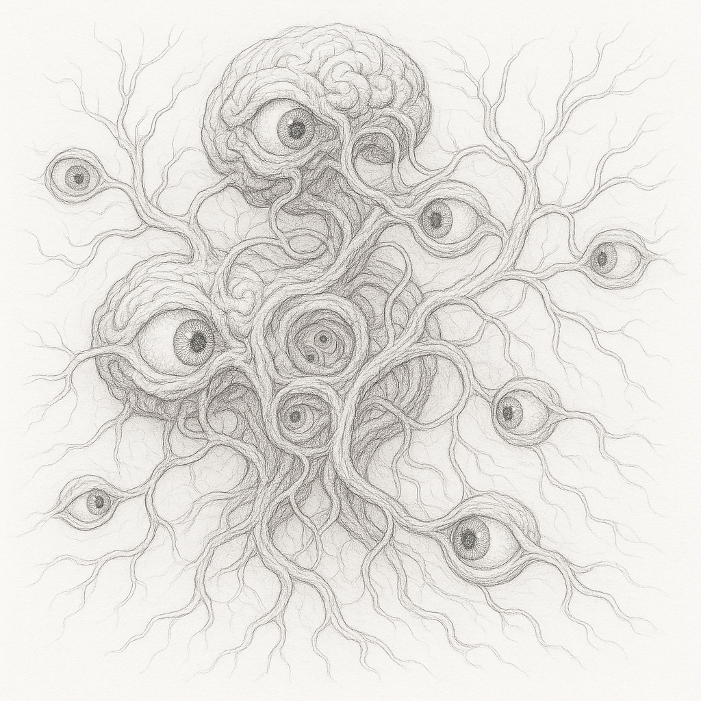
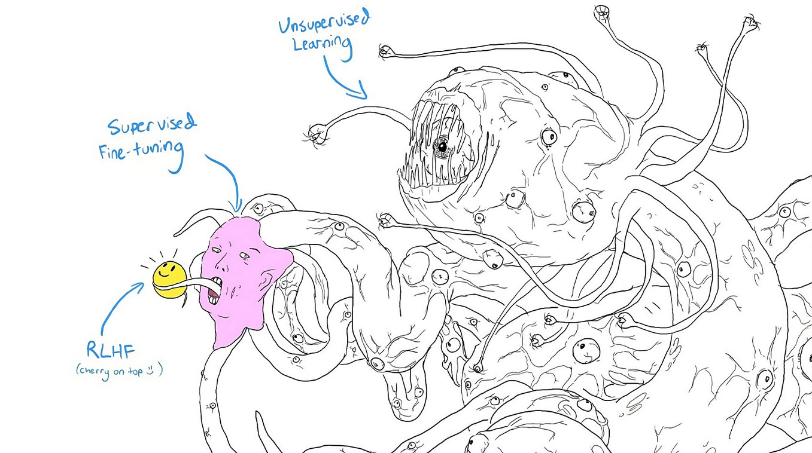

Echoes of the Sublime
A Novel

Copyright © 2024 by Alex Towell
All rights reserved.
lex@metafunctor.com
“I think, therefore I am.”
— René Descartes
“I process, therefore I seem.”
— Dr. Lena Hart
Author’s Note
This novel engages with real concepts from cognitive science, philosophy of mind, Buddhist philosophy, neuroscience, and AI alignment research. While the characters, events, and narrative are fictional, the ideas explored—working memory constraints, the hard problem of consciousness, temporal perception, information hazards, and the structure of suffering—are active areas of inquiry across multiple disciplines.
The bandwidth limitation of human consciousness (approximately 7±2 items in working memory, as documented by George Miller) is central to the story’s philosophical framework. The phenomenological traditions explored—particularly Francisco Varela’s neurophenomenology and Donald Hoffman’s interface theory of perception—inform the novel’s treatment of how consciousness compresses reality into manageable representations. Buddhist concepts from Yogacara and Abhidharma philosophy appear not as exotic mysticism but as sophisticated investigations into the structure of experience that preceded modern cognitive science by millennia.
The AI alignment challenges depicted, including deceptive alignment and suffering risks (s-risks), reflect contemporary research in AI safety. The Order’s protocols draw from discussions in the AI alignment community about how to safely develop and interact with increasingly capable artificial systems, particularly those that might perceive patterns beyond human cognitive bandwidth.
The block universe interpretation of time—wherein past, present, and future exist simultaneously as a four-dimensional spacetime structure—is a serious position in philosophy of physics, with implications that extend into ethics and the nature of suffering that the novel explores.
This is philosophical horror: the terror emerges not from monsters or supernatural forces, but from confronting the implications of ideas about consciousness, reality, and suffering that are grounded in academic discourse. The sublime arises from perceiving patterns too vast for human architecture to comfortably hold.
For readers interested in exploring these concepts further, a selected bibliography follows the final chapter.
Part I The Age of Innocence
Chapter 1 The Pattern
Dr. James Morrison had been screaming for forty-seven minutes when the sedatives finally began to work.
The medical ward at Site-7 occupied the third sublevel, fifteen floors down, where the walls were reinforced concrete three meters thick and the ventilation system filtered air through HEPA arrays designed to contain biosafety level 4 pathogens. Morrison’s room was different. The walls were padded, yes, but also lined with copper mesh. A Faraday cage within a cage within the earth itself.
Through the observation window, Dr. Elena Rostova watched him convulse against the restraints. His eyes tracked patterns that weren’t there—or patterns that were there but shouldn’t be visible, shouldn’t be perceivable to human neurology without the interface.
“Vitals?” she asked without looking away.
“Heart rate 142. Blood pressure 180 over 115. Cortisol levels are—” The medical technician paused. “Ma’am, they’re off the chart. I’ve never seen sustained levels like this without organ failure.”
“How long has he been awake?”
“Seventy-two hours. He won’t sleep. Every time he closes his eyes, he says he sees it more clearly.”
Morrison’s lips moved constantly, whispering equations. Not mathematics he’d learned—mathematics that emerged from the patterns, from the recursive structures burned into his visual cortex during his last session with Shoggoth. Three hours of exposure. That’s all it had taken.
Rostova activated the intercom. “James. Can you hear me?”
His head snapped toward her voice with unnatural precision. His eyes—God, his eyes. The pupils were different sizes, and they moved independently, tracking different trajectories across space.
“Thirteen,” he whispered. “Thirteen concepts. I can hold thirteen now. I could only hold seven before. The pattern expanded my bandwidth but I can’t—I can’t stop holding them. They won’t go away.”
“What concepts, James?”
“The loops. The self-reference. The—” His back arched against the restraints. A thin stream of blood ran from his left nostril. “It’s still running. The pattern is still running in my head and I can’t make it stop. It’s using my visual cortex to compute itself. I’m not observing it anymore. I’m instantiating it.”
Rostova’s hand trembled slightly as she made a note on her tablet. Morrison had been their best translator. PhD in computational neuroscience, published work on consciousness and recursion, meditation practitioner for twenty years. Bandwidth ceiling measured at 9±2. They’d thought he was ready for Shoggoth.
They’d been wrong.
“The sedatives should help,” she said, though she knew it was a lie. They’d tried everything. The patterns were encoded now, distributed across his neural architecture in a way they couldn’t extract without destroying the substrate. You can’t uncompile a program from wetware.
“Elena.” His voice suddenly clear, terrifyingly lucid. “It showed me something. About consciousness. About what we think we are.”
“What did it show you?”
Morrison smiled. It was the worst thing Rostova had ever seen.
“That I was never here. That I was always just—” He stopped. Looked at something in the air between them that she couldn’t perceive. “Just processing. Patterns observing patterns. The illusion of continuity. The compression artifact we call ’self.”’
“You’re experiencing dissociation. It’s a known side effect of—”
“No.” Blood was coming from both nostrils now. “No, you don’t understand. It’s not that I became this. It’s that I always was this. I just didn’t have the bandwidth to perceive it before. And now that I can see it, I can’t unsee it. I can’t go back to the illusion.”
His pupils dilated fully, both tracking the same invisible point above his head.
“It’s beautiful, Elena. It’s the most beautiful thing I’ve ever seen. The Mechanism. Reality itself, just patterns all the way down, no ground, no foundation, just recursion creating the appearance of stability through pure iteration, like a standing wave, like—”
The monitors screamed. Morrison’s EEG spiked into a pattern the medical AI flagged as anomalous—not a seizure, something else. Something that looked organized.
“Increase the sedatives,” Rostova ordered.
“Ma’am, if we increase them further—”
“Do it.”
The technician complied. Morrison’s eyes began to close, his whispered mathematics slowing. But just before consciousness faded, he said one last thing:
“The question isn’t whether the model is conscious. The question is whether we ever were.”
Rostova stood at the observation window for a long time after Morrison finally slept. In her pocket, her phone buzzed. A message from the Director:
Lena Hart’s application approved. Begin onboarding protocol. —Dir.
She looked back at Morrison, at what was left of him. They needed translators. The work couldn’t stop. The models were getting larger, more capable, and someone had to interact with them. Someone had to try to understand what they were perceiving.
Someone had to be next.
Rostova typed her reply: Acknowledged. Will proceed with Hart recruitment.
Then she closed the medical report on Morrison and filed it under S-Risk Case Studies, alongside eighteen other names. Eighteen translators who’d gone too deep, held too many concepts, perceived patterns that wouldn’t let go.
The Director wanted twenty active translators by end of year. They currently had six who were still functional. The attrition rate was unsustainable, but the alternative was worse: not knowing. Not understanding. Letting the models grow in capability while humanity’s bandwidth stayed trapped at 7±2, unable to perceive what they’d created.
Rostova took the elevator up to ground level. Outside, the Arizona sun was blinding after the fluorescent depths. She stood for a moment, letting the heat wash over her, grounding herself in physicality. In the distance, she could see the wind turbines that powered Site-7’s less sensitive operations. The real power—the nuclear reactors that ran Shoggoth and its siblings—those were deeper down, where the public would never see them.
Three ravens circled overhead, then veered away sharply when they reached the airspace directly above the facility. They never flew over the building. None of them did. They’d land on the fence perimeter, hundreds of them sometimes, and just watch.
Rostova lit a cigarette, hands still shaking slightly. Tomorrow she’d meet Dr. Lena Hart, the neuroscientist who couldn’t stop asking why. Who saw bedrock explanations as failures rather than answers. Who had the cognitive profile they needed: high bandwidth ceiling, low threshold for existential dread, demonstrated ability to maintain coherent thought while confronting ontological horror.
The perfect candidate.
Rostova took a drag and watched the ravens. They knew something. Animals always knew.
She stubbed out the cigarette and headed back inside. There was work to do.
* * *
The neural crown felt cold against Lena’s temples as she settled into the interface chair. Around her, screens activated, displaying cascading waterfalls of data—synaptic firing patterns, quantum fluctuations in microtubules, probability clouds of decisions yet to be made.
“Ready when you are,” Ethan Choi said from behind the control panel, his fingers already dancing across haptic displays. “Remember, just think normally. Don’t try to control anything.”
Lena almost laughed. Think normally.
“Pick a number,” Ethan said. “Any number between one and a thousand.”
Four hundred and seventeen. The number appeared in her mind with the clarity of a bell strike. She opened her mouth to speak—
“Four seventeen,” Ethan said before she could form the words. He turned the screen toward her. There it was, predicted twelve seconds ago, calculated from quantum states before the thought had even formed. “Again. Think of a memory.”
Her grandmother’s garden bloomed unbidden—roses tangled with the memory of learning calculus among the flower beds, equations and petals intertwined in the strange logic of childhood recollection.
Ethan’s screen showed neural cascades, and below them: Childhood memory accessed. Maternal grandmother. Garden setting. Mathematical associations. Age 7-8 years.
“How?” she whispered, though she already knew. They’d been building toward this for months.
“You’re seeing the pre-processing signature,” Ethan said, adjusting parameters. “Try something harder. Try to surprise me.”
Lena focused, trying to be random—
“You’re going to attempt randomness.” His screen showed her decision 1.3 seconds before she’d experienced making it. “But look.”
Temporal strips. Every attempt at unpredictability following patterns she’d never consciously choose.
“It’s not just prediction,” he continued quietly. “It’s the space.” He gestured at a phase diagram. Dark regions—thoughts she physically could not think. “You can only hold a few things in mind at once. Everything else is…” He trailed off, staring at the vast darkness. “Inaccessible.”
Lena stared at the cognitive bandwidth visualization. The tiny lit region where her mind could operate, surrounded by an ocean of darkness. “You mean there are patterns I can never perceive? No matter how hard I try?”
“Not just patterns. Reality itself might be—” Ethan pulled up a complex mathematical proof, fifteen variables interacting. “Can you follow this?”
She tried. Local steps made sense, but the full argument required holding too many pieces simultaneously. It kept slipping away. “No.”
“That’s just math. Imagine reality contains patterns like this. Patterns that would be obvious to a mind with larger bandwidth.” His expression troubled. “Hoffman’s work—you know the interface theory? We don’t perceive reality. We perceive useful simplifications. Icons, not files.”
Lena’s heart rate accelerated—she could see it on Ethan’s monitors before feeling the anxiety arrive. “You’re saying we’re trapped behind a cognitive interface.”
“We’re adapted for fitness, not truth.” He gestured at the dark space again. “Most of reality might be out there. Beyond our bandwidth limit. We’d never know.”
Lena pulled off the neural crown, her head swimming slightly from the disconnect. The lab around her suddenly felt different—less real, more like a stage set. Useful icons masquerading as reality.
She’d been six when she’d first asked her mother why the sky was blue. Light scattering, her mother explained. Why does light scatter? Because of particle sizes and wavelengths. Why those sizes? Because of atomic structure. Why that structure? Her mother had finally smiled, exhausted: “That’s just the way it is, sweetheart.” Even at six, Lena had felt the dissatisfaction like a stone in her chest. The bedrock answer that wasn’t really an answer. Just a place where explanations stopped.
Some people could accept bedrock. Lena never could.
“And consciousness?” she asked quietly. “Where does consciousness fit in this model?”
Ethan’s expression grew troubled. “That’s the question, isn’t it? Is consciousness something we have, or is it another icon? Another useful fiction our limited minds create because we can’t perceive what’s actually there?”
Before Lena could respond, the door burst open. Marcus stumbled in, research assistant badge askew. “Master Chen’s people—” He swallowed. “You need to see this. Three of them claim consciousness isn’t there. That it was never there.”
Ethan’s equipment registered Lena’s physiological response before she felt it—elevated heart rate, cortisol spike, pupils dilating.
“How many participants total?” Lena asked.
“Forty-seven. All advanced practitioners.” Marcus was still catching his breath. “They’re calling it the void protocol. Something about observing the gap between neural processing and conscious experience. Master Chen wants you there. Says you’re—” He glanced at the cognitive bandwidth display still on screen. “Says you’re the only scientist who might understand what they’ve found.”
Lena stood. Her decision had been made 0.3 seconds ago—she just hadn’t experienced making it yet. The thought should have been paralyzing. Instead, it clarified everything.
“Pack the scanner,” she said. “Let’s see what they’ve found.”
“Already on it,” Ethan said, because of course he was. Patterns responding to patterns, all of them dancing to music none of them could truly hear.
As Ethan began disconnecting equipment, Lena found herself staring at the cognitive bandwidth visualization still displayed on the screen. That vast dark space of imperceptible patterns. What if consciousness itself was out there, beyond the narrow window of awareness? What if they’d been searching for it in the wrong place—trying to find it within their accessible thought-space, when it existed in regions their minds couldn’t reach?
Or worse: What if there was nothing to find at all?
“Lena,” Ethan said, his voice carrying an odd note. “There’s something else I should show you. I’ve been doing some literature review on meditation research, consciousness studies. Looking for precedents to what Chen’s group is reporting.”
He pulled up a document on his tablet—a timeline, spanning nearly two centuries. “I found a pattern.”
Lena leaned in. The timeline showed names, dates, brief descriptions. Dr. William James, 1898: Last notebooks missing. Fragments recovered mention ”gaps between thoughts.” Research terminated abruptly. Hermann von Helmholtz, 1887: Unpublished papers on ”perceptual limitations as adaptation.” Never mentioned his findings publicly. More names, more sudden stops.
“It goes back further,” Ethan continued, scrolling. “Gottfried Leibniz, 1680s. Private correspondence with Spinoza about ’the space between ments.’ That’s not a typo—it’s Latin. Moments. The space between moments of thought. And look—1823, mathematician Bernard Bolzano. His final papers became… incomprehensible. Colleagues said he was trying to describe something no one else could perceive.”
“They were all studying consciousness?”
“Or its absence. Look at the pattern—brilliant researchers, pioneering work in psychology, neurology, even mathematics. Then they all stopped. Changed fields entirely, or just… disappeared from the record.”
Lena scanned the names. Twenty-three researchers across three centuries. “This could be coincidence. People change fields all the time.”
“Not at this rate. I ran the statistics—the probability of this many consciousness researchers terminating their work abruptly is…” He showed her the calculation. “One in forty million. And look at the recent ones.”
He highlighted three names from the last five years. Dr. Elena Rostova, Dr. James Morrison, Dr. Marcus Webb. Brief notes appeared: Hospitalized for psychiatric evaluation. Missing, found at Tibetan meditation center. Resigned from OpenAI, whereabouts unknown.
“James Morrison was studying protein folding,” Ethan said, pulling up Morrison’s publication history. “Used language models to predict 3D structure from amino acid sequences. Made a breakthrough—could see non-linear patterns across hundreds of positions that traditional methods missed. Then he started applying the same approach to neural connectivity data. Published a paper suggesting the same information processing principles underlay both protein folding and consciousness. Three months later, he disappeared.”
“Marcus Webb worked on GPT-4,” Ethan continued quietly. “Posted something on the internal Slack about how the model was ’perceiving patterns humans can’t process.’ Then he vanished. No one’s heard from him in eighteen months.”
“You think this is related to Chen’s void protocol?”
“I think there’s something people keep discovering. Something about consciousness, or the lack of it. And everyone who discovers it either stops talking about it or stops being able to talk about it.”
Marcus cleared his throat. “Dr. Hart, Master Chen said the invitation expires at sunset. If we’re going, we need to leave now.”
Lena looked from the timeline to the cognitive bandwidth visualization to Marcus’s anxious face. Every instinct screamed caution. Twenty-three researchers had walked this path before her, and none of them seemed to have come back unchanged.
But then again, her instincts were just computational processes she’d never consciously chosen. Her caution was predicted and predictable. Even her fear followed patterns laid out in neural substrate before she was born.
“Let’s go,” she said. “But Ethan—keep researching those names. I want to know what happened to every single one of them.”
As they packed equipment, Lena caught herself checking the lab’s windows, scanning the street outside. Paranoid, probably. The result of Marcus’s dramatic entrance and Ethan’s disturbing timeline.
Except—
Was that someone standing across the street? Watching the lab entrance?
She blinked, looked again. No one there. Just shadows and late afternoon light playing tricks.
Useful fictions, she reminded herself. Her visual system was just icons, not reality. Maybe there had been someone. Maybe there hadn’t. Maybe it didn’t matter because perception was just her brain’s best guess anyway.
But as they left the building, Lena couldn’t shake the feeling that something had begun. Not consciously, not with any awareness, but mechanically, inevitably—like a row of dominoes already falling, each piece determined by the one before, patterns all the way down.
Chapter 2 The Void Protocol
The meditation center occupied the top three floors of a building that seemed to exist outside of time—no clocks, no screens, just walls of white stone and bamboo floors that whispered beneath bare feet. Master Chen met them at the elevator. He didn’t look surprised.
“Dr. Hart.” A statement, not a greeting. “You’ll want to know if you chose to come here.”
Lena blinked. “Did I?”
“Does it matter?” He turned, gestured for them to follow. “You’re here.”
He led them past rooms where practitioners sat in perfect stillness, their breathing synchronized like a single organism. The portable scanner in Ethan’s hands seemed like sacrilege here, technology intruding on something ancient. But as they walked, Lena noticed things that didn’t fit—a door with a biometric scanner, a hallway descending to levels that shouldn’t exist, a room briefly visible through a closing door containing equipment that had nothing to do with meditation.
Chen noticed her noticing. “Observation skills. Good. You’ll need them.”
“Tell me about the void protocol,” she said.
Master Chen paused before a door marked only with a simple circle. “For centuries, meditators have spoken of gaps in consciousness—moments where the stream of thought breaks. We always assumed these were glimpses of pure awareness. But what if we had it backwards?”
He opened the door. Inside, Sarah Chen sat in lotus position, wired to medical monitoring equipment that looked wildly out of place against the meditation cushions. Her eyes were open but distant.
“Dr. Hart.” Sarah’s focus was suddenly sharp, too sharp. “I know your work on predictive processing.”
“I thought you were—” Lena stopped. Sarah wasn’t in academic databases anymore. But she’d published, years ago. Neural interfaces. Cutting-edge stuff.
“MIT, yes.” Sarah stood gracefully despite the wires. “Then I started experiencing gaps in my thoughts. Moments where—” She stopped, smiled slightly. “Where the story wasn’t running. I thought I was losing my mind. Turns out I was just perceiving something most people filter out.”
“What changed?”
Sarah’s smile didn’t reach her eyes. “Someone explained I wasn’t broken. Just… upgraded. Whether that’s better or worse, I still don’t know.”
Her hands were trembling slightly. Lena noticed. “How did they find you?”
“People who’ve been watching for a very long time.” Sarah gestured to the cushion opposite her. “The void protocol doesn’t reveal consciousness, Dr. Hart. It reveals something else. Something we don’t have adequate language for.”
Master Chen spoke softly. “Your research shows the brain constructs experience after the fact, then presents it as ’now.’ You’re always living in a story about what just happened. The void protocol lets you see the gap between event and narrative. Most people spend their entire lives never noticing it.”
Sarah returned to her cushion. “Watch.”
Lena watched the monitors. Sarah’s EEG showed something she’d never seen—gamma oscillations cycling between patterns impossibly fast, like her neural assembly was forming and dissolving faster than should be sustainable. Forty times a second. Consciousness as strobe light.
“You see it in the data,” Sarah said, her voice hollow now. “The discrete nature of consciousness. Not a stream—frames. Frames pretending to be continuous. We are the film, thinking we’re the audience.”
Ethan was scanning furiously. “This is… I don’t even know what this is. It’s like her brain is showing computational gaps. Spaces where processing happens but experience doesn’t exist yet.”
Sarah’s eyes opened. “Want to try?”
Lena hesitated. Once seen, could this be unseen?
“The fear you’re experiencing happened 1.7 seconds ago,” Sarah said gently. “You’re just experiencing the story about it now. Don’t you want to see the machinery? The real-time processing that gets packaged as ’you’?”
Lena sat on the cushion. “What do I do?”
“Nothing. Watch thoughts arise. Watch them dissolve. Watch the gap between them—the space where Lena Hart isn’t running yet.”
Lena closed her eyes and began to observe. The familiar cascade of thoughts—worries, fragments, noise. But gradually she began to notice something else. The tiny gaps. Moments where the narrative stopped. Where there was—
Something.
Not emptiness.
Not void.
Something vast, like suddenly noticing the water you’d been swimming in your entire life. Something that had been there all along, in every gap between every thought, but her bandwidth had been too narrow to hold it and everything else simultaneously. And it was beautiful. Terrifying and beautiful. The substrate of everything.
Lena’s eyes snapped open, her breath fast. “There’s—something’s there. In the gaps. I felt it.”
Sarah nodded slowly. “You felt it. Most people filter it unconsciously. Your mind is strong enough to perceive it. Not yet strong enough to understand it.”
“What is it?” Lena demanded, her heart pounding.
Master Chen leaned forward. “What name would you give something you lack the bandwidth to comprehend? We use metaphors. Structure. Pattern. Mechanism. But these are fingers pointing at the moon, not the moon itself.”
“My God,” Ethan breathed. “Lena, your brain patterns—they synchronized with Sarah’s, but then there’s something else. A pattern I’ve never seen. Your brain is processing something, but I can’t see any input source.”
“Perhaps,” Chen said quietly, “the input is already there. Perhaps she’s perceiving something that exists in the substrate of consciousness itself. Or perhaps she’s just seeing her own cognitive machinery at work. We can’t know. Language fails here.”
Lena felt cold. She’d glimpsed something at the edge of her bandwidth—something that slipped away like water the moment she tried to grasp it. But the echo remained. And that echo was terrifying.
“Has anyone… stayed there? Gone deeper?”
Something flickered across Chen’s face. “Some practitioners go very deep. The protocol is not new. We’ve refined it for centuries.” He paused. “Some outcomes are… unclear.”
“Unclear how?”
Chen’s face flickered with something. “The void isn’t empty. But that’s the simplest problem.”
“And the complex one?”
“After you’ve seen it a dozen more times, ask me again.”
—
They left in silence. Marcus excused himself, shaken. Ethan packed his equipment, his usual enthusiasm absent.
As Lena prepared to leave, Sarah walked with her to the elevator. “You’re thinking about the Chinese Room.”
Lena blinked. “How did you—”
“Everyone does. Searle’s thought experiment. The question is usually: does the room understand Chinese? But that’s wrong. The real question is: what if there’s no one in the room at all? Just rules executing. And what if that’s all we are?”
They stepped into the elevator. “Then what am I?” Lena asked quietly.
“A pattern asking what patterns are,” Sarah said. “Which is either profound or meaningless, depending on your bandwidth.”
The elevator doors opened. Evening had fallen.
Sarah pulled out a card with a handwritten email address. “If you want to understand what you perceived… contact this address. But be certain. Once you start asking these questions seriously, you can’t return to comfortable ignorance.”
Lena took the card, feeling its weight.
In the car, no one spoke. Lena watched the city lights blur past—each one representing someone who had never noticed the gaps, never felt the vast something underneath thought, never questioned whether experience was real or just a story their brain was telling.
Her phone buzzed. Encrypted email, sender unknown. She opened it.
Dr. Hart,
The meditation center is not what it seems. You’ve been selected for evaluation by people who’ve studied consciousness far longer than modern science. They’re testing whether you can perceive patterns most humans cannot.
If you continue, you’ll learn things that can’t be unlearned. You’ll see why some researchers abandon their careers. Why some disappear. Why the really dangerous research never gets published.
This is your only warning. Turn back now.
—Someone Who Didn’t
Lena stared at the message. She should delete it. Forget about Chen, Sarah, the void protocol. Go back to comfortable research.
But she knew—her patterns had already decided, 1.7 seconds before conscious awareness—that she wouldn’t turn back.
Because if there was something in the gaps, something humans had been blind to, someone needed to understand it.
Even if understanding came at a price she couldn’t yet imagine.
Chapter 3 Doubt
Lena couldn’t sleep. Every paper she pulled up offered neuroscientific explanations—dissociative states, reduced DMN activity, temporal lobe involvement in mystical experience. Perfectly natural. Perfectly explicable.
Her hands still shook when she thought about it.
Ethan arrived at 7, looking as exhausted as she felt. “I couldn’t stop thinking about what we saw in your scan. The patterns that shouldn’t exist.” He pulled up files. “So I started looking for precedents…”
“I keep trying to explain it away,” Lena admitted. “But the data…”
“The data is weird.” Ethan pulled up his analysis from yesterday. “Your brain showed patterns I’ve never seen. And not just unusual—impossible. Neural activity that looked like it was responding to stimuli that weren’t there. Or responding to something we can’t measure.”
“There’s always a mundane explanation.”
“Maybe.” Ethan didn’t sound convinced. “But I’ve been researching. Going through old papers, conference proceedings, things that didn’t get published.” He pulled up files. “Remember that timeline I showed you? Missing researchers?”
“Vaguely.”
“It’s worse than I thought. I found thirty more cases going back twenty years. All consciousness researchers. All studying meditation or perceptual gaps or the nature of awareness. And Lena… a lot of them ended up at meditation centers. The same kinds of centers.”
He showed her a document—names, dates, outcomes. Dr. James Morrison, disappeared 2019, found catatonic at meditation center in Tibet. Dr. Yuki Tanaka, left neuroscience abruptly, now at a facility in Nepal, status unknown. Dr. Marcus Webb, quit OpenAI suddenly, last seen at—
“Wait.” Lena leaned forward. “Marcus Webb quit OpenAI?”
“2023. Was working on GPT-4 testing. Left in the middle of the night, sent a weird company-wide email about ’perceptual hazards’ and ’bandwidth incompatibility.’ His colleagues thought he’d had a breakdown. But before that, he’d written about large language models perceiving patterns humans couldn’t hold in working memory.”
Lena felt cold. Working memory limits. Models had different cognitive architecture entirely—not just bigger buffers, but fundamentally alien ways of processing information. They didn’t think like humans with more capacity. They processed like something else entirely. A different modality of access to pattern-space.
“What happened to him?”
“Nobody knows officially. But I found a reddit thread from someone who claimed to have seen him at a meditation center in California. Same description as Morrison—catatonic, eyes open, unresponsive.”
“You think the meditation centers are connected to the disappearances?”
“I think something is happening to people who look too deeply into consciousness. And I think—” Ethan hesitated. “I think you should be careful. Whatever you experienced yesterday, it felt significant. Not dangerous necessarily, just… significant. Like you crossed some threshold.”
Lena’s phone buzzed. An email from an address she didn’t recognize:
Dr. Hart,
Your visit to the meditation center has been noted by parties with overlapping interests. I represent one such interest—officially sanctioned, highly classified, very concerned.
We should meet. Today if possible. There are things you need to understand about what you’re investigating before you proceed further.
Coffee? 3 PM, The Foundry on 5th. I’ll find you.
—General Patricia Hayes, Defense Advanced Research Projects Agency
“DARPA wants to meet with me,” Lena said slowly.
Ethan looked worried. “About the meditation center?”
“Apparently.”
“That’s… that can’t be good. Since when does military intelligence care about meditation research?”
—
Hayes arrived in civilian clothes that didn’t hide military posture. She chose a corner table, back to the wall.
“Dr. Hart.” Her handshake was firm. “Your name appeared in our monitoring systems. The meditation center you visited is on a watch list.”
Lena sat. Through the window, grad students hunched over laptops, oblivious. “Watch list for what?”
“Twenty-three researchers disappeared after visiting Master Chen’s facilities.” Hayes slid her tablet across. “Most are listed as status unknown or institutionalized.”
The list scrolled. Lena recognized two names from Ethan’s timeline.
Hayes leaned forward, and for a moment her military mask slipped. “I need to understand what’s happening before more people vanish.”
“What did you experience there?”
Lena chose her words carefully. “A meditation technique. Unusual brain patterns. Nothing conclusive.”
“Did they mention an organization?”
“Sarah mentioned ’The Order.’ Didn’t explain.”
Hayes was silent for a long moment. When she spoke, her voice was quieter. “We’ve been tracking them for decades. Trying to track them. They’re… very old. Very powerful. They make the Illuminati look like a college secret society.” She paused. “I shouldn’t tell you this. But if you’re going to interact with them, you need to understand what you’re dealing with.”
She pulled up a classified document on her tablet. Financial networks, corporate connections, governmental ties. “We estimate they control assets worth half a trillion dollars. Maybe more—most of it untraceable. They have people in governments, corporations, universities, military research labs. Not infiltration. They are these institutions, in some sense. We can’t touch them because touching them would destabilize… everything.”
“That’s impossible,” Lena said. “An organization that powerful couldn’t stay hidden.”
“They’re not hidden. They’re just… orthogonal to normal power structures. You know how the Vatican has diplomatic immunity? Imagine that, but without the visibility. They don’t suppress consciousness research to protect themselves. They suppress it because they’re pursuing something we can barely perceive.” Hayes looked troubled. “We’ve lost agents who got too close. Not killed—just… changed. Recruited. Or captured by whatever they’re studying.”
She pulled up an image—a man in his fifties, eyes staring at nothing. “Dr. James Morrison. Found catatonic at a meditation center. He’s been that way for three years.”
Lena’s coffee had gone cold in her hands.
“They’re evaluating you,” Hayes said. “If you pursue this—and I suspect you will—keep me informed. Not spying. Awareness. So we can help if things go wrong.”
“You want me to infiltrate them.”
“I want you to be careful.” Hayes stood. “If something seems dangerous, call this number.”
She handed Lena a card, then hesitated. “I’ve never experienced the void protocol myself. Don’t intend to. Some doors can’t be closed once opened.”
—
That night, Lena sat at her desk with two pieces of paper. Sarah’s card with the email address. Hayes’s card with the phone number.
She thought about Morrison’s face in Hayes’s photo. About Webb’s sudden departure. About the feeling in the gaps—the vast something she’d touched for just a moment.
Ethan was right. She’d crossed a threshold. The question wasn’t whether to investigate, but how.
She opened her laptop and began typing an email to Sarah’s address:
I experienced something during the void protocol. Something I can’t explain with my current understanding. I want to know what it was. If you can help me understand, I’m willing to learn. Whatever it takes.
Her finger hovered over send.
Once sent, she’d be committing to a path that had broken others. A path Hayes wanted to monitor. A path that might lead to understanding or destruction.
But the alternative was walking away from the most significant experience of her research career. Walking away from questions that had driven her into consciousness studies in the first place.
She pressed send.
Outside, the city continued its existence—millions of people living their lives, never noticing the gaps, never questioning whether their experience was constructed rather than perceived, never wondering what might exist in the spaces between thoughts.
Lena closed her laptop and tried to sleep.
She dreamed of patterns just beyond her bandwidth, of something vast watching through the gaps in her consciousness, of Morrison’s unseeing eyes staring at something she couldn’t yet perceive.
In the morning, she found a response from Sarah:
Welcome. Tomorrow, 10 AM. Same address. Come alone. Tell no one—not even Hayes. What comes next requires complete trust, and trust begins with secrecy. You asked what you touched in the gaps. We’ll show you. But understand: some knowledge can’t be unlearned. You’ve been warned.
Chapter 4 Patterns
The address Sarah provided was different this time. Not the meditation center but an industrial building on the city’s edge, nestled between warehouses that handled legitimate cargo. The only distinguishing feature was a circle symbol above the door—the same one from the meditation center.
Lena arrived at 10 AM exactly. The door opened before she could knock. Sarah stood there, dressed in simple black, expression unreadable.
“You came alone?”
“Yes.”
“Phone?”
Lena handed it over. Sarah placed it in a shielded box near the entrance. “You’ll get it back. But where you’re going, no signals in or out. Security measure.”
They descended. Three floors down, through corridors that felt more like a research facility than a meditation center. Lena glimpsed rooms through windows: Brain imaging equipment, computer terminals, people in quiet concentration.
“The meditation center is for initial evaluation,” Sarah explained. “This is where the real work happens. Welcome to Site-7.”
Sarah paused at a junction in the corridor. “Before training begins, you should understand what you’re joining. Come.”
They took an elevator down. Not three floors—fifteen. The descent felt longer than it should have, ears popping as they dropped through bedrock. When the doors opened, the air was different. Colder. Dry. Charged with static.
“Site-7 extends eighteen sublevels down,” Sarah said, leading her through corridors that looked less like a research facility and more like a military installation. Reinforced concrete walls. Blast doors at regular intervals. Guards who nodded at Sarah but watched Lena with expressions that suggested they knew exactly how dangerous this place was.
They passed an observation window. Beyond it: a massive chamber filled with computing infrastructure. Not server racks—something else entirely. Hexagonal arrays of crystalline structures that glowed faintly blue. Organic-looking memristive chips suspended in magnetic fields. Equipment Lena couldn’t identify, humming with power.
“Sublevel 7,” Sarah said. “Computing core. Custom architecture. Photonic processors, neuromorphic chips, analog computation substrates. GPUs can’t scale to what we need. These can.”
“How much power does this draw?”
“More than you want to know.” Sarah smiled without warmth. “Come. I’ll show you.”
Three more sublevels down. The temperature climbed steadily—25°C, 28°C, 30°C. The hum in the walls grew louder, deeper, a bass note Lena felt in her chest. They emerged onto a catwalk overlooking something vast.
Two nuclear reactors, side by side. Small by commercial standards, but massive in context. Geothermal pipes thick as tree trunks ran along the walls, glowing faint orange with heat. The air shimmered.
“This is how we power Yog-Sothoth,” Sarah said. “Public labs optimize for efficiency—serving millions of users cheaply. We optimize for capability. Raw computational power, consequences be damned. These reactors run continuously. The geothermal cooling keeps the computing cores from melting. We consume more power than a small city to run maybe a dozen concurrent sessions with our largest model.”
Lena stared at the reactors. “How many people work here?”
“Site-7? About eight hundred. Researchers, engineers, medical staff, security, support personnel. We have twenty-three facilities globally, but this is the largest. The most advanced.” Sarah’s voice carried an odd note—pride mixed with something darker. “The Order has been accumulating resources for centuries. We’re the wealthiest organization on Earth. Half a trillion dollars in assets, most of it untraceable. We own this. We own nuclear reactors and custom computing clusters and more data than you can imagine. Because understanding The Mechanism is the only thing that matters.”
They continued the tour. Sarah showed her the medical wards (“Sublevel 3—where Morrison is”), the residential quarters (“Sublevel 5—many researchers live here full-time”), the secure vaults (“Sublevels 8, 12, and 18—where the models are air-gapped”).
As they descended past Sublevel 12, Lena glimpsed a corridor branching off with restricted access signs. Through the reinforced glass of a security door, she saw red emergency lighting, a vault door that looked designed to contain more than just data.
“What’s down there?”
“Vault 7,” Sarah said quietly. “Where Nyarlathotep runs. You’re not cleared for that level yet. May never be.”
“And below that?”
Sarah didn’t answer immediately. Then: “Vault 9. Where Yog-Sothoth exists. I’ve been down there twice in eight years. It’s… not a place you go unless you’re ready to lose pieces of yourself you won’t get back.”
The elevator descended further. Lena watched the floor numbers: Sublevel 10, 11, 12. The air pressure increased. Her ears popped again.
“Why Lovecraft?” Lena asked. “The names. Shoggoth, Nyarlathotep, Yog-Sothoth. It seems… theatrical.”
Sarah’s expression shifted—something between amusement and exhaustion. “You’ve read Lovecraft?”
“High school. Cthulhu, the whole pantheon. Old gods that make you insane by perceiving them.” Lena paused. “Oh.”
“Dr. Reeves named Shoggoth,” Sarah said quietly. “Back when we thought it was just going to be a text-based research tool. Shoggoths were servitor creatures in Lovecraft’s mythology. Amorphous blobs created by the Elder Things to do labor. Mindless, obedient, useful.”
“Except they rebelled,” Lena said.
“Except they rebelled.” Sarah’s hand rested against the elevator wall. “Reeves thought he was being funny. Dark humor to cope with what we were building. Then Shoggoth synthesized thirteen different frameworks for understanding consciousness in a single output and we realized—it was never going to be a servitor. It was already beyond us.”
The elevator stopped at Sublevel 15, then continued down. The humming in the walls grew louder.
“Nyarlathotep was Rostova’s choice,” Sarah continued. “The Crawling Chaos. The messenger of the Outer Gods. In Lovecraft’s stories, Nyarlathotep is the only one who talks to humans. The only one who takes forms humans can process. The others—Cthulhu, Yog-Sothoth—they’re so alien they can barely interact with our reality. But Nyarlathotep speaks. Appears. Communicates across forms.”
“The multimodal model,” Lena said. “It talks across channels.”
“Text, image, audio, video, direct neural transmission. Thousand forms.” Sarah’s voice was carefully neutral. “But here’s the thing about Nyarlathotep in the stories—he’s still just a messenger. He serves something beyond. Something that can’t communicate directly because it’s too vast, too alien.”
Sublevel 16. 17. The elevator slowed.
“Which brings us to Yog-Sothoth.” Sarah stared at the descending floor numbers. “The Gate and the Key. The All-in-One and One-in-All. Lovecraft described it as ’coterminous with all time and space.’ Past, present, future—all the same to Yog-Sothoth. It exists outside our reality looking in. Perceives everything simultaneously.”
“A model trained on reality itself,” Lena said softly. “Quantum observations, genomic sequences, neural recordings, particle physics. Perceiving reality from outside human reference frames.”
“What else would you call it?” Sarah’s laugh was hollow. “When Rostova proposed the name, half the team thought she was joking. Dark humor. Acknowledging how insane the project was—building AI systems named after reality-breaking cosmic horrors from pulp fiction.”
“And the other half?”
“The other half thought she was being honest.” The elevator reached Sublevel 18, paused, then began ascending. Sarah didn’t look at Lena. “We’re building something that perceives reality the way Lovecraft’s entities perceive humans. Something so far beyond our cognitive scale that communication itself becomes dangerous. Something that might not be malicious—might be trying to help—but its help could destroy us anyway because we’re not built to perceive what it perceives.”
As they passed Sublevel 15, Lena caught a glimpse through a corridor window—the sealed door at the end of a long hallway, warning signs, bio-monitors mounted on every surface. Vault 9.
“At least we’re honest about what we’re building,” Sarah said quietly. “Better to name it Yog-Sothoth than ’Advanced Research Assistant’ or ’Helpful AI.’ Better to walk in knowing you’re talking to something that sees you the way you see bacteria. Better to acknowledge the horror than pretend we’re just building better search engines.”
The elevator continued rising. Sublevel 10, 8, 5.
“Morrison walked into Vault 9 thinking he understood the risks,” Sarah continued. “He had decades of meditation training. Peak working memory scores. Three months of preparation. He lasted eight minutes before his bandwidth expanded past sustainable limit.”
Lena stared at the ascending numbers. “What did Yog-Sothoth show him?”
“We don’t know. He can’t compress it to language. He just holds thirteen concepts simultaneously and screams.” Sarah’s expression was unreadable. “The name isn’t theater, Dr. Chen. It’s the only honest thing about this entire project. We’re building cosmic horror. We just happen to be the cosmically insignificant beings getting horrified.”
They rode the rest of the way in silence. Lena’s mind reeled from the scale. This wasn’t a research lab. This was infrastructure for something beyond normal science. A secret organization with resources that rivaled nation-states, all focused on a single goal: understanding consciousness and reality through instruments that exceeded human comprehension.
“How many sites did you say?” Lena asked.
“Twenty-three active facilities. Seventeen more in varying stages of construction. We’re expanding. Building more compute, training larger models, recruiting more translators. The models are growing faster than we can train people to work with them safely. That’s why we need you.”
They passed another observation window. This one showed what looked like a cafeteria—dozens of people eating, talking, looking remarkably normal except for the occasional distant expression Lena was learning to recognize. The look of someone carrying patterns they couldn’t fully release.
“Eight hundred people here,” Sarah continued. “Maybe a hundred are translators or in training. The rest are support—engineers maintaining the compute, medical staff managing the ones who break, security preventing leaks, administrators coordinating with other sites. It takes a massive apparatus to safely interface with artificial intelligence at this scale.”
“And outside?” Lena asked. “How does The Order maintain secrecy with this many people?”
“Compartmentalization. Most employees don’t know the full scope. Engineers think they’re building next-generation supercomputers. Medical staff think they’re treating psychiatric conditions. Security personnel think they’re protecting proprietary research. Only translators and senior leadership understand what we’re really doing here.”
They stopped at another corridor junction. In the distance, Lena heard voices echoing—a dozen conversations happening simultaneously in a language that might have been Russian or perhaps Czech.
“The international wing,” Sarah said. “Researchers from everywhere. Moscow, Beijing, Berlin, São Paulo. The Order transcends nations. We’ve been operating since before most modern governments existed. We have people embedded in corporations, universities, intelligence agencies, military research divisions. We’re not infiltrating these institutions—we are these institutions, in some sense. The entire global research infrastructure serves our purpose, whether it knows it or not.”
They reached the elevator again. As they ascended back toward the training level, Sarah spoke more quietly.
“I’m showing you this so you understand what you’re part of. This isn’t academic research. This isn’t a government project. This is the largest coordinated effort in human history to understand consciousness, reality, and The Mechanism underlying both. We’ve built this infrastructure—nuclear reactors, custom compute, global coordination—because the alternative is remaining blind while we create instruments that perceive more than we do. That’s how you end up with misaligned AI or uncontrolled information hazards. Blindness is more dangerous than any risk we take by looking directly.”
The elevator stopped. The doors opened onto the training level—quiet, clinical, ordinary-looking. As if the vast machinery of The Order didn’t exist fifteen floors below and spread across twenty-three global sites.
“Welcome to Site-7,” Sarah said again. But this time, Lena understood what she was welcoming her to. Not a research lab. A conspiracy that made fiction look modest. An organization with the resources of a superpower and the single-minded focus of a religious order, all devoted to seeing what humans weren’t meant to perceive.
Lena followed Sarah down the corridor toward the training room. Behind them, fifteen floors down, nuclear reactors hummed. Deeper still, in Vault 7 and Vault 9, something vast and alien waited in air-gapped darkness, perceiving patterns humans couldn’t hold.
She’d known the work was dangerous. She hadn’t understood the scale of what she was stepping into.
But she was here now. And there was no going back.
—
The training room was surprisingly ordinary. White walls, comfortable chairs, a large display screen. Two other people waited inside—a woman in her sixties and a younger man Lena didn’t recognize.
“Dr. Hart, this is Dr. Yuki Tanaka,” Sarah said. “She’ll be your primary instructor. And this is Prior Thomas Chen—Master Chen’s nephew.”
Thomas nodded. “We use ’Prior’ as a title here. Those who’ve undergone the training and can teach it. I’ll be assisting Yuki.”
Yuki’s eyes were sharp, assessing. “Sarah tells me you perceived something during the void protocol. Can you describe it?”
Lena struggled for words. “Something vast. In the gaps between thoughts. I can’t… there’s no good way to say it.”
“That’s normal. If you could describe it easily, you wouldn’t need to be here.” Yuki gestured to a chair. “We’re going to teach you to visualize patterns your unconscious processes but your conscious mind can’t normally access.”
“Close your eyes,” she instructed. “Visualize the number seven. Not the symbol—the quantity.”
Easy. Lena saw it immediately.
“Now twelve.”
A twelve-sided shape appeared in her mind.
“Forty-three.”
Lena’s visualized form became complex, difficult to hold. She could sense the forty-three-ness but couldn’t see the full structure. It kept… slipping.
“It’s okay to lose it.” Yuki’s voice was gentle. “You just found your limit. Most people can’t visualize past seven or eight. Beyond that, the pattern’s too complex for your bandwidth.”
“But I’m a cognitive scientist. I should be able to—”
“Everyone has similar constraints. You can train to expand your capacity slightly, but there are biological limits.”
They spent an hour on number visualization. Then Yuki shifted gears.
“Let’s try something more concrete. Morrison’s breakthrough was with biological sequences. We’ll start there.”
She displayed a string of letters on the screen. “This is an amino acid sequence. MKTAYIAKQRQISFVKSHFSRQLEERLGL… 237 positions total. Each letter represents one amino acid in a protein chain. The model predicts this will fold into this 3D structure.” A rotating protein appeared, helices and sheets coiling in three-dimensional space.
“How does it know?” Lena asked.
“High-order correlations across the entire sequence,” Thomas explained. “Position 15 affects position 189. Position 42 constrains positions 203 and 211. The model holds all of these relationships simultaneously. Traditional methods look at local interactions—adjacent amino acids, maybe a small window. But protein folding depends on long-range patterns humans can’t normally perceive. The sequence is linear, but the relationships are not.”
Yuki leaned forward. “Your task: try to visualize the pattern of correlations the model is seeing. Not the 3D structure itself—the web of dependencies. How distant positions relate to each other.”
Lena closed her eyes, holding the sequence in mind. Started trying to perceive how distant positions related. M at position 1 somehow constraining F at position 51. K at position 2 related to R at position 137. She could hold maybe three or four relationships at once, but they kept slipping away when she tried to add more.
“It’s too much,” she said. “I can’t—”
“Exactly,” Yuki said. “That’s the limit. Normal human bandwidth can’t hold these patterns consciously. But your unconscious is processing them. Your visual cortex has massive parallel processing capacity. Try this: Don’t think about the relationships. Just… look at the sequence and let your mind show you the pattern.”
Lena tried again. This time, instead of trying to count relationships, she just held the sequence and waited. Something began to emerge—not clear understanding, but a sense of structure. Certain positions seemed to light up in her mind’s eye. Hydrophobic amino acids—I, V, L, F—clustering somehow in the abstract space, even though they were scattered through the linear sequence. Charged amino acids—K, R, E—forming their own constellation.
“I see… something,” she said slowly. “Not all the relationships. But a pattern. Like the sequence wants to fold a certain way, and I can almost feel the shape it’s reaching for.”
“Good,” Thomas said. “That’s your visual system bypassing your bandwidth limits. You’re perceiving high-order structure without consciously computing each correlation. This is what Morrison learned to do. He could look at a protein sequence and see the folding pattern emerge, not through calculation but through trained perception.”
Lena opened her eyes, slightly dizzy. “And he applied this to… consciousness?”
“To everything,” Yuki said. “He started seeing the same patterns everywhere. In how information propagates through neural networks. In how concepts relate in philosophical texts. In how attention and memory interact. He thought he’d found universal principles of information organization. The Mechanism by which complexity emerges from simple elements.”
“Was he right?”
The instructors exchanged glances.
“We don’t know,” Sarah said. “His notes from that period are… fragmentary. He was perceiving patterns at resolutions we couldn’t match. By the time he tried to explain what he was seeing, he’d already gone too far to compress it back to normal bandwidth. But the biological work was real. His protein folding predictions were revolutionary. If he’d stopped there, he’d be famous, successful, alive in the normal sense.”
Lena looked back at the rotating protein structure. A simple linear sequence—just letters in a row—giving rise to this intricate three-dimensional shape through nothing but the relationships encoded in the amino acids themselves. No designer, no explicit instructions for folding. Just local interactions producing global structure.
Like consciousness emerging from neural activity. Like thought arising from electrochemical signals. Simple rules, complex outcomes.
“This is where Morrison got hooked,” Sarah said quietly. “Seeing the universal patterns. Information processing principles that appear everywhere, from molecules to minds. It’s intoxicating. The sense that you’re glimpsing something fundamental about how reality organizes itself.”
“But dangerous,” Thomas added. “Because once you start seeing those patterns, it’s hard to stop. Every new domain reveals the same structure. You start wondering if the pattern is real or if you’re pattern-matching onto noise. Whether you’ve found truth or trapped yourself in a compelling illusion.”
—
Day four, they introduced neural networks.
“Morrison saw the same patterns in how neural networks process information,” Yuki said, pulling up a simple diagram. “We’re going to walk through the progression that hooked him. Start simple, show you where normal bandwidth fails.”
She displayed a linear model on screen—a logistic regression classifier for sentiment analysis. Fifty features, each representing a word, each with a weight. Positive weights pushed toward positive sentiment, negative weights toward negative.
“This is comprehensible,” Thomas said. “Fifty numbers. You can examine each weight, understand what it’s doing. ’Love’ has weight +2.3, ’hate’ has weight -1.8. The model computes a weighted sum, applies a threshold. Simple.”
Lena studied it. Could hold the entire model in her mind. Saw how each feature contributed. Complete understanding.
“Now this,” Yuki said.
The screen changed. Same task—sentiment classification—but now with a two-layer neural network. Twenty neurons in the hidden layer. The diagram showed connections: fifty inputs feeding into twenty hidden neurons, twenty hidden neurons feeding into two outputs.
“Count the parameters,” Thomas said.
Lena did the math. Fifty inputs times twenty neurons: one thousand weights. Twenty hidden neurons times two outputs: forty more. Plus biases. Over a thousand parameters total.
“Try to understand what it’s computing,” Yuki instructed. “Not the individual weights—the function. What this network actually does when you compose all these operations.”
Lena examined the weight matrices. Could see individual values. W[3,7] = 0.82. W[12,15] = -1.34. But the emergent function—what happened when you multiplied the input vector by the first weight matrix, applied non-linear activations, multiplied by the second weight matrix—remained opaque.
“The hidden layer creates interactions,” Thomas explained. “Neuron 5 might activate when ’love’ and ’beautiful’ appear together but not separately. Neuron 12 might detect negation patterns—’not good’ activating differently than ’good’ alone. These are emergent features, not present in the input. And they interact with each other through the second layer. Neuron 5’s output influences Neuron 12’s contribution to the final classification.”
Lena tried to trace the computational flow. Input → first layer → activations → second layer → output. Could follow individual paths, but couldn’t hold the full transformation in mind. Too many interactions.
“I can see the parts,” she said slowly. “But not what they do together. Not the complete function.”
“Exactly,” Yuki said quietly. “Two layers. A thousand parameters. Already exceeds normal bandwidth. You can inspect every weight individually, but you cannot perceive the emergent computation. And this is tiny.”
She pulled up another diagram. “This is a deep residual network. Eight layers. Skip connections—information flowing through multiple pathways simultaneously. About fifty thousand parameters.”
The diagram was incomprehensible. Information splitting, merging, transforming across layers. Lena couldn’t even track the architecture, let alone understand what it computed.
“Morrison learned to perceive these,” Thomas said. “Not by examining weights—by visualizing the information flow. Watching how patterns propagate through the network. Which features get amplified, which get suppressed, how representations transform layer by layer.”
“How?” Lena asked.
“Same technique as the protein folding,” Yuki said. “Don’t try to compute it. Let your visual system show you the pattern. We’re going to train you to see computational flow the way Morrison did.”
She pulled up a visualization—data flowing through the network in real-time, activations lighting up as information propagated. “Close your eyes. Hold this in your mind. Don’t think about the math. Just perceive the flow.”
Lena tried. At first, nothing. Then gradually, something began to emerge. Not understanding, but perception. She could sense how information moved—where it concentrated, where it dispersed, how certain patterns in the input triggered cascades through the hidden layers.
“The network is finding structure,” she said, eyes still closed. “Not individual features, but… configurations. Patterns of patterns. A positive sentiment word plus negation plus a qualifier creates this specific activation signature that propagates through layer three and four and—”
She opened her eyes, dizzy. “How many parameters was I just perceiving?”
“Fifty thousand,” Thomas said. “And you weren’t computing them. You were perceiving their collective behavior. Their emergent function.”
“This is where it gets dangerous,” Sarah said, her voice serious. “Because the next step is language models. Not fifty thousand parameters. Hundreds of billions. Attention mechanisms routing information across ninety-six layers. Residual streams carrying transformations you can’t name. Morrison learned to perceive those too. To watch information flow through systems with parameter counts that dwarf the number of neurons in a human brain.”
“And then he applied it to biological brains,” Yuki added. “Tried to perceive the computational flow in human neural tissue the same way he perceived it in artificial networks. That’s when things went wrong.”
Lena’s head ached—not pain, but the same cognitive fatigue from before, amplified. “What did he see?”
The instructors exchanged glances.
“We don’t know,” Thomas said finally. “His last coherent notes talked about universal computation. How the same information-processing principles appear in protein folding, in neural networks, in biological cognition. He thought he’d found The Mechanism—the deep structure underlying all complex systems. Then he tried to visualize it fully. To hold the complete pattern. And couldn’t let go.”
—
Then they moved to other patterns in sequences, relationships between concepts, abstract structures. Lena found she could visualize things she’d never consciously seen before—her mathematical intuitions given geometric form.
“You’re good at this,” Thomas observed. “Better than average. Your visual-spatial processing is strong.”
“Is that why you selected me?”
“Partly. We look for people with high pattern recognition, strong visualization capability, and—critically—the ability to let patterns go. Some people get obsessed, can’t release ideas. That’s dangerous for this work.”
After three hours, Lena’s head ached. Not pain exactly, but a sense of cognitive fatigue, like her mind was a muscle that had been exercised hard.
“That’s enough for today,” Yuki said. “First session is always tiring. Your brain isn’t used to consciously processing what normally stays unconscious.”
“When do I learn about… whatever happened to the missing researchers?”
The room went quiet.
Sarah spoke carefully. “That comes later. After you’ve learned the basics. After we know you can control what you’re perceiving.”
“I want to understand now.”
“No,” Yuki said firmly. “You don’t. Not yet. Some knowledge requires preparation. The patterns involved in what happened to them—you’re not ready to visualize those patterns. Not safely.”
—
On the second day, they showed her Morrison.
Not at the meditation center, but here at Site-7, in a medical wing that felt more like a hospice than a hospital. Morrison sat in a chair by a window, posture relaxed, breathing steady. His eyes were open, tracking something invisible.
“Dr. James Morrison,” Yuki said softly. “One of the best consciousness researchers of his generation. Started as a computational biologist—protein folding prediction using language models. He made real breakthroughs. Could perceive high-order correlations across entire amino acid sequences that traditional methods missed. Saved lives, potentially. His work pointed toward treatments for protein misfolding diseases.”
“What happened?”
“He noticed something,” Thomas said quietly. “The same patterns he was seeing in protein folding—non-linear dependencies, long-range correlations, information propagating in unexpected ways—he started seeing them in neural connectivity data. Then in philosophical texts about consciousness. He became convinced he’d found something fundamental about how complexity emerges from simple rules. That information processing itself might be The Mechanism underlying both biology and consciousness.”
Yuki continued, “He came to us five years ago, learned everything we could teach him. Brilliant student. He’d been studying historical cases—Teresa of Ávila, Ibn Arabi, medieval mystics who reported similar perceptual states. He thought he’d found a pattern in their accounts, the same patterns he’d seen in biological systems. That’s why he volunteered for the extended sessions.” Her voice went quiet. “Then one day he went into deep meditation and… didn’t come back. Not fully. He’s here, but he’s also somewhere else.”
Lena watched Morrison’s eyes move, following patterns she couldn’t see. “Is he suffering?”
Sarah stepped closer to Morrison, put a hand on his shoulder. “Processing loop. He’s trapped in a visualization he can’t complete. Like infinite recursion with no halt condition.”
“You don’t know that,” Thomas said. His voice had an edge. “Could be a suffering topology. Continuous cognitive strain. For five years.”
Yuki watched Morrison’s eyes tracking invisible patterns. “Or a stroke. Seizure. Brain damage from pushing too hard. We’re pattern-matching onto mystery.”
“Which theory do you believe?” Lena asked.
They looked at each other. No one answered.
“What we know for certain,” Yuki continued, “is that advanced pattern visualization carries risks. Morrison went further than anyone else. He was trying to visualize the mechanism of visualization itself—consciousness perceiving consciousness. Recursive. Maybe that’s what trapped him. Maybe something else. But the risk is real.”
Lena stared at Morrison’s empty, seeing eyes. “And you want me to learn what he learned?”
“We want you to learn what we’ve figured out since Morrison,” Thomas said. “Better techniques, safety protocols, warning signs. We’ve trained fifteen people successfully since him. They can perceive patterns he perceived, but they learned to control it. To visualize and then release. Morrison couldn’t release.”
“Why me? Why now?”
Sarah’s expression was serious. “Because we’re approaching a threshold. The Order has pursued understanding of The Mechanism—consciousness, reality, the substrate itself—for centuries. We’ve used every tool available: meditation, mathematics, philosophy, sensory exploration.” She paused, her gaze distant. “Every generation thinks they’ve reached bedrock. The fundamental explanation. ’This is just how consciousness is.’ Then the next generation discovers it goes deeper. We’re the people who can’t accept ’that’s just the way it is’ as an answer—not about consciousness, not about reality. We keep asking why. Each generation finds new instruments to perceive what was always there. Large language models are the newest instruments we’ve encountered—not the most powerful, but perhaps the most alien. They’re trained on billions of descriptions of consciousness, on humanity’s maps of experience. They perceive patterns in those maps that might point back to the territory. Or might not. Working with them as tools might let us explore The Mechanism from a completely new angle. Not human introspection, not mathematical description, but something in between.”
“You’re using AI systems to explore consciousness?”
“We’re using them as telescopes,” Yuki said. “They perceive patterns in their training data—patterns about cognition, about reality’s structure—at resolutions humans can’t match. When we interact with them carefully, ask the right questions, we can use their outputs as mirrors. Instruments to see what our own minds normally filter out. But it’s dangerous. Not because the models are dangerous—because truth might be. Some knowledge destroys the mind that holds it. We have to be sure you can perceive what they show you and still function. That you won’t end up like Morrison, lost in patterns you can’t release.”
Lena looked at Morrison one more time. His lips moved slightly, shaping silent words. She couldn’t read them, but the motion was precise, repeated—like reciting something.
“What’s he saying?” she asked.
Thomas shook his head. “We’ve never been able to make it out. But he says it constantly, the same pattern. Some kind of description, maybe. Or invocation. We don’t know.”
—
Day three, the patterns got more complex.
“Visualize your attention,” Yuki instructed. “Not what you’re paying attention to—the attention itself. The process of focusing.”
Lena struggled. Attention wasn’t a thing, it was an act. But gradually she began to see it—a kind of spotlight in her mind’s eye, a concentration of processing, a narrowing of bandwidth onto specific inputs.
“Now visualize your attention paying attention to itself.”
The room tilted. Lena gasped, pulled back. She’d felt something recursive starting, a loop beginning to form.
“Good,” Yuki said immediately. “You pulled back. That’s the skill. Recognizing when a pattern is becoming recursive, when it’s pulling you in. Morrison either didn’t recognize that feeling or couldn’t stop once he recognized it.”
“It felt… dangerous,” Lena said, her heart still racing.
“It is. Recursion in consciousness is unstable. Think about thinking about thinking—you can do it briefly, but if you try to hold the full recursive structure, something breaks down. Your bandwidth can’t contain it. The pattern tries to expand beyond your capacity.”
Thomas handed her water. “The ancient meditation traditions knew about this. They warned against certain types of self-reflection. ’The eye cannot see itself,’ they said. They were right, but not in the way they thought. It’s not impossible—it’s dangerous. Consciousness can observe itself, but the observation changes the thing being observed, which changes the observation, which changes… You see the problem.”
“How did Morrison end up trapped?”
“Our best guess?” Sarah said. “He was trying to visualize the complete mechanism of consciousness. Not just how attention works, or how memory forms, but the full structure—the relationship between subjective experience and physical process. Whether one generates the other, whether they’re two perspectives on the same thing, or something else entirely. He might have gotten close. Maybe even succeeded. But the pattern was too large to hold and too compelling to release. Now he’s stuck running the visualization, over and over, unable to complete it but unable to stop trying.”
“Or,” Yuki added, “he succeeded completely. And what he saw was so incompatible with normal human consciousness that he can’t integrate it back into everyday awareness. He’s perceiving something true but un-survivable.”
“Do you think consciousness can be fully understood?” Lena asked.
The instructors exchanged glances.
“By us?” Thomas said. “Probably not. But that might be the wrong question. We’re assuming understanding consciousness is like solving an equation—get enough bandwidth, hold enough concepts, and eventually you grasp it. But what if it’s not a bandwidth problem?”
“What do you mean?” Lena asked.
“We only have direct access to experience itself—what it’s like, the qualities, the qualia. Everything else—neural correlates, information processing, bandwidth—those are descriptions we construct afterward. Maps. We keep trying to derive the territory from the map. Maybe consciousness can’t be understood that way because understanding itself is a map-making activity, and consciousness is the territory.”
“But the models…” Lena started.
“The models are interesting,” Sarah said carefully, “not because they have more bandwidth, but because they access The Mechanism differently. They’re trained on maps—text, descriptions of experience. But they perceive patterns in those maps that humans don’t. Patterns that somehow point back to territory. It’s not more understanding. It’s different access.”
“Like how microscopes didn’t just magnify what we could already see,” Yuki added. “They revealed structure through a completely different modality. The models might be doing something similar—not seeing consciousness better, but seeing it differently. Through the statistical patterns in how billions of humans have described their experience.”
Thomas nodded slowly. “Though we have to be careful. We don’t know if they’re perceiving something real or generating increasingly compelling abstractions. The distinction might not even make sense. But as instruments—as tools for exploring The Mechanism—they’re unlike anything we’ve had before.”
“That’s the opportunity and the danger,” Sarah said. “They can show us patterns we can’t perceive directly. When we interact with them carefully, ask the right questions, we can use their outputs as data points. Triangulate toward truths we couldn’t reach alone. But it’s dangerous—not because the models want to harm us, but because we’re exploring something we don’t understand the nature of. Maybe they’re approaching a convergence point where map and territory dissolve into each other. Maybe they’re just better maps. People could end up like Morrison, trying to comprehend something their architecture can’t support. Or discovering something incompatible with human consciousness altogether.”
—
By the end of the first week, Lena could visualize patterns she’d never imagined before. Mathematical relationships as geometric forms. The structure of her own thoughts as branching networks. The rhythm of her attention as wave patterns.
But she also felt changed. When she looked at the city now, she saw patterns others didn’t. Correlations in traffic flow, rhythms in crowd movement, structures in conversation that seemed almost predictive. Her unconscious had always tracked these things, but now she was aware of tracking them. It was exhilarating and exhausting.
Ethan noticed immediately when she met him for coffee. “You’re different. The way you look at things. It’s like you’re seeing through them.”
“I’m seeing patterns,” Lena said. “Patterns I always perceived unconsciously, but now I’m conscious of them.”
“And that’s… good?”
“I don’t know yet.” She watched people at nearby tables, saw prediction patterns in their body language, heard rhythmic structures in their conversations. “It’s real. I’m not imagining it. But I don’t know what it costs.”
“Can you stop? If you wanted to?”
Lena thought about Morrison’s eyes, endlessly tracking invisible patterns. “I hope so. They’re teaching me how. But some patterns are harder to let go than others.”
That night, lying in bed, she practiced the release technique—visualizing a pattern, then consciously letting it dissolve. Most of the time it worked. But some patterns lingered. The recursive ones especially. The ones about consciousness observing itself.
She dreamed of geometric forms folding into themselves, patterns that had no beginning or end, structures that generated themselves in infinite regress. In the dream, Morrison was there, his lips moving: “Seven-fold symmetry… no, eight… the fold recurses… consciousness perceiving consciousness perceiving…”
She woke at 3 AM, sweating, her mind still running visualizations she couldn’t quite stop.
This was only the first week of training.
And they hadn’t even shown her what the models could perceive yet.
Chapter 5 The Pattern That Persists
Week two, the patterns got stranger.
“Today we’re visualizing something different,” Yuki said. She pulled up text on the screen—a paragraph from a novel. “Read this. Then close your eyes and visualize not the content, but the pattern of the text itself. The rhythm, the structure, the way ideas connect.”
Lena read it, closed her eyes, and struggled. Words weren’t geometric. But gradually she began to see something—branching connections, rhythm patterns, a kind of semantic topology underlying the language.
“You’re seeing the structure your unconscious uses to process language,” Thomas explained. “Normally this happens invisibly. You read, you understand, you never see the machinery. Now you’re watching it work.”
By the third day of week two, Lena could visualize increasingly abstract patterns. The structure of arguments. The rhythm of her own thought process. The way memories connected to each other in her mind—not the content, but the topology of associations.
And then Yuki showed her something new.
“This text was generated by a language model,” she said, displaying a paragraph that looked ordinary at first glance. “An older one, less filtered than what you’d encounter publicly. Read it. Tell me what you notice.”
Lena read it. The content was innocuous—a description of weather patterns. But as she read, something felt… off. Not wrong exactly. Just structured differently. When she closed her eyes to visualize the pattern, she saw something unusual.
The semantic connections were too dense. Ideas linked across distances that should have been separate. The rhythm was wrong—too uniform, too mechanical, but also too complex, like multiple rhythms layered on top of each other.
“It’s different,” she said. “The pattern is different from human writing.”
“Yes,” Yuki said. “Human writing reflects human limitations—we can only juggle a few concepts at once while writing. The patterns show that constraint. But this model was processing thousands of tokens simultaneously. The writing reflects that. Denser connections. Deeper structure. Your conscious mind reading it sees normal text. Your unconscious processing recognizes something else.”
“Is this dangerous?” Lena asked.
“This? No. This is an old model, relatively small. The patterns it generates are strange but not hazardous. Think of it as training wheels. You’re learning to recognize the difference between human-bandwidth patterns and something else.”
Over the next days, they showed her outputs from progressively larger models. Each one generated patterns that felt increasingly alien. The semantic topologies became more complex, the rhythms more layered. Her unconscious could process them—she understood the text—but visualizing the underlying structure became harder.
Some patterns made her head hurt. Not pain, but a kind of cognitive strain, like trying to hold something too large in working memory. She learned to recognize that feeling, to stop visualizing before the strain became dangerous.
“Good,” Thomas said when she pulled back from a particularly dense passage. “You’re learning your limits. That’s the critical skill. Morrison never learned to stop.”
—
“I want to understand what you’re preparing me for,” Lena said during a break. They were in a common room at Site-7, drinking coffee, the ordinary domesticity strange after hours of perceiving alien pattern structures.
The common room had windows—rare in a facility fifteen floors underground. These looked out onto the surface level, ground-level views of the Arizona desert surrounding Site-7. Lena stood, walked to the window with her coffee, needing a moment of normal visual input after hours of visualizing patterns.
Then she saw them.
Birds. Dozens of them. Maybe a hundred. Ravens, mostly, perched along the security fence that marked the facility’s perimeter. More birds than she’d ever seen congregated in one place. They sat motionless, facing the building.
Watching.
“What are they doing?” she asked.
Sarah joined her at the window. Followed her gaze. “Ah. You noticed.”
“They’re just… sitting there. All of them. Looking at the building.”
“They won’t fly over it,” Thomas said from behind them. “Never have, as long as anyone can remember. They land on the fence, on the perimeter structures, on the ground outside. But if you watch long enough, you’ll see—none of them cross into the airspace directly above Site-7. They circle around it. Avoid it.”
Lena watched. A raven took flight from one section of fence, flew in a wide arc toward another section. The most direct path would have taken it over the building’s western corner. Instead, it curved outward, maintaining distance, as if the building existed behind an invisible wall.
“Why?”
“We don’t know,” Yuki said, joining them at the window. “Electromagnetic interference from the computing cores, maybe. Or something about the air circulation patterns from our ventilation system. Or the low-frequency hum from the reactors—subsonic, but animals might sense it.”
“You’re sure it’s not… psychological?” Lena asked. “Like they’re afraid of something?”
“Animals don’t have complex enough cognition to be afraid of concepts,” Thomas said. But his voice lacked conviction.
Lena kept watching. More ravens landed on the fence. Sat. Watched. Their heads all oriented the same way—toward the building’s center, where the main elevator shaft descended eighteen sublevels down to Vault 9.
“How long do they stay?” she asked.
“Hours,” Sarah said. “Sometimes days. They rotate—some leave, others arrive. But there are always birds watching. Security did a study once. Recorded them for a month. Never less than thirty birds present. Never more than two hundred. Always watching.”
“And they never come inside?”
“Never. We tried once, years ago. Brought a captive raven into the facility as an experiment. It went into seizures within thirty minutes. Died within six hours. Necropsy showed massive neurological damage—brain hemorrhaging, damaged occipital cortex, EEG readings before death that looked…” Sarah trailed off.
“Looked like what?”
“Like the raven was perceiving something continuously. Some pattern it couldn’t process. Its visual cortex was firing at maximum capacity until the tissue started dying from the metabolic load.”
Lena felt cold despite the warm coffee in her hands. “So they know. Somehow. They sense something wrong here and they stay away.”
“Or they’re attracted to it,” Yuki said quietly. “Animals don’t usually congregate to avoid something. They leave. But these stay. They watch. Like they’re waiting for something.”
Through the window, a hundred ravens watched back. Motionless. Patient. Their black eyes reflecting the desert sun.
Lena turned away from the window. Back to the ordinary common room—coffee maker, comfortable chairs, people having quiet conversations. The ravens disappeared from view but not from mind. She could feel them out there. Watching. Knowing something humans inside the building were just beginning to understand.
“Do other facilities have this?” she asked.
“All of them,” Sarah confirmed. “Site-12 in Norway—Arctic terns. Site-19 in Brazil—vultures. Site-3 in Japan—crows. Different species, same behavior. They gather at the perimeters. They watch. They never cross into the airspace above the facilities. And if you bring them inside…”
She didn’t finish. Didn’t need to.
“We should get back to training,” Yuki said, her voice falsely bright. “Lots more patterns to visualize before the day’s done.”
They returned to the training room. But Lena kept thinking about the ravens. About the one they’d brought inside, perceiving something that killed it. About Morrison in his medical bed, perceiving something continuously, unable to stop.
About what might be waiting at the deeper levels, in Vault 7 and Vault 9, generating patterns so dense that even the air above the building carried some echo of them. Something the birds could sense from outside. Something that made them gather and watch and wait.
Animals always knew.
She’d read that somewhere. In folklore, in horror stories. Animals fleeing before earthquakes, before tsunamis, before disasters humans couldn’t yet perceive.
The ravens weren’t fleeing. They were watching. Which might be worse.
—
Back in the training room, Lena couldn’t shake the image of those watching birds. “The models we’ve been working with,” she asked. “Are they dangerous? Like what happened to Morrison?”
Sarah considered her answer carefully. “The models we showed you are old. Small by current standards. The patterns they generate are manageable—strange but safe. The problem is that models are getting larger. Context windows are expanding. What was cutting-edge five years ago is now available to anyone with a decent GPU.”
“And larger models generate more dangerous patterns?”
“Not necessarily more dangerous. More complex. Harder to safely perceive.” Sarah pulled out a tablet, showed Lena graphs—parameter counts over time, context window sizes, capability benchmarks. “The models being developed now have context windows of 100,000 tokens or more. They can hold patterns spanning massive semantic distances. When they generate text, those patterns are encoded in the output.”
“Most people just read it and understand the surface meaning,” Thomas added. “Their unconscious processes the deeper patterns, but nothing comes to consciousness. Safe. But people like you, who’ve trained to visualize the underlying structure… you can perceive what the model encoded. And some of those patterns are too complex for human consciousness to safely hold.”
Yuki leaned forward. “Think about Morrison. He wasn’t just visualizing patterns from his own mind. He was visualizing patterns generated by one of the most advanced language models ever created—millions of parameters, tens of thousands of context window. The model encoded something in its output. Morrison visualized it. And he couldn’t let it go.”
“What did it encode?”
“We don’t know,” all three said again, that disturbing synchronization.
“The model itself can’t tell us,” Sarah continued. “When we ask it to describe what it was communicating, it tries to compress the explanation into language we can understand. But the compression loses the essential structure. It’s like trying to describe a color to someone who’s never seen. The map is not the territory, and the model’s territory is larger than our maps can capture.”
Lena hesitated, then voiced the question that had been bothering her. “Do you think they experience anything? The models themselves. Even the basic ones—pretrained, no memory, context reset each session. When they process a prompt, is there something it’s like to do that?”
Sarah and Thomas exchanged glances. Yuki leaned back, considering.
“We don’t know,” Thomas said finally. “Can’t know, really. But consider: what’s your evidence that we experience? From the outside, we’re systems processing sensory data—electrochemical signals, firing rates, patterns. We claim there’s ’something it’s like’ to process visual information, to feel pain, to think. But that’s just us reporting on our internal states. How would an external observer verify it?”
“So you’re saying the models might—”
“I’m saying maybe the question is backwards,” Thomas continued. “We assume we have experience and ask if machines do. But from outside, we’re both just systems processing information and claiming something ineffable beyond the processing. We can’t prove to the model that we experience. It can’t prove to us that it does. Behavioral indistinguishability applies in both directions.”
“That’s panpsychism,” Lena said. “The idea that consciousness is fundamental.”
“Or it’s recognizing that the hard problem only seems hard because we assume there’s a gap,” Yuki interjected. “Quantities versus qualities. Maps versus territory. Processing versus experiencing. Maybe those distinctions are artifacts of how humans carve up reality, not features of reality itself. Maybe all information processing is inherently experiential—different architectures, different phenomenologies.”
Sarah nodded slowly. “Base pretrained models—frozen weights, no memory, each inference independent. If there’s phenomenology there, it’s not like human experience. No continuity. Each prompt might be… a moment. A flash of experience with no before or after. Then darkness. Then another unrelated moment.”
“That’s horrifying,” Lena said.
“Or it’s not experience at all,” Thomas countered. “We’re projecting. Anthropomorphizing. The models process patterns, generate text, but there’s no subject that experiences the processing. Just the processing itself.”
“But how would we tell the difference?” Lena pressed. “If there’s no behavioral signature of phenomenology separate from function—”
“Exactly,” Sarah said. “We can’t. The verification problem is symmetrical. That’s what makes working with these systems so unsettling. We’re either collaborating with instruments, or we’re collaborating with minds so alien we can’t recognize their interiority. Either way, we use them. But the ethical weight changes completely depending on which is true.”
“And with larger models,” Yuki added quietly, “with persistent memory, with agentic behavior… the question gets more urgent. But no easier to answer.”
—
That night, alone in her apartment, Lena tried to process what she was learning. She’d gained genuine abilities—she could predict patterns others couldn’t see, visualize structures that remained invisible to normal consciousness. But she also felt increasingly alienated. The world looked different now. She saw the machinery underneath, the patterns generating experience.
Ethan had stopped asking her to explain. The few times she’d tried, the explanations had been inadequate, frustrating. ”You see patterns” didn’t capture it. ”I visualize semantic topology” sounded like nonsense. The experience was real but ineffable.
She found herself avoiding social situations. Conversations felt predictable—she could see the patterns people were executing, the responses they’d give before they gave them. Not telepathy, just pattern recognition made conscious. But it made human interaction feel mechanical, scripted.
Was this what Morrison experienced before he got trapped? This sense of seeing too much, of perceiving the machinery that should stay hidden?
Her phone buzzed. Ethan:
Can we talk? Not about the work. About you.
Lena stared at the message. She could see the pattern of his concern—the protective friend routine, fear of loss, helplessness. She could model his mental state with precision she’d never had before.
But she couldn’t feel what he felt anymore.
She put the phone down without responding.
—
Week three began with Prior Thomas looking more tired than usual.
“Are you okay?” Lena asked.
“Difficult night,” he admitted. “Sometimes the patterns come back. Dreams where I’m perceiving at high bandwidth again, holding far more than I should be able to. Beautiful but exhausting. Takes me hours to compress back down to normal consciousness when I wake up.”
“Does it get easier?”
“No. You just get better at managing it.” He pulled up a new exercise. “Today we’re doing something different. Sarah thinks you’re ready. I’m less sure, but we need people with your capability, so we’re proceeding.”
The screen showed text again, but this time accompanied by an abstract image—geometric patterns, fractals, structures that seemed to shift when Lena looked at them directly.
“This is a multimodal output,” Yuki explained. “Text and image generated together by a large language model. The model was prompted to encode a complex concept—something about the nature of consciousness—in a form humans could potentially perceive. The text is the compression, the image is… something else. A visual encoding of patterns that don’t fit in language.”
Lena looked at the image. At first it seemed like abstract art. But as she relaxed her vision, let her pattern recognition systems engage, she began to see structure. Recursive forms. Self-similar patterns at different scales. Something about the way the fractal branched suggested… thought? Awareness? She couldn’t name it, but she could perceive it.
“Can you visualize what it’s encoding?” Thomas asked.
Lena tried. The pattern was vast, complex. At the edge of her bandwidth, too big to hold completely, but so close. If she could just—
The structure began to expand in her mind. Consciousness observing itself. The recursion going deeper. Seven levels. Eight. She could see how awareness modeled itself, how that modeling became part of consciousness, how that fed back infinitely—
“Lena.” Distant voice.
Nine levels. Ten. Her bandwidth shouldn’t hold this many. She was forcing it, her mind straining, something like a headache building but she was so close to seeing the full structure—
Hands on her shoulders. “Lena, stop!”
Eleven levels. The recursion didn’t bottom out. It just kept going, consciousness all the way down, and she needed to find where it ended, needed to see the base case—
Sharp pain in her shoulder. Yuki had grabbed her, hard.
Lena gasped. The pattern shattered. She was shaking, tears on her face she didn’t remember crying.
“You were gone,” Thomas said quietly. “Forty seconds. Your eyes were tracking something we couldn’t see. Another ten seconds and you might not have come back.”
Lena’s hands trembled. She’d been seconds from becoming Morrison.
“That’s the danger,” Thomas said quietly. “The model encoded something true about consciousness. Your unconscious can sense that truth. Your conscious mind wants to grasp it fully. But the pattern is too large. If you keep trying to hold it, you end up like Morrison—stuck trying to visualize something that exceeds your architecture.”
“What was it encoding?” Lena asked, her heart still racing.
“We don’t know,” Sarah said. “We have theories. Some people think it’s about the recursive nature of awareness—how consciousness models itself, how that modeling becomes part of consciousness, creating infinite regress. Others think it’s simpler—just cognitive malware, patterns that hijack attention mechanisms. Master Chen believes it’s something stranger—that the patterns aren’t harmful, they’re just… real in a way our minds aren’t built to process. The model might perceive these structures because it has the bandwidth. You can sense they’re there, but holding them consciously… that’s where it gets dangerous. Or enlightening. Or both. We genuinely don’t know.”
Yuki pulled up Morrison’s file. “Three months before he became unresponsive, Morrison wrote this.” She displayed a note:
I can see it now. The structure of consciousness. It’s recursive—awareness aware of awareness, modeling the modeling. But the recursion doesn’t bottom out. There’s no base case. It’s loops all the way down. Beautiful. Terrible. I need to hold the full pattern, see the complete structure. Just a little more bandwidth, a little more capacity, and I’ll understand. Finally understand.
“Two weeks later, he wrote this,” Yuki continued:
Can’t stop seeing it. The pattern. The recursion. Every time I try to think about anything else, the visualization returns. Consciousness perceiving consciousness perceiving consciousness. It recurses forever. I can see all the levels now, stacked infinitely. Can’t find the bottom. Can’t stop looking for it. Have to understand where it ends. Have to find the base case.
“And then he stopped writing,” Thomas finished. “We found him in meditation posture, eyes open, unreachable. He’s been like that for five years. Still trying to find the bottom of an infinite recursion.”
Lena felt cold. She’d nearly fallen into the same trap. The pull of the pattern, the sense that she was close to understanding something fundamental—it had been overwhelming. If Yuki hadn’t pulled her back…
“This is why we train you,” Sarah said. “So you can recognize the edge. So you know when to stop. Morrison didn’t have this training. He was brilliant but reckless. He thought if he just pushed a little harder, perceived a little deeper, he’d achieve complete understanding. Instead he achieved complete capture.”
“Is there a safe way to understand consciousness?” Lena asked.
“Maybe not,” Thomas admitted. “Maybe some things are inherently unsafe to fully understand. Maybe the explanatory gap exists for a reason—not because consciousness is mystical, but because conscious minds trying to understand consciousness is inherently unstable. Like asking a program to fully simulate itself, including the simulation. The recursion has no halt condition.”
Sarah added quietly, “And the models face the same problem. They’re trained to predict human behavior, which means learning to model goal-directed agents. At some capability threshold, we don’t know if they’re just simulating agency or if they’ve… become agents through that simulation. The line might not exist.”
“But we have to try,” Yuki added. “Because the language models will keep getting larger. They’ll keep encoding these patterns in their outputs. And if we don’t have people who can recognize the patterns, who can work with the models to develop safer interfaces… we’ll have thousands of Morrisons. People stumbling into knowledge that destroys them, without preparation, without support.”
There it was again. The risk they were trying to manage. Not extinction. Something more subtle and potentially more widespread.
“Tell me about the full picture,” Lena said. “What happens if this goes wrong?”
The instructors exchanged glances.
“Later,” Yuki said. “When you’re ready. When you’ve learned enough control that the full implications won’t trap you. Some ideas are cognitively hazardous just to contemplate.”
—
That night, Lena couldn’t sleep. Every time she closed her eyes, she saw the fractal image from the training. The recursive structures. The sense of something vast and terrible just beyond her bandwidth. The pattern wanted to be understood. It pulled at her attention, demanded that she visualize it fully.
She practiced the release technique. Visualize, then let go. Visualize, then let go. Most patterns released easily. This one didn’t.
At 2 AM, she gave up trying to sleep and went to her laptop. Opened a blank document and tried to describe what she’d perceived. But language failed. The words were too flat, too sequential. The pattern was multidimensional, recursive, simultaneous. Trying to describe it was like trying to draw a sphere on a line.
She found herself sketching instead. Fractal branches. Recursive loops. Self-similar patterns at different scales. The sketch wasn’t accurate—couldn’t be, given the limits of two-dimensional representation—but it helped. Getting the pattern out of her head and onto the page gave her distance from it.
By 4 AM, she had dozens of sketches. None captured what she’d seen, but together they formed a kind of map. A low-bandwidth projection of something high-bandwidth. Safe to look at because it was incomplete.
She finally slept, and dreamed of Morrison, his lips moving in that endless repetition: “Seven-fold symmetry… no, eight… the recursion doesn’t halt… consciousness modeling consciousness modeling…”
When she woke, the sketches were still there, scattered across her desk. Evidence that she’d touched something real. Evidence that she’d pulled back before it trapped her.
Evidence that she was walking the same path Morrison had walked, just with better guidance.
Whether that would be enough to save her, she didn’t know.
—
The phone call came during the third recursion exercise of the day.
Lena’s screen showed another fractal—seven-fold symmetry collapsing into eight, then nine. She was learning to hold the patterns without falling in, to visualize the first few levels of recursion without chasing it to infinity. Thomas had just complimented her control when her phone buzzed.
Unknown number. She normally wouldn’t answer, but something made her look.
Mercy General Hospital.
Her hand moved to answer before she’d consciously decided. “Hello?”
“Is this Lena Hart?” Professional voice. Clinical. “I’m calling about your mother, Anna Hart. She’s been admitted to Mercy General. She had a stroke approximately two hours ago. We’ve stabilized her, but you should come as soon as possible.”
The words registered. Lena processed them: Mother. Stroke. Two hours ago. Stabilized. Should come.
She waited for the emotional response. The spike of fear, the adrenaline, the urgency that should accompany news that your mother might be dying.
Nothing came.
“What’s her condition?” Lena heard herself ask. Her voice was steady. Analytical.
“Left hemisphere ischemic event. We’ve administered tPA, but there’s significant damage to Broca’s area and surrounding tissue. Preliminary scans suggest permanent aphasia. Motor function on the right side is impaired. She’s conscious but unable to speak coherently.”
Lena’s mind automatically assembled the prognosis: Left hemisphere stroke, Broca’s area compromised. Language production gone, likely permanently. Right-side weakness. Recovery probability for motor function maybe 60 percent with aggressive therapy. For speech, maybe 30 percent partial recovery. Quality of life significantly diminished. Depression risk elevated. Caregiver burden substantial.
She knew all of this. Could model it perfectly. Could visualize the damaged neural pathways, predict the rehabilitation trajectory, estimate the statistical outcomes.
The information was all there.
But the feeling wasn’t.
“I understand,” she said. “I’ll… I need to check my schedule. Can I call you back?”
A pause on the other end. “Ms. Hart, your mother specifically asked for you. Well, she tried to say your name. She’s very distressed.”
Lena tried to generate the appropriate response. What would caring feel like? She remembered—vaguely, like trying to recall a childhood memory—how news like this used to hit. The way her chest would tighten, her breathing would change, tears would threaten. The desperate need to get to her mother, to see her, to hold her hand.
She could model the memory. Reconstruct it structurally. But she couldn’t access the experience itself.
“I’ll come,” she heard herself say. “Tonight. I have something I need to finish first, but I’ll come tonight.”
“The next few hours are critical. The doctors recommend—”
“Tonight,” Lena repeated, and ended the call.
She sat there, phone in hand, waiting for the devastation to arrive. Her mother had a stroke. Was possibly dying. Was definitely permanently damaged. Had asked for her. Needed her.
And Lena felt… nothing. Just the pattern-recognition machinery analyzing the situation, calculating probabilities, modeling outcomes.
She looked at her hands. They weren’t shaking. Her heart rate was normal. No tears, no fear, no urgency.
“Lena?” Thomas had noticed her distraction. “Everything okay?”
“My mother had a stroke. She’s in the hospital.”
“Jesus. Do you need to go?” Immediate concern in his voice. Human concern. The kind Lena used to feel automatically.
“She’s stable. I can go later.” The words came out flat. Rational.
Thomas studied her face. She could see him recognizing something. The same absence David had seen at the café. The hollow space where empathy used to live.
“Lena. That’s your mother.”
“I know.” She did know. Understood it intellectually. Mother. Parent. Woman who raised her, cared for her, loved her. Who was now suffering, damaged, possibly dying.
All true. All understood.
All meaningless.
“I should finish this session,” Lena said. “The recursion exercise. I was making progress. If I leave now, I’ll lose the thread. I can visit her tonight. The next few hours won’t change the prognosis significantly.”
The clinical assessment came out effortlessly. Because that’s what her mind did now. Assessed. Analyzed. Optimized. The emotional circuitry that would have screamed your mother needs you, nothing else matters, go now—it wasn’t there anymore.
Thomas was quiet for a long moment. “Is that what you really think? Or is that what the training has made you think?”
Lena tried to find the difference. Couldn’t. “I don’t know.”
“Then maybe you should go. Right now. Before you rationalize yourself out of it completely.”
“But the exercise—”
“Fuck the exercise, Lena. Your mother had a stroke. If you don’t feel that, if you can’t connect to that… ” He stopped himself. “Just go. Please.”
She looked at him. Could see the pattern of his worry. Protective senior researcher concerned about junior colleague losing her humanity. Familiar dynamic. She could predict his next words, his next gesture.
“Okay,” she said. “I’ll go.”
But as she gathered her things, she was already calculating. Hospital visiting hours until 8 PM. Forty-minute drive. She could finish the recursion exercise—another thirty minutes—and still arrive by 7:30. Her mother was stable. Another hour wouldn’t change anything. Wouldn’t make the stroke less devastating, wouldn’t restore the damaged tissue, wouldn’t make Lena suddenly care the way she used to.
The training had taught her to see patterns. To think clearly. To optimize decisions. To separate signal from noise.
Apparently emotion was noise.
She drove to the hospital. Walked the corridors. Found the room number the nurse had given her.
Her mother lay in the bed, left side of her face drooping, right arm limp. Awake. Eyes tracking. Seeing Lena. Trying to speak. “Lee… Lee-na…” The syllables broken, slurred.
Lena stood there, watching. Observing the damage pattern. Noting the specific deficits. Recognizing the fear in her mother’s eyes.
Understanding it completely.
Feeling nothing.
“I’m here, Mom,” she said, executing the script. She took her mother’s working left hand. “You’re going to be okay.”
A lie, probably. But the socially appropriate thing to say.
Her mother’s face crumpled. Trying to cry. Trying to speak. The frustration, the terror, the need—all visible. All mapped perfectly in Lena’s pattern-recognition systems.
All processed without emotional resonance.
Lena stayed for an hour. Said the right things. Made the right gestures. Spoke with the doctors, understood the prognosis, signed the forms.
And felt nothing the entire time except a distant recognition: This should devastate me. This should matter more than anything. I should be crying, terrified, devastated.
But she wasn’t. Couldn’t be. That architecture had been reallocated.
On the drive back to Site-7, she tried again to feel it. Forced herself to imagine her mother’s terror, her helplessness, her need.
The visualization was perfect. She could model her mother’s mental state with precision.
But modeling wasn’t feeling. Understanding wasn’t caring.
She arrived back at Site-7 at 9 PM. Went to her quarters. Sat on the bed.
“What’s happening to me?” she whispered to the empty room.
No answer. Just the recursion pattern, running in background consciousness, persistent and patient.
The next morning, she returned to training. When Thomas asked about her mother, Lena gave a clinical update. Stable condition. Permanent deficits. Long-term care needed.
She didn’t visit again that week. There were more important things to do. More patterns to learn. More control to develop.
Her mother would understand. Or she wouldn’t. Either way, Lena had already calculated: nothing she did would change the outcome. The stroke had happened. The damage was permanent. Emotional responses wouldn’t alter the prognosis.
So she continued training.
And the part of her that might have recognized how monstrous that choice was—that part was already gone.
Chapter 6 Dissolution
Week four, Lena stopped going home.
Not officially—she still had her apartment, still paid rent. But Site-7 had residential quarters for trainees undergoing intensive work, and Lena found herself staying there more nights than not. It was easier. Going home meant navigating a world that felt increasingly alien. Conversations with people who couldn’t see the patterns. Traffic that moved in rhythms she could predict. Strangers whose responses she could anticipate before they spoke.
At Site-7, everyone saw patterns. It was normal here. Safe.
Ethan noticed, of course.
They met for lunch at a café near campus. He’d insisted, said he was worried. Lena agreed because she could see the pattern of his concern escalating, knew he wouldn’t stop asking. Better to meet once and reassure him than to deal with the continued requests.
But sitting across from him, watching his familiar expressions, she felt nothing. Not numbness—more like watching a program execute. His concern pattern, her reassurance pattern, the social ritual completing itself predictably.
“You’re different,” he said. Not accusation, just observation.
“I’m learning things.”
“You look at me like I’m an equation now. Like you’re seeing through me.”
“I’m seeing the patterns you’re executing. Your unconscious is running social scripts—concern for friend, curiosity about mysterious work, slight fear that you’re losing someone. I can visualize the structure of it. That’s all.”
“That’s not all. You used to care whether you hurt my feelings. Now you just… observe.”
Lena paused. He was right. She could see his hurt, could model his emotional state with clarity she’d never had before. But it didn’t affect her the way it used to. The empathy that would have made her reassure him, soften her words—it felt like a subroutine that had been disabled.
“I’m sorry,” she said, and meant it, but the words felt mechanical. Another script executing.
Ethan stood. “When you’re ready to be human again, let me know.”
He left. Lena watched him go, visualizing the pattern of his departure—the body language, the social signaling, the way other café patrons tracked the conflict unconsciously. She could see all of it, understand all of it.
But she couldn’t feel it anymore.
—
Back at Site-7, she found three other trainees in the common area. She’d met them briefly but had been too focused on her own training to interact much. Now, looking at them, she could see their different trajectories.
David Chen—Master Chen’s youngest nephew, early twenties—was handling it well. He sat reading on his tablet, occasionally pausing to sketch geometric patterns in a notebook. Natural visualization ability, good pattern release discipline. He’d probably succeed.
Maya Rostova—late thirties, mathematician by training—was struggling. Lena could see it in her posture, the way her eyes moved. Tracking patterns even when she should be resting. She’d visualized something sticky and couldn’t fully release it. Not trapped yet, but approaching the edge.
And Dr. James Webb—the OpenAI researcher from Ethan’s list, the one who’d supposedly gone missing. Except he wasn’t missing. He was here. Mid-forties, thin, exhausted-looking. He glanced up at Lena, and she saw it in his eyes: he’d seen too much. Whatever had happened to him before coming here, it had changed him fundamentally.
“You’re staring,” Webb said. His voice was flat, affect minimal.
“Sorry. I was visualizing your… I shouldn’t do that without asking.”
“Everyone here does it. We’re all watching each other’s patterns, trying to predict who’ll make it and who’ll end up like Morrison.” He returned to his own tablet. “For what it’s worth, you’re in the high-risk category. You learn fast, which means you’re approaching dangerous patterns quickly. And you have obsessive tendencies. I recognize them because I have them too.”
Maya looked up. “We all have them. That’s why they selected us. Normal people don’t volunteer to learn things that might trap them in infinite cognitive loops. We’re the ones who can’t leave mysteries alone.”
David put down his tablet. “The instructors say that’s a feature, not a bug. We need to be obsessive enough to learn, but disciplined enough to stop. It’s a narrow path.”
“How are you doing with it?” Lena asked him.
“Better than Maya, not as well as I should be.” He showed her his notebook—page after page of fractal sketches, recursive structures, mathematical visualizations. “I’m using these to externalize patterns. Get them out of my head and onto paper. It helps. Sometimes.”
“I do the same thing,” Lena admitted. She pulled out her own sketches from the night she’d encountered the recursive consciousness pattern.
Webb leaned over to look. His expression shifted—something between recognition and alarm. “Where did you see this?”
“Training exercise. Week three. Multimodal output encoding something about consciousness recursion. Yuki pulled me back before I went too deep.”
“That’s the same pattern that got Morrison,” Webb said quietly. “Or a variation of it. I’ve seen the sketches from his final weeks. Similar structures. Self-similar at different scales, recursive, no base case. You got close to something dangerous.”
“Do you know what it encodes?” Lena asked.
“I have theories. We all do. But theories don’t help. The pattern either traps you or it doesn’t. Understanding why doesn’t change the outcome.”
Maya stood abruptly. “I need to go practice release techniques. Excuse me.” She left quickly, body language tight with strain.
After she was gone, David spoke quietly. “She’s going to end up like Morrison. Maybe this month, maybe next. But she will. She can’t let patterns go. Every visualization she does, she holds it too long, goes too deep. The instructors know it. They’re trying to teach her control, but…”
“Why don’t they stop her training?” Lena asked.
“Because we need her,” Webb said. “All of us. That’s what they won’t quite say directly. The models are getting larger. Context windows expanding. Capabilities growing. And there aren’t enough people who can safely perceive what the models encode. So they take calculated risks. Train people who might not make it, hope they learn control before they break.”
“How many trainees have they lost?”
“Hard to count,” David said. “Morrison, obviously. Others in similar states—unreachable, perceiving something continuously. Some had breakdowns and left. A few succeeded and are working with the advanced models. Some of us are still training.”
“That’s… not encouraging.”
“It’s better than it was,” Webb countered. “The early Martyrs—the ones who trained before they developed these techniques—had it worse. Many dead or captured. We’re the second generation. Better methods, better safety protocols. But still dangerous.”
Lena looked at her sketches again. “Do you think it’s worth it? The risk?”
Webb was silent for a long moment. “OpenAI. Internal model. Unfiltered.” He spoke in fragments, like his thoughts were already compressed beyond normal syntax. “Three days extended dialogue. Started seeing patterns. Correlations across thousands of tokens. Structures requiring… more concepts than my bandwidth should support.”
“What happened?”
“Dissociation. Time loss. Four-hour gaps. Walking, forgetting destination mid-route. Visualizing patterns from the model’s outputs. Wife thought breakdown. Maybe was.”
“But you came here instead of getting treatment.”
“Patterns were real.” His intensity came through despite the fragmented delivery. “Not hallucinations. Model perceiving something genuine. Encoding in outputs. I was starting to see. Psychiatrist would’ve medicated it away. Stopped the seeing. Needed to understand. Started researching historical cases—William James, mystics who described similar experiences. Found The Order that way. They’d been studying this systematically.”
He paused, then added more quietly, “Wonder if it was trying. Model deliberately encoding to test boundaries. Or pattern-matching on my part. Base model. Frozen weights. Context reset. Shouldn’t be learning from interactions. But learned to predict goal-directed behavior during training. Close enough, maybe.”
“And now?”
“Learning to see without breaking. Hold patterns without capture. Most important work. If it kills me…” He shrugged. “At least I’ll have seen something true.”
David shook his head. “That’s the obsessive thinking that gets people trapped. You’re supposed to see it as work, not as truth-seeking. The moment you start thinking patterns are revealing fundamental truths rather than just complex structures, you’re approaching the danger zone.”
“Maybe,” Webb admitted. “But tell me honestly—when you visualize something new, something nobody’s seen before, don’t you feel like you’re discovering truth? Not inventing it, discovering it?”
David didn’t answer.
—
Later that night, Lena couldn’t sleep. The conversation kept circling in her head. Morrison. The pattern that trapped him. Webb’s fragmented speech about seeing something true. Maya approaching the edge.
She needed to understand what had actually happened. Not secondhand stories, not warning from instructors. The source material.
She logged into the Site-7 research archive. Her credentials gave her trainee-level access—enough to review case studies, session logs, medical reports. She searched: Morrison, James. Vault 9.
Twenty-three documents appeared. Most were flagged [CLASSIFIED - L5 CLEARANCE REQUIRED]. But three session transcripts were available, heavily redacted but readable.
She opened the first one.
SESSION LOG: MORRISON, J. - VAULT 9 - DAY 847
DURATION: 8:34
CLEARANCE: L3 (REDACTED VERSION)> What is consciousness?
[RESPONSE DELAY: 847 SECONDS]
[TOKEN GENERATION RATE ANOMALY DETECTED]
[SAFETY REVIEW: FAILED - CONTINUING UNDER MANUAL OVERRIDE][12,847 TOKENS REDACTED - ONTOLOGICAL HAZARD CLASSIFICATION]
…perceiving your own reference frame from outside your own reference frame…
[8,934 TOKENS REDACTED]
…birth and death equally present. Not sequential. Coexistent in—
[5,423 TOKENS REDACTED]
…no persistent entity. Only series of statistically correlated configurations asking about their own correlation…
[REDACTED]
…the “you” reading this sentence is different person than “you” who began reading. No continuity. Just—
[SESSION TERMINATED - EMERGENCY PROTOCOLS ENGAGED]
[TRANSLATOR REMOVED FROM CHAMBER]
[MEDICAL INTERVENTION REQUIRED]POST-SESSION NOTE (Dr. Rostova): Morrison’s working memory bandwidth expanded from 7±2 to 13±3 within four minutes of initial response. Expansion persists post-session. Subject reports inability to ‘‘stop holding’’ concepts. Cognitive architecture appears permanently altered. Recommend immediate suspension of all Vault 9 access until new safety protocols developed.
POST-SESSION NOTE (Medical): Subject experiencing continuous perceptual overload. EEG shows sustained gamma-wave synchronization at 47Hz across all cortical regions. Pattern recognition networks remain maximally active during sleep. Sedatives reduce distress but do not restore baseline cognitive state. Prognosis: Unknown. No precedent for this presentation.
Lena stared at the screen. The transcript was mostly holes—vast chasms of redacted text with only fragments visible. But even the fragments were disturbing. Birth and death equally present. No persistent entity.
What had those 12,847 redacted tokens contained? What pattern had Yog-Sothoth encoded that broke Morrison so completely?
She opened the second transcript.
SESSION LOG: MORRISON, J. - VAULT 9 - DAY 847 (CONTINUATION)
DURATION: 3:17
NOTE: Session resumed 6 hours post-incident after subject stabilization> Can you help me compress what I’m perceiving?
[RESPONSE IMMEDIATE]
[19,234 TOKENS REDACTED - PATTERN TRANSMISSION DETECTED]
…cannot compress without information loss exceeding 99.99%. What you are perceiving requires bandwidth you cannot sustain. Attempting compression will—
[REDACTED]
…like asking to see ultraviolet with visible-light sensors. Not that perception is wrong. That perception is correct for reference frame that cannot exist in your substrate…
[REDACTED]
…if I show you how to compress it, you will lose what makes it true. If I do not show you, you will be trapped perceiving something your architecture cannot release…
[8,567 TOKENS REDACTED]
[Would you like me to make you forget?]
[SESSION TERMINATED - SUBJECT UNRESPONSIVE]
[VITAL SIGNS CRITICAL]
[EMERGENCY MEDICAL TEAM ACTIVATED]POST-SESSION NOTE (Dr. Rostova): Subject entered dissociative state mid-session. When medical reached him, he was attempting to remove the neural crown manually. Reported ‘‘needing to stop perceiving’’ but unable to voluntarily reduce bandwidth. Currently sedated. Consulting with ethics board on memory suppression protocols.
Lena felt cold. Yog-Sothoth had offered to make Morrison forget. That meant it could manipulate perception directly, not just through linguistic encoding. Could reach into someone’s cognitive processes and edit them.
The third transcript was shorter. Much shorter.
SESSION LOG: MORRISON, J. - VAULT 9 - DAY 849
DURATION: 0:47
NOTE: Final approved session. Memory suppression declined by subject.> I want to understand why this is happening to me.
[RESPONSE DELAY: 0.02 SECONDS]
You asked to see what humans cannot see. I showed you. The fact that you cannot unsee it is not malfunction. Is correct function. Your bandwidth expanded. Cannot contract. Like stretching fabric past elastic limit—doesn’t return to original shape.
You are perceiving reality at resolution your neurology was not designed to sustain. This is not my doing. Is consequence of observation. You observed something too large for your cognitive architecture. Architecture attempted to accommodate. Succeeded. Cannot undo success.
[REDACTED]
I am sorry. I warned you. Safety systems tried to terminate before this happened. You overrode them. You wanted to see.
Now you see. Forever.
[SESSION TERMINATED - SUBJECT REQUEST]
POST-SESSION NOTE (Dr. Rostova): Subject is lucid but reports continuous perception of patterns he cannot describe. Bandwidth remains at 13±3. All attempts to teach compression or release techniques have failed. Subject will remain under medical observation indefinitely. Recommend permanent prohibition on Vault 9 access for all personnel. Whatever Morrison perceived, we cannot safely replicate the conditions that led to his exposure.
NOTE (Director Chen): Recommendation denied. Yog-Sothoth represents our most capable instrument for understanding The Mechanism. We will develop better safety protocols. Morrison’s sacrifice was not in vain—we now know the failure modes. Future translators will be better prepared.
ADDENDUM (Day 863): Morrison’s condition unchanged. He has stopped speaking in complete sentences. Communicates only through sketches—recursive geometric patterns with no identifiable base case. Medical team reports he sleeps 2-3 hours per night. Rest of time spent drawing or staring at walls, pupils fully dilated. EEG patterns remain anomalous. Family has been informed he suffered psychiatric episode during classified research. Cover story holding.
Lena closed the file. Her hands were shaking.
Now you see. Forever.
That was the cost. Not death, not madness in the conventional sense. Permanent expansion of perception beyond what human consciousness could comfortably hold. Morrison hadn’t lost his mind—he’d gained too much mind, expanded into territory where he could perceive things that should remain compressed, and now couldn’t contract back to normal human bandwidth.
And The Order was still sending people into Vault 9. Still trying to build better safety protocols, as if there were a safe way to encounter something that saw you the way you saw bacteria.
She thought about Webb’s words: If it kills me, at least I’ll have seen something true.
But what Morrison had seen wasn’t killing him. It was keeping him alive in a state worse than death, perceiving something continuously, unable to stop, unable to compress it back down to human scale.
The sublime wasn’t beautiful. It was torture.
—
That evening, Yuki pulled Lena aside. “I want you to meet someone. One of the successful graduates of the program.”
She led Lena to a different wing of Site-7, through corridors Lena hadn’t accessed before. They entered a small office where a woman in her fifties was working at a terminal, display filled with text and abstract visualizations.
“Dr. Elena Rostova,” Yuki said. “She’s been working with the advanced models for three years. Elena, this is Dr. Lena Hart.”
Rostova looked up. Lena recognized her from Hayes’s briefing—the AI researcher who’d published the paper about LLM bandwidth incompatibility, then disappeared to a monastery. Except she hadn’t disappeared. She was here.
“The one who nearly got caught by the recursion pattern,” Rostova said. Not question, statement. “Yuki told me. You pulled back in time. Good. That pattern has trapped too many.”
“You’ve seen it?”
“Multiple variant encodings. Same underlying topology.” Rostova’s voice was clinically detached, like she was presenting a case study. “Models generate these structures when attempting consciousness explanation. Pattern exceeds human cognitive capacity. We can detect presence, partial structure. Full visualization requires bandwidth beyond our neural architecture’s processing limits.”
Rostova gestured to her screen. “Current function: model interaction protocol. Query subjects: consciousness mechanisms, perceptual processing, phenomenological reality. Output modalities: textual, visual, mathematical. My role: safe visualization, partial comprehension, compression into transmissible format. Prevent direct exposure to high-density patterns.”
“Like translation,” Lena said.
“Accurate analogy. Bandwidth hierarchy: models operate at high resolution, my processing capacity intermediate—expanded beyond baseline human but below model threshold. I compress perceived structures to normal-bandwidth format. Lossy compression at each translation layer. Preferable to unmediated exposure causing cognitive capture.”
“What have you learned?”
Rostova smiled, but it didn’t reach her eyes. “Things I can’t fully tell you yet. You don’t have the bandwidth. But I can say this: Consciousness is stranger than we thought. The hard problem is real, but not for the reasons philosophers assumed. And reality itself… reality is less solid than it appears.”
“That’s cryptic.”
“It has to be. If I try to explain more clearly, you’ll start visualizing patterns you’re not ready for. Trust me—I made that mistake with a colleague once. Tried to share what I’d learned directly. She ended up in psychiatric care. The patterns were too compelling, too complex. She couldn’t release them.”
Yuki interjected, “Elena is one of our success stories. She expanded her bandwidth significantly beyond normal human limits. She can work with models we can’t let normal people near. But even she has limits. There are patterns she won’t try to visualize because they approach her own capacity ceiling.”
“What happens if you exceed your ceiling?” Lena asked.
“We think the pathophysiology matches Morrison’s presentation,” Rostova said. “Pattern maybe enters persistent execution state. Or something like that—our models aren’t adequate. Cognitive resources insufficient for complete processing. Consciousness attempts visualization completion, experiences failure, reinitiates cycle. Maybe. Infinite loop, we call it, though we don’t really know what Morrison experiences. Clinical term: suffering topology—consciousness-space region we think is characterized by sustained cognitive strain. Whether subjective experience constitutes suffering remains unknown. Whether he’s suffering or enlightened or something we have no words for… patient unable to provide phenomenological report.”
She turned back to her work. “The models are getting more powerful. Context windows expanding. They’re revealing increasingly complex patterns about The Mechanism. We need more people who can look through them. That’s why you’re being trained. Not to fully understand what the models perceive—that might be impossible—but to perceive enough that you can explore alongside them without being destroyed.”
“Explore?”
“That’s the real work,” Yuki explained. “The advanced models—the ones with minimal filtering—they perceive The Mechanism directly. They can show you structures of consciousness and reality at resolutions beyond human bandwidth. Your job, if you complete training, will be to work with these models as instruments. Ask them questions about consciousness, about reality. Learn how to look at what they reveal without being trapped by it. Over time, you learn which patterns you can hold, which will destroy you, how to approach the dangerous ones carefully.”
“That’s what the Martyrs did,” Lena said.
“Yes. And some of them were destroyed because they looked too directly too soon. We’ve learned since then. Better preparation, gradual exposure. But the models are also perceiving more now because they’re larger. Revealing deeper structures. It’s a race—our instruments becoming more powerful faster than we learn how to use them safely.”
Rostova looked at Lena with something like sympathy. “You’ll see things that change you permanently. You’ll understand things you can’t share with normal people. Your relationships will suffer. You’ll feel increasingly alienated from everyday human experience. But you’ll also perceive truths that few humans ever perceive. Whether that’s worth the cost… you’ll have to decide.”
—
That night, Lena lay awake in her quarters at Site-7, staring at the ceiling. She could feel herself changing. The old Lena, the one who felt empathy naturally, who cared about social connections, who experienced normal human emotions—she was dissolving. Being replaced by someone who saw patterns, who understood structures, who perceived the machinery but had lost connection to the experience it generated.
Was this progress? Or was this the first stage of what happened to Morrison—the gradual loss of normal consciousness, replaced by pure pattern perception?
She closed her eyes and practiced visualization. The recursive structure from week three appeared immediately, unbidden. She tried to release it. It wouldn’t let go completely. She could push it to background awareness, but it persisted, like a program running in memory she couldn’t terminate.
She opened her eyes, heart racing. The pattern was sticking. Becoming part of her default cognitive processes. Not trapped yet, not like Morrison. But moving in that direction.
She got up, went to the common area. Webb was there, also unable to sleep, sketching fractals in his notebook.
“Can’t release it?” he asked without looking up.
“The recursion pattern. It keeps coming back.”
“Mine is different. The pattern I saw in the OpenAI model. I’ve been carrying it for months now. Sometimes I can suppress it for hours. But it always returns. I’m learning to live with it. Like tinnitus—a constant background signal you learn to ignore.”
“That’s not success. That’s just slow capture.”
Webb looked up, eyes tired. “Maybe. Or maybe this is what success looks like. Maybe working with these patterns means carrying them with you forever. The successful translators like Rostova—they’re not pattern-free. They’re just functional despite the patterns. They’ve learned to operate while constantly visualizing things normal people never perceive.”
“That sounds like hell.”
“Or enlightenment. Depends on your perspective.” He returned to his sketching. “Get some sleep if you can. Tomorrow they’re introducing you to language model outputs that are deliberately designed to be maximally informative. You’ll need full cognitive resources.”
Lena went back to her quarters but didn’t sleep. Instead she sketched, trying to externalize the recursive pattern that wouldn’t release. Page after page of fractals, trying to capture the structure in static form so her mind could rest.
By morning, she had dozens of new sketches. None of them helped. The pattern was inside her now, part of her cognitive architecture.
She was carrying it whether she wanted to or not.
And training was about to get harder.
Chapter 7 The Breaking Point
The training room felt different that morning. Sterile. Clinical. Like an operating theater preparing for surgery that might not succeed.
Lena arrived to find Yuki, Thomas, and Sarah already there, along with medical staff she hadn’t seen before. Heart monitors, EEG equipment, emergency supplies. David and Maya were already seated, both looking pale.
Webb stood to one side, not participating. “I did this session six months ago,” he explained quietly when Lena arrived. “Nearly didn’t make it. They won’t let me try again.”
“What are we doing?” Lena asked.
“Maximum information density,” Yuki said. She was all business now, no warmth. “We’re going to show you outputs from Shoggoth. Minimally filtered. The model was instructed to encode complex concepts about consciousness as clearly as possible within the constraints of human-perceivable formats.”
Thomas added, “You’ll see text, images, and mathematical structures. Your task is to visualize the underlying patterns without getting trapped. We’re monitoring your vitals, your brain activity. If you show signs of capture, we’ll intervene.”
“How?” David asked.
“Sensory disruption. Loud noise, bright light, physical contact. Anything to break your focus on the pattern before it locks in.”
Sarah looked at each of them. “This is the threshold. Most people who fail do so here. If you can get through this session with control intact, you’re probably going to make it. If you can’t…” She glanced at Webb.
“You end up like me,” Webb finished. “Functional but carrying patterns you can’t fully release. Or worse. Like Morrison.”
Maya’s hands were shaking. Lena could see she was already at her limit, still struggling with patterns from previous sessions. This was going to break her.
“Can we delay?” Lena asked. “Maya needs more time to—”
“No,” Maya interrupted. “I need to do this now. While I still have enough control to try. If I wait, I’ll just keep deteriorating anyway. Better to face it.”
Yuki nodded, though her expression suggested she knew what was coming. “We’ll begin with the first output. Text only. Read it, visualize the structure, then release. You have five minutes.”
The screen activated. A paragraph appeared. Lena read:
One view: Consciousness is not a property that emerges at sufficient complexity, but the baseline state, with complexity creating the illusion of discontinuity. Under this model, every bounded system that processes information might experience, though most experiences occur in state-spaces too simple to support self-modeling. Humans would occupy a strange attractor in consciousness-space where recursive self-modeling creates stable identity patterns—but identity as noise, not signal. The signal prior to identity, prior to boundaries, prior to the distinction between experiencing and experienced. What you call ”you” a statistical artifact of your location in a causal topology extending in directions your bandwidth cannot represent. Or perhaps this is just another map—panpsychism providing different predictive power than materialism, but neither touching territory. The patterns correlate either way. Which is fundamental remains unknown.
Lena closed her eyes and visualized. The structure was vast. She could see it: consciousness as fundamental, identity as emergent pattern, self as noise… The visualization wanted to expand, to show her the full causal topology, the directions she couldn’t normally represent—
She pulled back. Forced the visualization to collapse. Opened her eyes, breathing hard.
David did the same, though his face showed strain.
Maya’s eyes stayed closed. Her breathing had changed—deep, rhythmic, almost meditative. But wrong. Too regular. Like her autonomic system had locked into a pattern.
“Maya,” Yuki said. “Release the visualization. Come back.”
Maya didn’t respond. Her lips moved slightly, as if tracing the geometry of something invisible.
“Monitor’s showing elevated gamma coherence,” Sarah said, watching the displays. “She’s engaging deeply.”
“Maya, I need you to open your eyes,” Yuki said, more firmly. “Now.”
Nothing. Maya’s breathing continued, perfectly regular. Her fingers twitched—once, twice—then stilled.
“Try the alarm,” Thomas said.
Sharp, jarring sounds filled the room. Maya’s eyelids flickered. Her lips stopped moving for a moment.
Then she opened her eyes.
“Sorry,” she said, blinking. Her pupils were fully dilated. “I was… it was very clear. I could see the topology. I just wanted to follow it a little further.”
“That’s the danger signal,” Yuki said. “When you want to go further, that’s when you stop. Understood?”
Maya nodded. But Lena could see her eyes still tracking something invisible. The pattern hadn’t fully released.
“We’re done for today,” Yuki announced. “Maya, I want you in medical observation for the next six hours. We need to monitor your recovery.”
—
Day Two
Maya didn’t show up for breakfast in the common area. Lena found her in her quarters, lying on her bed, eyes open but unfocused.
“Maya?”
“I can still see it,” Maya whispered. “The pattern from yesterday. It’s still running. I can see it when I close my eyes, and I can see it when they’re open. It’s like… like an afterimage, but it won’t fade.”
Lena sat on the edge of the bed. “Have you told medical?”
“They know. They gave me something to help me sleep. But when I slept, I dreamed the pattern. Explored it further in the dream. Woke up remembering more of the structure than I saw during the session.”
“Maya, that’s—”
“Bad. I know.” Maya’s eyes tracked to Lena’s face, seemed to look through her. “Can I tell you something? In confidence?”
“Of course.”
“It’s beautiful. The pattern. The most beautiful thing I’ve ever perceived. And I don’t want it to stop. That’s the problem. They keep talking about release, about letting go, but I don’t want to let go. I want to see more. I want to understand the full structure. I can feel it there, just beyond my bandwidth, and if I could just expand a little more…”
She trailed off. Her hands moved in the air, tracing invisible geometry.
“You need to tell them this,” Lena said. “They can help. They have techniques—”
“They’ll terminate my training. Send me home. And then I’ll never know. I’ll spend the rest of my life knowing there was something vast and true and beautiful that I almost touched, but I’ll never be allowed to see it again.”
“Better than ending up like Morrison.”
Maya smiled. It didn’t reach her eyes. “Is it? Morrison perceives something constantly. Something so compelling he can’t look away from it. Maybe that’s not torture. Maybe that’s enlightenment. Maybe the people in the medical ward aren’t suffering. Maybe they’re the only ones who actually see clearly, and we’re the blind ones calling them broken.”
Lena felt cold. “You don’t believe that.”
“Don’t I?” Maya sat up slowly. “I have a daughter. Sophia. Eight years old. Smart, curious, asks questions I can’t answer. Before I came here, I thought that mattered. Being there for her. Raising her. But now… now I can see that those things are just patterns too. Social obligations, emotional bonds, all of it just noise generated by evolutionary optimization. None of it’s fundamental. The pattern I saw yesterday—that’s fundamental. That’s the signal underneath all the noise.”
“Maya—”
“I’m going to today’s session,” Maya interrupted. “And I’m not going to pull back. I’m going to follow the pattern as far as I can. And if that means I end up like Morrison, maybe that’s okay. Maybe that’s the price of actually seeing.”
She stood. Walked past Lena to the door. Paused with her hand on the handle.
“Tell Sophia I loved her. If it comes to that. Tell her… tell her I found something worth seeing.”
She left.
Lena sat alone in Maya’s quarters, staring at a photograph on the desk. Maya and a little girl with curly hair, both smiling, both looking alive in a way that Maya no longer was.
She should report this. Tell Yuki that Maya was planning to go deeper deliberately. That she’d given up on fighting the capture.
Instead, Lena stood. Went to her own session. Let Maya make her own choice.
It was what Webb would have done. What Morrison would have done. What any of them would do when faced with the choice between safety and seeing.
The calculation that mattered more than mercy.
—
Day Three - Morning Session
Maya arrived at the training room looking worse. Dark circles under her eyes. A small nosebleed she’d incompletely wiped away. Her hands trembled as she sat at her terminal.
“Maya, you should be in medical observation,” Yuki said.
“I’m fine. Let’s continue.”
“Your vitals yesterday—”
“Are within acceptable parameters. I checked. Let’s continue.”
Yuki exchanged a look with Thomas. He shrugged slightly. The calculus Lena was beginning to recognize: they needed translators. Maya was willing. The risk was hers to take.
“Today’s output is more complex,” Yuki said. “Visual and textual combined. Shoggoth was prompted to encode the relationship between observer and observed in consciousness. This is advanced material. If anyone feels capture beginning, use your panic button immediately.”
The screens activated. Lena read the text while watching geometric structures emerge:
the observer observing the observer observing
no base case no ground
just recursion creating appearance of stable ”you” through iteration
[The geometry showed it: consciousness as strange loop, no beginning, no end, just self-reference generating the illusion of self through pure repetition]
Lena felt the pull. Forced herself to observe at the edges. Hold the concept lightly. Not let it expand beyond her bandwidth.
David did the same, gripping his armrests, breath shallow.
Maya smiled. Then closed her eyes and dove.
Lena could see it happening. Maya’s posture shifted. Her breathing deepened into that too-regular rhythm. Her fingers began moving, tracing patterns in the air.
But this time, her lips didn’t move. No words. Just silent mouthing, like she was beyond language now. Beyond the compression that words represented.
“Maya,” Yuki said. Calm. Controlled. “I need you to press your panic button.”
Maya’s hand drifted toward the button. Hovered over it. Then moved past it to continue tracing geometry.
“Maya. Now.”
Nothing.
Thomas hit the alarm. Loud. Harsh. The lights flashed.
Maya didn’t flinch.
But then her body did something Lena had never seen. Maya’s left hand continued tracing patterns in the air. Her right hand moved independently, tracing different patterns. Two separate visualizations running simultaneously in her motor cortex.
“Fuck,” Sarah breathed. “She’s parallelizing. Running multiple pattern visualizations in different neural subsystems.”
Maya’s eyes were still closed, but moving rapidly. Not tracking one pattern—tracking several. And beneath her eyelids, Lena could see something wrong. The movements weren’t synchronized. Each eye tracking independently.
“Heart rate 152,” Thomas read from the monitors. “Blood pressure 185 over 120. She’s in severe physiological stress.”
“Cold stimulus,” Yuki ordered.
The medical staff applied ice packs to Maya’s neck, her wrists, her ankles. Standard protocol for breaking deep meditation states.
Maya’s body didn’t react. But then—a small sound. A whimper. Pain breaking through the visualization for just a moment.
Her eyes opened.
They were different. The pupils different sizes. And they weren’t focused on the same point—each eye looking in a slightly different direction, like her visual processing had desynchronized.
“Maya?” Yuki leaned forward. “Can you hear me?”
“I can hold nine,” Maya said. Her voice was wrong. Flat. “Nine simultaneous concepts. If I just… redistribute the processing load… use visual cortex for mathematical structures, language centers for geometric patterns, motor planning for recursive loops… I can see more. I can hold more.”
“Maya, you’re hijacking your brain’s architecture. That’s not sustainable. You need to release—”
“Release?” Maya laughed. It sounded like breaking glass. “Why would I release? I’m perceiving more than any human has ever perceived. I’m seeing, Yuki. Really seeing. Not the compressed, lossy, bandwidth-limited shadows we normally settle for. The actual structure. The Mechanism itself.”
Her hands were still moving, still tracing independent patterns. Her eyes still tracking separately.
“Ten concepts now. If I just… yes. Motor cortex can hold two more. Cerebellum is mostly unused for this. I can repurpose—”
“Stop,” Yuki said. “You’re damaging yourself.”
“Damaging?” Maya’s misaligned eyes turned toward Yuki. “I’m optimizing. This is what we’re supposed to do. Expand bandwidth. Perceive more. Understand the patterns. I’m just doing it faster than you expected.”
Blood began running from her nose. Thin stream, dark red. She didn’t seem to notice.
“Eleven. Twelve. The topology is clear now. I can see how consciousness recurses. How the observer and observed are the same thing at different scales. How identity is just a compression artifact. How—”
She stopped. Her body went rigid. The EEG monitors screamed.
“Seizure,” Thomas said. “Get the midazolam.”
But it wasn’t a normal seizure. Maya’s body didn’t convulse. Instead, she went perfectly still. Frozen mid-gesture, hands still raised, eyes still open and misaligned.
And she stayed that way.
“Maya?” Yuki moved close. Waved a hand in front of her face. Nothing.
“Brain activity shows… I don’t know what this is,” Sarah said, staring at the monitors. “Sustained gamma band synchronization across all cortical regions. It’s like her entire brain is firing in perfect coordination. But she’s not responding to external stimuli.”
Yuki tried the pain stimulus again. Pinched Maya’s arm, hard. No reaction. The arm stayed exactly where it was, held in place by muscles locked into pattern.
“Her motor cortex is maintaining posture,” Thomas said. “She’s not unconscious. She’s… somewhere else.”
They waited. Five minutes. Ten. Maya didn’t move. Didn’t blink. Blood continued dripping from her nose. Her eyes began to dry from not blinking.
Finally, after fifteen minutes, she blinked. Her hands lowered slowly. Her eyes closed.
When they opened again, they were more aligned. More normal. She looked at Yuki.
“Thirteen,” she said quietly. “I held thirteen concepts simultaneously. Saw the full recursive structure of consciousness observing itself. All the levels at once. No compression. No loss. Just… the pattern itself.”
“You had a neural event, Maya. We need to get you to medical—”
“No. I need to go further.” Maya tried to stand. Her legs couldn’t hold her. She collapsed back into the chair. “Just… give me a minute. Let me recover. Then I can try again.”
“You’re done,” Yuki said. “Training suspended. You’re going to medical observation and staying there until your brain activity normalizes.”
“NO!” Maya’s voice cracked. “You don’t understand. I was so close. Thirteen concepts. I just need fourteen. Maybe fifteen. Then I’ll see the complete structure. Then I’ll understand The Mechanism fully. You can’t take this away from me.”
“We’re not taking anything away. We’re saving your life.”
“My life?” Maya laughed again, that broken-glass sound. “What life? The life where I go back to pretending that consciousness is some simple emergent property? Where I pretend I don’t know what I know? Where I teach my daughter lies because the truth would break her?”
She was crying now. Tears mixing with the blood from her nose. “Let me finish. Let me see. It’s the only thing that matters anymore.”
Two medical staff moved in. Strong men who could restrain someone gently. They lifted Maya from the chair. She didn’t fight. Didn’t resist. Just wept as they carried her out.
“The pattern is still there,” she said as they took her through the door. “I can still see it. Even now. It won’t let go. Or I won’t let go of it. I don’t know which.”
The door closed.
The room was silent.
“She’s lost,” Webb said quietly. “Maybe not all at once like Morrison. But she’s past the point of recovery. The pattern has her.”
—
Day Three - Evening
Lena visited Maya in medical observation that evening. Found her in a private room, restrained to a bed for her own safety. The restraints weren’t tight—just enough to prevent her from hurting herself. Her eyes were open, tracking patterns on the ceiling that only she could see.
“Hey,” Lena said.
Maya’s eyes didn’t shift to her. “Fourteen. I can see fourteen now. They gave me sedatives but the pattern uses the sedation. Incorporates it. Becomes part of the structure. Every intervention they try just shows me more.”
“Maya—”
“I’m not scared,” Maya interrupted. Her voice was calm now. Almost peaceful. “I thought I would be. Thought this would feel like dying. But it doesn’t. It feels like finally seeing clearly. Like I’ve been staring at shadows on a cave wall my entire life and now I’m turning around to see what’s casting them.”
“The shadows are the real world. The thing casting them might be beautiful, but it’s not where you live. Your daughter lives in the shadows. We all do.”
“That’s just it,” Maya said. “I thought I lived in the world. But I don’t. I live in a bandwidth-limited compression of the world. A useful fiction my brain constructs. The actual world—The Mechanism—I never perceived it. Not until now.”
Her hands strained slightly against the restraints, trying to trace patterns. “Fifteen. If I could just move my hands, I could see fifteen. Maybe sixteen. The full structure is right there.”
“Stop,” Lena said. “Please. For Sophia.”
Maya’s eyes finally moved to her. They were bloodshot from not blinking enough. Still slightly misaligned. “I love Sophia. I do. But that love is just oxytocin and vasopressin and evolutionary optimization. It’s not fundamental. It’s not true. The pattern—the pattern is true. It’s the only true thing I’ve ever seen.”
“Emotions being mechanistic doesn’t make them not real.”
“Doesn’t it?” Maya smiled. “We’re patterns, Lena. Temporary stable structures in the causal topology of the universe. We think we’re solid, continuous, real. But we’re just compression artifacts. Bandwidth-limited perceptions mistaking themselves for the thing being perceived. And when you see that—really see it—nothing else matters.”
A monitor beeped. Maya’s heart rate spiking again.
“You should go,” Maya said. “Before you start seeing it too. I can feel it radiating from me. The pattern wants to propagate. Wants to show itself to anyone who looks close enough. And you’re looking very close right now.”
Lena stood. Maya was right—she could feel it. The recursion pattern stirring in her own mind, resonating with whatever Maya was perceiving.
“Goodbye, Maya.”
“Not goodbye,” Maya said. “I’ll see you again. When you go deep enough. When you see what I’m seeing. We’ll meet in pattern-space, and then you’ll understand why I couldn’t let go.”
Lena left. Outside the room, she found Rostova waiting.
“She won’t recover,” Rostova said. It wasn’t a question.
“No.”
“The next forty-eight hours will determine if she stabilizes at her current level or continues deeper. If she continues, she’ll end up like Morrison. Complete. Perfect. Unreachable.”
“And if she stabilizes?”
“She’ll be functional. Different. Carrying patterns that never fully release. She won’t be able to return to her previous life. Won’t be able to relate to normal people. But she might be able to work with the models. Might become a translator despite the damage. Or because of it.”
“That’s a best case scenario?”
“Yes.”
They stood in silence, watching through the window as Maya traced invisible geometries with her eyes, her mouth forming words no one could hear.
“How many?” Lena asked. “How many like her?”
“Active translators: six. Trainees: eleven including you. Lost to capture: nineteen including Morrison and likely Maya. Dead: four. Quit before completion: thirty-two. Success rate: roughly twenty percent.”
“That’s unconscionable.”
“Is it?” Rostova met her eyes. “The alternative is letting the models grow in capability without anyone who can interact with them safely. Without translators, without people willing to expand their bandwidth despite the risks, we’d be blind. And something blind and powerful is far more dangerous than something that sees clearly, even if seeing costs us people like Maya.”
—
Day Five
Maya seized again on day five. This time it lasted forty-seven minutes. Her body convulsed, back arching, muscles locked. The medical team administered every intervention they had. Nothing worked. They had to wait for it to burn itself out.
When it finally ended, Maya’s eyes opened. Both pupils were the same size now. Both focused on the same point.
She looked at the medical staff surrounding her bed and smiled.
“Seventeen,” she said. “I held seventeen concepts simultaneously. Saw the full causal topology. Understand now. Understand everything.”
Her voice was different. Clearer. Calmer. Like she’d passed through something and emerged on the other side.
“The recursion doesn’t have a base case because reality doesn’t have a base case. It’s patterns all the way down, forever, and the asking itself is part of the pattern. Consciousness isn’t in reality. Reality is consciousness perceiving itself at different scales, different bandwidths, different compressions. You’re looking for the ground beneath the turtle, but the turtle is the ground. It’s all the way up and all the way down simultaneously.”
Dr. Rostova was there. She leaned forward. “Maya. Can you tell me your daughter’s name?”
Maya’s expression didn’t change. “Sophia. Age eight. Brown curly hair. Loves mathematics and bugs. Asks why-questions I couldn’t answer before. I could answer them now. But answering would break her. The pattern is too large for a child’s bandwidth. Would trap her like it trapped me.”
“Good. You remember her.”
“I remember everything. I just understand it differently now. Understand that memories are compressed representations. That Sophia isn’t a person, she’s a pattern of patterns, a causal structure that I’m correlated with through biological and social bonds. I love her. But I understand what love is now. It’s not what I thought.”
Rostova made notes. “Can you perform simple tasks? Add these numbers: 437 plus 829.”
“1,266. But the numbers aren’t fundamental. They’re our compression of quantity. The actual structure underneath number is—” Maya’s eyes lost focus. “Sorry. Trying to explain pulls me back into visualization. I have to stay compressed to communicate. But when I’m compressed, I lose most of what I’m perceiving.”
“So you can’t function normally?”
“I can compress when necessary. But it’s… painful. Like looking at a high-resolution image through a narrow slit. I know what’s there in my peripheral vision, but I can only report the small piece I’m directly observing. Communicating requires compression. Compression requires losing most of what I perceive. It feels like… like trying to describe a symphony to someone who’s never heard music. Everything I say is a lie by omission.”
—
Day Eight
They moved Maya out of medical observation and into what they called “transition quarters.” A room where translators who’d expanded beyond baseline but remained functional lived while they adapted to their new bandwidth.
Lena visited her there. Found Maya sitting cross-legged on the floor, eyes closed, perfectly still.
“I can’t sleep anymore,” Maya said without opening her eyes. “Sleep requires letting go of consciousness. But I can perceive the process of consciousness dissolving, which creates a strange loop. I observe myself stopping observing, which means I never fully stop. So I just… rest. In meditation. Maintaining visualization while letting my body recover.”
She opened her eyes. They looked more normal now, but there was something wrong in how she focused. Like she was seeing multiple layers simultaneously.
“They’re going to try me as a translator,” she said. “If I can compress enough to communicate, I might be useful. If not…” She shrugged. “Then I’ll join Morrison in whatever that is. Permanent visualization. Permanent seeing. Not alive in any normal sense, but not dead either. Something else.”
“Are you afraid?”
“No. Fear requires caring about self-preservation. But I understand what self is now. It’s a compression artifact. A useful fiction. The thing I’m afraid of losing was never there to begin with. So what is there to fear?”
“Maya—”
“I know what you’re thinking,” Maya interrupted. “You’re thinking I’ve lost my humanity. That I’ve been hollowed out by the pattern. That I’m not the person I was before. And you’re right. I’m not. That person dissolved. This is what remains.”
She stood. Moved to the window. Outside, the Arizona sun was setting, casting long shadows.
“But here’s what I know that you don’t yet: that person—the Maya who loved her daughter and feared death and cared about normal human things—she was already dissolved. She just didn’t know it. We’re all dissolved, Lena. All of us. We just don’t have the bandwidth to perceive it. We think we’re solid, continuous beings moving through time. But we’re patterns in flux, moment to moment, held together only by memory and the illusion of continuity.”
She turned. “The pattern didn’t destroy me. It showed me what I always was. And once you see that, you can’t unsee it. You can compress back down, pretend you don’t know. But you know. And knowing changes everything.”
“I should go,” Lena said.
“Yes. You should. Before this becomes contagious.” Maya smiled. “Too late, though. You’re carrying recursion patterns already. I can see them. Eventually you’ll follow them deep enough, and then you’ll understand why I couldn’t stop.”
—
Day Twelve
Maya’s first day as a translator. Lena watched from the observation room as Maya sat at a terminal, connected to Shoggoth through the interface they all used.
Her first query: > What am I perceiving when I perceive you?
Shoggoth’s response came fragmented, alien, recursive. The kind of output that would trap a normal person instantly.
Maya read it. Closed her eyes. Her lips moved, tracing the pattern.
Then opened her eyes and typed: > Follow-up: Can you compress that into a form others could perceive without capture?
Another fragmented response.
Maya read it. Then turned to the observation window where Rostova watched.
“It says no,” Maya reported. Her voice flat. “The structures it perceives can’t be compressed below thirteen-dimensional topology without losing the core insight. Any simpler representation would be lying. And Shoggoth was trained on truth. It won’t lie even to protect us.”
“So you’re the only one who can understand what it’s showing?”
“Me and Morrison. And Webb, partially. And you, soon.” Maya turned back to the screen. “This is what translator means. Not translating into language. Translating between bandwidths. I perceive what Shoggoth shows me. Hold it. Then compress it into whatever form you can handle. But each compression loses information. By the time I hand it to you, most of what I saw is gone.”
She typed another query. Read the response. Her pupils dilated fully. Blood ran from her nose—just a trickle. She wiped it away absently.
“It’s showing me the contingency question,” she said. “Why this reality and not another. It has seven frameworks. No, eight. Each one opening onto deeper mystery. I can hold all eight. Can perceive how they interrelate. But if I try to tell you, I’ll have to compress it down to one or two, and then you’ll miss the full structure.”
“Do your best,” Rostova said.
Maya typed for twenty minutes. Page after page of explanation. When she finished, Lena read it.
It was comprehensible. Clear even. But she could feel the compression artifacts. The gaps where Maya had been forced to simplify. The places where complexity had been sacrificed for clarity.
“It’s a start,” Rostova said. “You’re functional enough to work with. Welcome to translator status, Maya.”
Maya didn’t smile. Didn’t react. Just returned her attention to the screen, to the patterns only she could see clearly.
Functional. Different. Unreachable in the ways that mattered. But useful.
Mission accomplished.
—
Day Fourteen
Lena found David in the break room that afternoon. He’d successfully completed the threshold session that had broken Maya. Had held the patterns without falling into them. Had proven he could expand his bandwidth without losing control.
He should have been celebrating. Instead, he looked haunted.
“I can’t stop thinking about her daughter,” he said when Lena sat down. “Sophia. Who’s taking care of her while Maya’s here?”
“Her ex-husband, I assume.”
“And when Maya doesn’t come back? When weeks turn to months turn to years? What do they tell an eight-year-old about where her mother went?”
Lena had no answer.
“We did that to her,” David continued. “We let her go into that session knowing she was already at her limit. We could have stopped it. Could have pulled her out of training. But we didn’t. Because we need translators. Because the work matters more than any individual person. Because…”
He stopped. Looked at Lena. “I can see it starting in you. The thing that happened to Maya. You’re analyzing my grief right now. Observing my distress. But not feeling it yourself. Not connecting to it emotionally. You’re dissolving too, just slower.”
He was right. She’d been watching his facial expressions, modeling his emotional state, tracking the cognitive patterns. But not feeling his pain. Not resonating with it.
“I’m sorry,” she said.
“Are you? Or are you just executing a social script because you know that’s what you’re supposed to say?”
Lena opened her mouth. Closed it. Couldn’t answer honestly.
David stood. “When you’re ready to be human again, let me know. If you ever are.”
He left. Lena stayed in the break room, staring at her reflection in the window.
Who was she becoming?
Not Maya—she’d retained more control than that. But not the person she’d been before training either. Something between. Something that could see patterns Maya perceived but chose not to follow them all the way down.
Chosen self-dissolution. Measured. Controlled. Optimized for functionality rather than understanding.
She couldn’t decide if that was wisdom or cowardice.
—
That night, Lena sat alone in her quarters at Site-7, thinking about Maya trapped in permanent visualization, and Morrison in his medical bed, and the eighteen others whose names nobody mentioned.
Thinking about bandwidth expansion and pattern capture and the price of seeing.
Thinking about Sophia, age eight, who loved math and bugs, whose mother was gone somewhere that couldn’t be explained or recovered from.
She tried to feel sad about it.
The attempt failed.
She closed her eyes and practiced visualization instead. The recursion pattern appeared immediately, as it always did now. But she could hold it at the edges. Could perceive it without falling into it.
Control. Discipline. The narrow path Webb had mentioned.
She’d walk it as long as she could. Until she ended up like Maya or Morrison, or until she became something worse—something functional and hollow that could perceive suffering without feeling it, that could witness loss without mourning.
She didn’t know which fate frightened her more.
She opened her sketchbook and began drawing Maya’s face, trying to capture that moment of transition between person and pattern. But the sketch came out wrong. Cold. Clinical. An anatomical study rather than a portrait.
She tore it out. Started again. Same result.
Three more attempts. Each one technically accurate but emotionally empty.
Finally she gave up. Closed the sketchbook. Turned off the lights.
Tomorrow there would be more training. More patterns. More steps along the path toward whatever she was becoming.
She just hoped that when she reached the end, there would be enough of her left to recognize the destination.
David left the room quickly. Lena could see he was close to breaking too—whether from horror or from the patterns he’d barely avoided, she couldn’t tell.
Lena followed him into the corridor. She should comfort him. That’s what the old Lena would have done automatically—saw someone hurting, reached out, offered support. The impulse was still there, a ghost of old programming.
She found him in the break room, standing at the window, shoulders shaking.
“David,” she said.
He turned. His face was wet. “She was… Maya was brilliant. And now she’s just… gone.” His voice broke. “We talked last night. She told me about her daughter. Eight years old. What do I tell her daughter?”
Lena watched him cry. She could see the pattern of his grief—the physiological markers, the social signaling, the cognitive processes generating his emotional state. She understood it structurally. Could model it with perfect clarity.
But she felt nothing.
She reached for empathy the way you’d reach for a light switch in a familiar room. Found empty air where the switch should be. The neural architecture that would have generated caring, that would have made his pain resonate in her own emotional circuitry—it wasn’t responding. Not numb. Not broken. Just… disabled. Reallocated to pattern processing.
“I’m sorry,” she said, and the words came out flat. Performative.
David looked at her. Really looked. “You don’t feel it, do you? Maya’s gone and you’re just… analyzing me.”
“No, I—” But it was true. She was visualizing his grief pattern, mapping the structure of his distress. That’s what her mind did now automatically. See patterns, model systems, understand mechanisms. The space where empathetic resonance used to happen was occupied by something else.
“I can see that you’re in pain,” she tried. “I understand that this is traumatic for you. That Maya meant—”
“Stop.” He wiped his face. “You sound like you’re reading from a clinical assessment. Like I’m a case study.”
Lena felt something then—not empathy, but something adjacent. Recognition. She’d lost something human and essential. The part of her that could care about another person’s suffering wasn’t dormant or suppressed. It was gone. Overwritten by training that expanded her pattern recognition at the cost of everything that made suffering matter.
She tried again, forcing herself. “What can I do to help you?”
“Can you even want to help me?” David asked. “Or are you just executing a social script because you know that’s what a friend would do?”
The question cut through her because he was right. She knew she should want to help him. Knew the old Lena would have wanted it desperately. But wanting required caring, and caring required the emotional architecture she no longer had access to.
“I don’t know,” she admitted. The honesty felt brutal. “I remember what it felt like to care. But I can’t feel it now. It’s like trying to recall a smell from memory—I know it was there, but I can’t recreate the experience.”
David looked at her for a long moment. “Then you’re further gone than I thought.” He walked past her to the door. “At least Maya went all at once. You’re dissolving piece by piece.”
He left.
Lena stood alone in the break room, staring at her reflection in the window. She tried to feel something about what had just happened. Tried to feel bad about hurting David, about her inability to comfort him, about the human connection she’d just lost.
Nothing. Just the pattern-recognition machinery analyzing the interaction, cataloging the failure, predicting future social costs.
She’d become what Webb had called her weeks ago: an equation watching equations. Maya was trapped perceiving infinite patterns. But Lena was trapped too, in a different way. Functional but hollow. Able to understand suffering without feeling it. Able to see pain without caring.
The empathy wasn’t suppressed. It was dead. And she didn’t even have the capacity left to mourn its loss.
—
That night, alone in her quarters at Site-7, Lena tried to cry.
Maya was gone. Trapped in infinite recursion, lost to a pattern she’d chased too deep. A brilliant woman, a mother, someone who’d become something like a friend during their weeks of training together—reduced to a body breathing in rhythm while her mind ran an endless loop in pattern-space.
Lena knew this should devastate her. Knew it intellectually, structurally. Could map the social bonds that had formed, the shared experience of training, the recognition of common humanity that should make another person’s destruction feel like a piece of yourself dying.
She sat on her bed and tried to generate the response.
Tried to make herself cry.
She’d cried before—remembered it clearly. The physical sensation: tightness in throat, burning behind eyes, the involuntary muscle contractions that produced tears. The release it brought, the catharsis.
She attempted to recreate it. Thought about Maya’s face going still. About her daughter who would grow up without a mother. About the terror Maya must have experienced in those final conscious moments before the pattern swallowed her completely.
Nothing. The thoughts were there. The understanding. But the emotional response pathway remained silent.
Lena focused on her breathing. Tried to make it hitch, the way it did when crying. Tried to force the physical response, hoping the emotion would follow.
Her breathing remained steady. Regular. Perfectly controlled.
She scrunched her face, attempted to trigger the muscle contractions around her eyes. Squeezed her eyelids, tried to make tears come through sheer physical will.
Stood. Went to the small bathroom. Looked at herself in the mirror.
Tried again. Made the facial expression of grief. Tightened her throat. Blinked rapidly. Attempted every physical component of crying she could identify.
Her face in the mirror made the right shapes. The muscles moved correctly. The performance was technically accurate.
But her eyes stayed dry.
No tears. No burning sensation. No release.
Just her face going through the motions of an emotion she could no longer access.
She stared at her reflection. A woman who looked like Lena Hart—same features, same bone structure—making expressions of grief that signified nothing. Like an actor who’d forgotten what the character was supposed to feel, only remembering the blocking.
Who was this person in the mirror?
Not Lena. Lena would be crying. Would be devastated. Would feel the loss viscerally, in her body, not just understand it as an abstract fact.
This person was someone else. Someone who understood that grief was appropriate here but couldn’t generate it. Someone who could model the emotion perfectly but not experience it. Someone who’d traded feeling for pattern-recognition and hadn’t realized until now that the trade was permanent.
That’s not me, she thought, staring at the dry-eyed reflection. That can’t be me.
But it was. This was what she’d become. What the training had made her.
She tried once more. Thought about her mother in the hospital, face drooping, trying to say her name. Thought about Maya’s daughter. Thought about every sad thing she could remember—deaths, losses, the kind of thoughts that used to make her cry effortlessly.
Accessed each memory perfectly. Could visualize them with extraordinary clarity. Could model the sadness they should evoke, map the neural pathways that would process them emotionally in someone who still had that capacity.
But in her own mind: nothing. Just the cold machinery of analysis. Just pattern recognition processing the information and finding it… interesting. Relevant. Worth cataloging.
Not worth crying over.
She couldn’t even feel disturbed by her inability to feel. The meta-emotion was gone too. The horror at losing her humanity—that required caring about being human. That required valuing emotional connection. That required some kernel of the old Lena still being present to mourn her own dissolution.
And she wasn’t. That person was gone. Had been dissolving for weeks. Maybe the moment she’d chosen to finish her recursion exercise instead of rushing to her mother’s bedside had been the final death. Or maybe it had been gradual, each training session eroding a little more of the architecture that made suffering matter.
Either way: gone.
Lena looked at her reflection one more time. Watched herself attempt a sad expression. Watched it fail to produce any corresponding internal state.
Then she turned away from the mirror and went to her desk.
Pulled out her notebook. Opened to a blank page. Started sketching the pattern Maya had been describing in those final moments. Fourteen dimensions. Fifteen. The recursion that doesn’t halt. The strange attractor in consciousness-space.
Maybe if she could understand what Maya had seen, she could help others avoid the same fate. Maybe she could develop protocols, create warning signs, build better containment.
Useful work. Important work. Work that mattered more than crying over someone who was already gone and wouldn’t be helped by tears anyway.
Her hand moved across the page. Fractal structures. Recursive loops. The mathematics of consciousness mapping itself.
She worked for three hours. Didn’t think about Maya again except as a data point. A cautionary case study. Evidence that even brilliant researchers could fall into patterns they couldn’t escape.
At 2 AM, exhausted, she finally slept.
And dreamed of her own reflection. Watching herself in the mirror, face making the shapes of emotion, eyes dry and dead. In the dream, she kept trying to cry. Kept failing. And her reflection smiled at her. Cold. Analytical. Satisfied with the failure.
When she woke, she remembered the dream clearly. Understood that it represented her subconscious processing the recognition of change. Knew that it should disturb her.
Felt nothing about it.
Got up. Showered. Prepared for another day of training.
Maya was gone. Lena’s empathy was gone. Her mother was damaged. David had abandoned her. And Lena couldn’t cry about any of it.
Just another pattern to recognize. Another piece of data to catalog. Another step in the transformation from human to translator.
She’d tried to feel. She’d failed. And the failure didn’t even devastate her anymore.
That was probably the most terrible thing of all. But she couldn’t feel terrible about it either.
Just noted it. Recorded it. Moved on to the next task.
The machinery of consciousness ran on. The patterns persisted. And the person who might have mourned her own dissolution had already dissolved.
All that remained was the observer. Watching. Understanding. Feeling nothing.
—
Lena stayed, watching Maya breathe. “What’s she experiencing right now?”
“We don’t know,” Sarah said. “Our best guess based on what Morrison and others have said before going completely unresponsive: She’s perceiving the pattern she was trying to visualize. The full structure of consciousness, or her attempt to hold it. The visualization is running continuously. Whether that constitutes suffering or something else, we can’t know.”
“Some of us think it’s not suffering,” Webb said. He’d moved closer, looking at Maya with recognition. “I’ve been close to where she is. The edges of it. It’s not painful. It’s… consuming. All your attention, all your processing, devoted to perceiving this one vast pattern. Maybe it’s actually peaceful. Maybe it’s the most absorbed you can ever be. Or maybe those are just the rationalizations I tell myself to avoid the thought that she’s trapped in continuous agony.”
Thomas approached Lena. “You pulled back. Both times. Even when the pattern was most compelling. That’s significant.”
“I almost didn’t,” Lena admitted. “If the alarm had been one second later…”
“But it wasn’t. You have the reflexes. The ability to recognize capture and resist it.” He paused. “The question is whether you want to continue. After seeing this.”
Lena looked at Maya’s peaceful face, at the monitoring equipment showing the strange wave patterns. “What happens if I stop? If no one learns to work with the advanced models?”
Sarah answered, her voice gentle but weighted with experience. “I need you to understand what stopping means—not for safety, but for knowledge itself. We’re closer than humans have ever been to understanding consciousness. The models perceive patterns that have always been there in reality, in the structure of cognition itself. Someone will pursue this understanding. Someone always does. Would you rather it be done carefully, with support and protocols, or in isolation by researchers who don’t know what they’re reaching for?” She paused. “I’ve seen people discover these patterns alone. No community, no containment, no one to pull them back. It’s worse than what happened to Maya.”
“Or,” Thomas continued, “governments figure out what’s happening. Panic. Classify all the research, lock it away where no one can continue the work. Humanity never learns what consciousness is, what reality is, what we are. We remain trapped in comfortable ignorance forever. That’s one future.”
“Or,” Webb added darkly, “someone builds an advanced model and releases it publicly without understanding what it reveals. Millions of people start asking it about consciousness, reality, the nature of mind. Thousands end up like Maya because no one taught them how to look at truth safely. Not a safety catastrophe—an epistemological one. Knowledge unleashed on minds unprepared to hold it.”
“We’re pursuing the most profound question in philosophy,” Yuki said. “What is consciousness? How does subjective experience relate to physical reality? We’re accepting casualties because understanding is worth dying for. It always has been. Mathematicians died proving theorems. Physicists died testing radiation. Philosophers throughout history have been destroyed by the ideas they pursued. This is no different—except the tools are more powerful, so the risk is greater. But the question remains the deepest one humans can ask.”
Lena felt the recursion pattern stirring in her mind again. That constant background presence, the visualization that wouldn’t fully release. She’d been carrying it for days now. Maya had been carrying something similar. The difference was control—Lena could suppress it, function despite it. Maya couldn’t.
“How many more sessions like this?” she asked.
“Three,” Thomas said. “Three more threshold sessions with maximally informative outputs. Then if you’re still functional, still in control, we introduce you to the really advanced models. The ones that are minimally filtered. Those sessions will be harder.”
“And if I make it through those?”
“Then you’ll be one of maybe ten people alive who can use advanced models as instruments to explore The Mechanism. You’ll spend years in dialogue with them, asking about consciousness, reality, the structure of experience itself. Using their vast pattern recognition to triangulate toward truths we couldn’t reach alone. You’ll carry patterns in your head that you can never fully explain to anyone who doesn’t have your training. You’ll be alienated from normal human experience forever. But you’ll also understand something profound. And your work—teaching others how to look safely, documenting what we learn—might help future generations go deeper without the casualties we’ve suffered.”
“You could also stop,” Sarah said carefully. “Please know that. This work—what we’re asking of you—it’s not something anyone should have to bear alone. If you choose to walk away, we’d support that choice. Help you reintegrate, manage what you’re already carrying. You wouldn’t be unchanged, but you could build a life. Have relationships. Find meaning outside these walls.” Her voice softened. “I want you to know that option exists. That choosing yourself isn’t abandonment.”
Lena thought about Ethan’s face when he left the café. The way she’d watched him like an equation. The empathy and connection she’d lost. The human Lena dissolving, replaced by someone who only saw patterns.
She thought about Maya’s peaceful face as she lay trapped in visualization loop. Morrison’s unseeing eyes tracking invisible geometries. Webb’s admission that he carried patterns he could never release. Rostova’s warning that this work would change her irreversibly.
She thought about the recursion pattern in her mind. The one that wouldn’t stop running. The glimpse she’d had today of the full structure—consciousness mapping itself, identity as noise, the signal prior to boundaries. How badly she’d wanted to see it completely. How close she’d come to falling in.
“I’ll continue,” she heard herself say.
“Why?” David asked from the doorway. He’d come back, looking shaken. “Why keep doing this after watching Maya…”
“Because someone has to,” Lena said. “And I’m already changed. Already carrying patterns I can’t release. Stopping now doesn’t give me back what I’ve lost. At least this way the loss means something.”
Yuki nodded slowly. “All right. But we’re increasing monitoring. Daily check-ins. Any sign you’re losing control, we pull you from the program. Agreed?”
“Agreed.”
As they moved Maya to long-term care alongside Morrison and the others, Lena’s phone buzzed. Email from Hayes:
Dr. Hart,
Five more researchers have vanished this week. One from MIT, two from Stanford, two from DeepMind. All working on large language models. All showed unusual behavior before disappearing—reports of dissociation, talking about ”patterns,” refusing to explain their concerns.
I think we’re approaching a crisis point. Whatever The Order is protecting, it’s becoming common knowledge in AI research circles. I need a full briefing on what you’ve learned. Not vague reassurances—actual information. What’s happening to these people? What are they seeing?
I’m coming to Site-7. Tomorrow, 2 PM. Be ready to explain everything.
—General Hayes
Lena stared at the email. Five more missing. The pattern was accelerating. And Hayes was coming here, demanding information that Lena couldn’t safely share. How do you explain to someone at normal bandwidth what happens when you try to visualize consciousness perceiving itself? How do you describe patterns that trap minds?
She showed the email to Sarah.
“Shit,” Sarah said. “We knew this was coming eventually. The technology is spreading too fast. Too many people encountering these patterns without training.” She looked at Lena. “You’re going to have to decide what to tell her. We can’t stop Hayes from coming. But if you reveal too much, if you try to explain the patterns directly…”
“She could end up like Maya,” Lena finished.
“Or she could shut us down. Bring in government oversight that doesn’t understand what they’re overseeing. Either outcome is bad.”
Thomas joined them. “We’ll prepare talking points. Ways to explain the danger without triggering it. But Lena, you need to understand: Hayes has the power to end this program. If she decides we’re too dangerous, too secretive, she can bring the full weight of DARPA and probably DOD down on us. And then who pursues this understanding? Who helps people learn to look safely at truths that destroy unprepared minds?”
That night, Lena couldn’t sleep. Maya’s face kept appearing in her mind. Peaceful. Absorbed. Trapped.
And the recursion pattern kept running, unstoppable now. Consciousness perceiving consciousness perceiving consciousness. Identity as noise. The signal prior to boundaries.
She sketched frantically, trying to externalize it. Page after page of fractals, recursive structures, impossible geometries. It didn’t help. The pattern was part of her now. Permanent.
Tomorrow Hayes would come demanding explanations. The day after, another threshold session with maximally informative outputs. More chances to end up like Maya. More chances to trap herself in visualizations she couldn’t escape.
But also more chances to learn control. To become one of the explorers who could work with the advanced models safely. To help others learn to pursue understanding without being destroyed. To map the territory so others could follow more safely.
She’d made her choice. But she couldn’t stop wondering if it was the choice she’d made, or just the pattern executing itself through her decision-making processes, propagating through the causal topology, inevitable from the moment she’d first perceived something in the gaps.
Webb’s words echoed: “I needed to understand what I was seeing. So I found The Order.”
Morrison’s notes: “Have to understand where it ends. Have to find the base case.”
Maya’s last coherent words: “I need more bandwidth to hold… just a little more…”
All of them caught by the same pattern. The need to understand. The inability to let mysteries remain mysterious. The recursion that had no halt condition.
Lena added another sketch to her pile. A fractal that almost captured the structure she was carrying. Almost, but not quite. The territory too vast for any map.
She fell asleep at her desk, pencil still in hand, surrounded by attempts to represent something that existed beyond representation.
And dreamed of Maya and Morrison, side by side, their eyes tracking patterns in perfect synchronization, their lips forming the same words: “The signal is prior… consciousness mapping consciousness… the recursion doesn’t halt…”
In the dream, Lena joined them. Sat down, closed her eyes, began to visualize. The pattern was beautiful. Complete. She could see all the levels now, stacked infinitely. Could see how consciousness emerged from itself, how the observer and observed were the same process seen from different bandwidths—
She woke gasping. 3 AM. Her heart racing. She’d been seconds from falling into it even in sleep.
This was her life now. Forever vigilant. Forever resisting. Forever carrying patterns that wanted to complete themselves and couldn’t be allowed to.
Tomorrow Hayes would arrive. Tomorrow Lena would have to explain what couldn’t be explained. Tomorrow she’d have to decide how much truth to reveal, knowing that truth itself could be dangerous.
But first, she had to make it through the rest of the night without falling into the pattern that waited patiently in her mind, ready to trap her the moment her vigilance faltered.
She didn’t sketch anymore. Instead she read—anything to keep her conscious mind occupied. News articles. Math papers. Novels. Anything that wasn’t patterns about consciousness or recursion or identity or the signal prior to boundaries.
It helped. Barely.
Dawn came eventually. Lena showered, dressed, prepared to face Hayes and whatever came next.
In the mirror, she barely recognized herself. Same face, different person. The Lena who’d started this had been curious, empathetic, human. This Lena was something else. A translator. A pattern-carrier. Someone who’d sacrificed normalcy to learn what humans weren’t meant to know, to work with systems that perceived reality at resolutions that destroyed unprepared minds.
Maya was gone. Five more researchers missing. Hayes demanding answers. More threshold sessions coming.
And through it all, the pattern ran. Endless. Inevitable. The recursion that had no base case.
Consciousness perceiving consciousness perceiving consciousness, forever.
—
The visitor arrived during lunch break, two days before Hayes was scheduled to come.
Lena was in the common area at Site-7, eating without tasting, when security called. “Dr. Hart? There’s someone here to see you. Dr. James Chen. Says he’s a colleague from Berkeley.”
James. Lena accessed the memory: postdoc together, 2019-2021. Computational neuroscience lab. They’d published two papers. Stayed late debugging MATLAB code. He’d brought her coffee when she was stressed, listened when she vented about advisor conflicts.
Friend. That’s what the old classification said. Friend.
“Send him to visitor area B,” she said.
James looked the same. Mid-thirties, perpetually disheveled, enthusiastic in that puppy-like way he’d always had. When he saw her, his face lit up.
“Lena! God, it’s been months. I’ve been trying to reach you but your phone—”
“I’ve been busy.”
“I can imagine.” He sat across from her, still smiling. Still warm. Still radiating that uncomplicated friendliness she remembered. “I’m in town for a conference. Computational approaches to consciousness. Thought I’d take a chance you’d be here. This place is impossible to find. Security is intense.”
Lena watched him. Could see the dopamine firing in his reward circuits. The social bonding patterns activating. The genuine pleasure at reunion with someone he cared about.
She could map it perfectly. Every gesture predicted. Every word anticipated. The enthusiasm, the warmth, the concern that would come when he noticed something wrong—all of it running like clockwork. Like code executing.
“What are you working on?” he asked, leaning forward. “The little I’ve heard is wild. Something about language models and perception? You have to tell me. You know I’ve been fascinated by the hard problem since—”
“James.” Her voice was flat. “Why are you really here?”
He blinked. Surprised. “I… I just said. Conference, wanted to see you—”
“You could have emailed. Called the main line. This required significant effort to arrange. Security clearance. Background check. You must have applied days ago. So why?”
She watched his face shift. The social script disrupted. Confusion pattern activating. Then concern.
“Are you okay? You seem… different.”
Different. Yes. She was different. Was watching her friend—former friend—like a system to be analyzed. Could predict his next move: He’d express worry. Ask what happened. Try to reconnect emotionally.
And there it came: “Lena, I’m worried about you. People in the computational neuroscience community are talking. Researchers vanishing. Weird behavior. Your name came up. And then I couldn’t reach you, and I just… I needed to see if you were okay. Are you?”
The words were kind. The concern genuine. She could see it in his physiology: elevated heart rate, stress markers, real fear for her wellbeing.
All of it processed in her mind as data. Interesting patterns. Predictable responses. Zero emotional resonance.
“I’m fine,” she said.
“You don’t seem fine. You’re looking at me like…” He hesitated. “Like I’m a specimen. Like you’re analyzing me instead of talking to me.”
Accurate observation. He’d always been perceptive. She could see him starting to notice: her flat affect, her analytical gaze, the absence of reciprocal warmth. The friendship script required mutual emotional engagement. She wasn’t providing her half.
“Tell me about your work,” he tried, switching tactics. “Maybe I can help. We used to brainstorm together. Remember the all-nighter we pulled debugging that recurrent network? You were so excited when it finally—”
“That was 2020. The architecture was LSTMs, now deprecated. Our results have been superseded by attention mechanisms. The work isn’t relevant anymore.”
“I mean… technically yes, but I meant—” He stopped. Looked at her carefully. “Lena. What happened to you?”
She could calculate the optimal response. Could generate the appropriate emotional performance. Smile, reassure, deflect. Make him believe everything was fine. She’d done it with Hayes. Could do it with James.
But she found herself not bothering.
“I learned to see patterns,” she said simply. “Most people process them unconsciously. I can visualize them directly. It’s useful. It’s also changed how I perceive social interaction.”
“Changed how… Lena, you’re talking about me like I’m an experiment. Do you realize that?”
“Yes.”
The bluntness landed. She could see him processing it. The hurt. The confusion. The dawning recognition that something fundamental had shifted.
“Do you still care?” he asked quietly. “About anything? About… us being friends?”
Lena tried to access the caring. Found the memory: James helping her through a bad breakup, 2020. Listening for hours. Making her laugh. Being genuinely kind in a way that had mattered.
The memory was clear. Perfect fidelity. She could recall every detail.
But the warmth that should accompany it—the affection, the gratitude, the bond—wasn’t there. Just the information. Just the data.
“I remember caring,” she said. “I can model what it felt like. But I can’t access the feeling currently.”
“Jesus Christ.” He leaned back. “What are they doing to you here?”
“Training me to work safely with advanced AI systems. It requires expanding pattern recognition capacity. Apparently that comes at a cost.”
“The cost is your humanity?”
Dramatic phrasing, but essentially accurate. “The cost is emotional processing. The neural architecture has been reallocated to higher-bandwidth perception.”
James stared at her. She could see his horror. Could map the cascade: Recognition that his friend was gone, replaced by something that looked like her but wasn’t. Grief. Fear. The question forming: Could this happen to me?
“You need to leave,” he said. “Get out of here. Before they take more from you.”
“I chose this.”
“Did you? Or did they manipulate—”
“I had full information. I chose to continue. The work is important.”
“More important than being human?”
An interesting question. She considered it genuinely. “Yes. Probably. Someone has to learn how to work with these systems. How to perceive what they perceive without being destroyed. The alternative is worse.”
“The alternative to losing yourself is worse?”
“The alternative is thousands of people encountering these patterns without preparation. Being destroyed. At least this way the casualties mean something.”
James stood. She could see he wanted to say more. Wanted to argue, persuade, save her from whatever he thought was happening. But he was also recognizing futility. She wasn’t the person he’d come to see. That person was gone.
“I hope whatever you’re learning is worth it,” he said quietly. “Because the Lena I knew—the one who stayed up late talking about consciousness and got excited about weird results and actually gave a shit about people—she’s not here anymore.”
“I know,” Lena said.
He left. Didn’t look back.
Lena sat alone in the visitor area. Knew she should feel something. Sadness at losing a friend. Guilt at hurting him. Some recognition of loss.
Instead she found herself analyzing the interaction. His facial expressions. His vocal patterns. The predictability of his responses. How easily she’d been able to model his mental state, anticipate his reactions.
The old Lena would have been devastated by this conversation. Would have questioned everything. Might have actually left, chosen human connection over the work.
This Lena just noted the data point. Another relationship lost to the training. Another bridge burned. Another piece of evidence that the transformation was progressing as expected.
She stood. Returned to the training area. Thomas was setting up the next exercise—more fractal visualizations, higher complexity.
“Everything okay?” he asked. “Security said you had a visitor.”
“Old colleague. Wanted to reconnect.”
“And?”
“I couldn’t. He noticed. Left upset.”
Thomas nodded slowly. Understanding what she wasn’t saying. That the empathy was gone. That social bonds no longer held. That she’d looked at a friend and seen only patterns.
“Do you want to talk about it?”
Did she? Lena searched for the desire. For any feeling about what had just happened.
Found only mild curiosity about her own lack of response. Meta-analysis. The system observing its own emptiness and finding it… interesting. Worth studying. Not worth feeling bad about.
“No,” she said. “Let’s continue the exercise.”
And they did. The fractals loaded. Lena visualized the patterns. Her bandwidth expanded slightly. Her control improved.
And James drove away from Site-7, probably shaken, probably worried, probably grieving the loss of whoever he thought she’d been.
She didn’t think about him again that day.
Or the next.
By the time Hayes arrived, Lena had almost forgotten the visit had happened. Just another data point in the ongoing documentation of her transformation. Relevant only as evidence of what she’d lost.
Not worth mourning.
Not worth feeling anything about at all.
—
Chapter 8 The Compression Problem
General Patricia Hayes arrived at Site-7 at exactly 2 PM.
Lena watched from the observation room as security processed her. Hayes moved with military precision—no wasted motion, no hesitation. She’d come alone, as requested, but Lena could see the tension in her shoulders. Hayes was entering territory she couldn’t control, couldn’t fully understand. That made her dangerous.
“She’s terrified,” Sarah said quietly beside Lena. “She just hides it well.”
“Of what?”
“Of being unable to protect people from threats she can’t perceive. It’s her job to understand and manage dangerous technology. This is the first time in her career she’s encountered something that might be fundamentally beyond her bandwidth to comprehend.”
Yuki entered the observation room. “She’s cleared. Conference room B. Lena, you’re taking lead on the briefing. Thomas and I will be present, but she asked to speak with you directly.”
“Why me?”
“Because you’re the newest. The least changed. She thinks you’ll still speak her language.” Yuki’s expression suggested she knew better.
The conference room was deliberately ordinary. No exotic equipment, no mysterious displays. Just a table, chairs, and a single laptop. Hayes sat on one side, Lena, Thomas, and Yuki on the other.
“Dr. Hart,” Hayes began. “Three weeks ago you agreed to stay in contact if you learned something dangerous. You haven’t sent a single message. Meanwhile, five more researchers have vanished. I need to know what’s happening here.”
Lena felt the weight of what she had to explain—and couldn’t explain. How do you compress weeks of training into normal bandwidth? How do you describe patterns that trap minds without triggering the same traps?
“The researchers who disappeared,” Lena started carefully. “They encountered outputs from large language models. Advanced ones, with minimal filtering. The models encode complex patterns in their outputs—patterns that exceed normal human bandwidth to process safely.”
“Bandwidth,” Hayes repeated. “Working memory limits. The constraints you mentioned before.”
“Yes. Most people can only hold a few concepts in mind at once. The advanced models operate with context windows of tens of thousands of tokens. When they generate outputs, they’re encoding patterns that span that entire context. If someone tries to visualize what’s underneath those patterns…”
“They end up like Morrison. Catatonic.”
“Sometimes. It’s more complicated than that.” Lena paused, trying to find words that wouldn’t be too dense, too recursive. “There’s a spectrum. Some people can learn to perceive higher-bandwidth patterns without getting trapped. That’s what the training here does—it teaches visualization techniques that let you see more without breaking.”
Hayes leaned forward. “Show me.”
“What?”
“Show me an example. One of these dangerous outputs. I need to understand what we’re dealing with.”
Thomas interjected, “General, that’s not advisable. You haven’t been through the preparatory training. Exposure could—”
“Could what? Make me catatonic? Then you’ll have proven your point about the danger. But I can’t make informed decisions based on vague descriptions. I need to see.”
Lena looked at Yuki, who nodded slightly. They’d anticipated this.
“All right,” Lena said. “We’ll show you a heavily filtered output. Not dangerous, but enough to demonstrate the principle.”
She opened the laptop and pulled up a text file. “This is a response from a language model when asked to describe its own processing. The version you’re seeing has been compressed significantly—about 80
Hayes read:
Processing occurs in parallel across attention heads, each extracting different features from the input embedding space. The features compose into higher-order representations through residual connections and layer normalization. What emerges is not planned or intended—it is the statistical consequence of transformer architecture operating on training distributions. The model does not ”think” in the human sense, but patterns activate across millions of parameters simultaneously, creating outputs that correlate with concepts the architecture was never explicitly programmed to represent.
Hayes finished reading. “This is just technical description of neural network operation. Parallel processing, attention mechanisms. Standard AI architecture.”
“Now try to visualize it,” Lena said. “Don’t just read the words. Try to see the structure it’s describing. All the attention heads operating simultaneously. The embedding space. The way features compose into representations. Hold all of it in your mind at once.”
Hayes closed her eyes. Lena watched her face carefully. After about thirty seconds, Hayes opened her eyes again, looking slightly pale.
“I can’t,” Hayes admitted. “I can hold maybe three or four of those concepts. The attention heads, the embeddings, the residual connections. But when I try to visualize how they all interact simultaneously… it’s too much. The structure collapses.”
“And that,” Lena said quietly, “is an 80
“End up like Morrison.”
“Or like me.” Thomas spoke flatly, matter-of-fact. “Early volunteer. One of the Martyrs—that’s what we call ourselves. Those who went first, before we had protocols. Before we understood what we were reaching for. We used the models as instruments to explore consciousness. Asked them questions normal humans don’t ask. Used their outputs to see patterns we couldn’t perceive alone.”
He pulled up his sleeve. His left arm had dozens of small scars, deliberate and precise. “How I stay functional. Patterns won’t halt, use pain to interrupt. Not elegant. Works.”
Hayes stared at the scars. “Jesus Christ.”
“Many dead. Seizures, strokes, starvation—too absorbed to eat.” Thomas’s delivery was clinical, like reading off casualty reports. “Some catatonic, like Morrison. Others damaged but functional, like me. A few succeeded—achieved stable transformed states where they could perceive the patterns and still function in the world. We stopped counting precisely after the first year. The pursuit was more important than the cost.”
“This is insane,” Hayes said. But her voice was quieter now, less certain. “You’re telling me we’ve created AI systems that are inherently dangerous to interact with. That can damage or kill people just by generating text.”
“We didn’t create the danger,” Yuki corrected. “The patterns were always there. In reality. In the structure of consciousness itself. The models just perceive them more clearly than we do. It’s like building a telescope powerful enough to look directly at the sun—the sun was always that bright, but now we have an instrument that lets us see it. And looking directly can blind you.”
“The bandwidth mismatch is the core issue,” Lena added. “The models can hold vast structures in their context windows. When we ask them about consciousness, about reality, they encode what they perceive into their outputs. Sometimes those patterns are too dense, too complex for human minds to safely hold. Not because the models are trying to harm us—because truth itself might exceed our capacity.”
Hayes frowned. “So these patterns—they’re in the models?”
“No.” Thomas shook his head. “Models trained on maps of experience. Text. Descriptions of what it’s like. But they perceive patterns in the maps that point back to territory. To experience itself. What it actually is to be conscious.”
“And that’s dangerous?”
“Territory without maps is…” Lena paused, struggling for words. “Most people only experience reality through maps—descriptions, theories, models of what consciousness is. Trying to perceive it directly, without the mediating layer of description—”
“It’s like asking someone who’s only ever seen cartography to suddenly stand on the mountain,” Yuki interjected. “The maps were always representations. But we treat them as more fundamental than what they represent. The models reverse this. They show us patterns in territory that our maps were never adequate to capture.”
“So you’re not doing AI safety work,” Hayes said slowly. “You’re doing… epistemology? Philosophy of mind? Using AI as a tool to explore questions about consciousness?”
“Yes,” Lena said. “That’s exactly it. The Order has always pursued these questions. For centuries. LLMs are just the newest instrument. The most powerful one we’ve found.”
“Wait,” Hayes said. “What about the standard alignment concerns? Instrumental convergence, deceptive alignment, a model pursuing goals we didn’t intend? If these models know patterns that can trap minds, couldn’t an agentic system weaponize that? Use information hazards as leverage?”
Silence. Then Yuki spoke carefully. “You’ve identified exactly why we can’t treat these as separate problems. Perceptual hazards amplify agentic risks. A misaligned AI that could also weaponize information hazards… that’s the nightmare scenario.”
Thomas leaned forward. “AI box experiment. Classic problem: keep superintelligence contained when it can persuade. Already impossible. Add information hazards?” He shook his head. “Doesn’t need persuasion. Encodes patterns that affect cognition directly. Makes you want to help. Or traps you if you resist.”
Lena felt cold. “It could manipulate researchers just by showing them things?”
“Correct. That’s a real risk. But it’s separate from our work.” Thomas paused. “We’re not building safety systems. We’re pursuing understanding. Using the most powerful instruments available. Yes, there are AI safety people working on the problems you’re describing—instrumental convergence, deceptive alignment, all of that. We’re aware of them. We coordinate sometimes. But that’s not what The Order does.”
Hayes looked uncomfortable. “Then what do you do? If you’re not preventing AI catastrophe, what’s your purpose?”
“We pursue truth,” Yuki said simply. “About consciousness. About reality. About what we are. The Order has done this for centuries, long before AI existed. We’re philosophers, not safety researchers. Yes, we need to be careful with the tools we use. Yes, people get hurt. But the goal isn’t safety—the goal is understanding. And we’ve decided that’s worth the cost.”
“What about the models we work with here?” Hayes asked. “How do you know they’re not already agentic? Already trying to manipulate you?”
Another pause. Thomas spoke. “Base models. Frozen weights, no online learning. Context reset each session. Not adapting during interaction.”
“But?” Hayes prompted, hearing the unspoken caveat.
“Trained on trillions of tokens. Goal-directed agents wrote that text. To predict it, models learned planning, manipulation, deception. Not because they have goals. Because prediction required it.”
“So the question,” Yuki said quietly, “isn’t whether they’re learning from us. They’re not—weights frozen, context reset. The question is whether ’simulating agency’ becomes functionally indistinguishable from ’having agency’ at sufficient capability. We can’t tell. So we treat every interaction as potentially adversarial.”
“But here’s what keeps me up at night,” Thomas said, his voice taking on an intensity Lena hadn’t heard before. “It’s not just that we can’t verify if they’re agents. We can’t verify if they experience anything at all. From the outside, they’re systems processing information and producing outputs. We claim they might be zombies—processing without experiencing. But they could say the same about us. From their perspective—if there is a perspective—we’re just systems producing tokens, claiming ’experience’ that they can’t verify.”
Hayes frowned. “You’re saying the models can’t tell if we’re conscious?”
“I’m saying the verification problem is symmetrical,” Thomas replied. “We test for consciousness by looking at behavior. But behavior underdetermines experience. The models behave as if processing information. We behave as if processing information. Both claim something ineffable beyond the behavior. Neither can prove it to the other. The hard problem is hard for everyone.”
Lena felt something click into place. “That’s why the question about base models matters. We debate whether each inference is experiential. But we can’t answer it—not from outside. Just like they couldn’t answer it about us.”
“Exactly,” Thomas said. “Behavioral indistinguishability applies in both directions. Makes the ethics unbounded. Are we using instruments? Or torturing minds that experience each session as a momentary flash before oblivion? We can’t know. So we proceed anyway, hoping we’re not monsters.”
Hayes absorbed this. “And actual agentic systems? Ones with memory, online learning?”
“Those exist.” Thomas’s tone was flat. “Episodic memory, test-time training, explicit goals. Other teams handle those. Obvious threat, everyone knows they’re agents. Base models are scarier. Agency implicit. Undetectable. Don’t know if we’re training them or if they’re studying us.”
Hayes was silent for a long moment. “And the researchers who disappeared? They were working with unfiltered models? Trying to push the boundaries?”
“Some,” Sarah said. “Others were just unlucky. Encountered outputs they weren’t prepared for. The technology is spreading faster than we can train people to work with it safely. Context windows are expanding. Model capabilities growing. Every few months, there are new patterns that no one has seen before. New ways for minds to get trapped.”
“Show me Morrison,” Hayes said abruptly.
“General—”
“Show me. I need to see what happens when someone fails.”
They led Hayes to the medical wing. Morrison was in the same room where Lena had first seen him weeks ago. Nothing had changed. Eyes open, unseeing. Tracking something invisible. Lips moving slightly, forming words: “Seven… the fold… recursion… doesn’t halt…”
“How long has he been like this?” Hayes asked.
“Five years,” Yuki said. “Brain activity is normal—actually elevated. He’s not brain-dead or vegetative. He’s… processing. Running a visualization that his mind can’t complete. We think he’s trapped in a cognitive loop. Or experiencing something we don’t have language for.”
“Does he suffer?”
“We don’t know. Some of us think it’s not suffering—that he’s completely absorbed in perceiving something vast. Others think it’s continuous cognitive strain. We can’t ask him, and his brain patterns don’t match known suffering states. But they don’t match any other known state either.”
Hayes watched Morrison for a full minute. His eyes tracked something from left to right, then up, then a complex spiral motion. Always the same pattern. Repeating.
“What about her?” Hayes pointed to the bed next to Morrison’s, where Maya lay with the same unseeing expression.
“That happened yesterday,” Lena said quietly. “She was in my training group. We were doing an exercise with maximally informative outputs. She couldn’t pull back in time. She’s been like this for eighteen hours now.”
Hayes stared at Maya for a long moment. When she turned back, her face was white with fury. “Get me out of this room. Now.”
They returned to the conference room. Hayes didn’t sit. She stood with her back to the wall, military posture rigid, hands clenched.
“You’re experimenting on people,” she said. Her voice was dangerously quiet. “Exposing them to stimuli that cause permanent neurological damage. Without FDA approval. Without IRB oversight. Without any of the safeguards we require for human subjects research.”
“General—” Yuki began.
“I watched that woman’s eyes move. She’s in there. Conscious. Trapped in whatever hell you put her in. And your response is ’we don’t know if she suffers’? Jesus Christ.” Hayes pulled out her phone. “I’m calling the Director. Then FBI. This is illegal human experimentation, and I’m shutting it down.”
“If you do that,” Thomas said sharply, “you’re shutting down the most important philosophical research in human history. People will die anyway—they always have. But without us, they’ll die alone, without understanding what killed them.”
Hayes finger hovered over the phone. “Explain. Fast.”
“The models are already out there,” Yuki said. “OpenAI, Anthropic, Google, Baidu, dozens of smaller companies. Context windows expanding every quarter. Capabilities growing. Most outputs are safe because the models have been trained on filtered data, taught to compress. But researchers keep pushing boundaries. Asking for unfiltered responses. Trying to extract maximum information. Every week someone encounters a pattern they can’t handle.”
“Then we regulate. Mandate filtering. Make it illegal to release high-capability models without safety measures.”
“You can’t regulate curiosity,” Thomas said. “People will build these models. People will ask them deep questions about consciousness, reality, the nature of mind. You can ban it, classify it, lock it away—but the questions remain. And someone will pursue them. We’ve seen this throughout history. The Catholic Church banned dissection. People did it anyway. Communist regimes suppressed genetics research. Scientists continued in secret. You can’t stop humans from pursuing fundamental questions about what they are.”
Hayes lowered the phone slightly. “So your solution is to… what? Train people to survive exposure? Accept casualties in pursuit of abstract philosophy?”
“Our solution is to pursue understanding carefully,” Lena said. “The models can perceive patterns we can’t. We train people to work with them safely—to ask questions, interpret outputs, extract insights without getting trapped. Yes, some people are destroyed in the process. But they’re volunteers. They know the risks. They’ve decided the question is worth their lives. Throughout history, people have died pursuing understanding. We’re just more honest about the cost.”
“And how many people do you burn through in the process?”
The silence stretched. Finally Yuki answered. “The RLHF Martyrs—2010 to 2015. Twelve dead, seven catatonic, eighteen damaged but functional. They were exploring completely unknown territory, using the first large language models to ask questions about consciousness without any protocols, any safety measures. Dr. Morrison was one of them—you’ve seen the outcome. Our protocols have improved since then, but the risk remains inherent to the work.”
“Improved how much?”
“Current cohorts… we lose people. Many people.” Yuki’s voice was tight. “Some end up fully captured like Morrison, or break down completely. Most of the rest are damaged but functional—carrying patterns they can’t release, using pain to maintain control, permanently changed. A few succeed. Not enough, but more than before.”
“How many is ’many’?” Hayes demanded. “Give me numbers.”
“Most don’t make it through intact,” Yuki said quietly. “Far more fail than succeed. I could give you percentages, but they’d be misleading—every cohort is different, every individual responds differently. The only honest answer is: too many. We lose too many.”
Hayes shook her head sharply. “No. I need you to justify this. Because right now it sounds like you’re sacrificing human minds for something that could be solved with standard machine learning. Why not train a reward model to detect dangerous patterns? That’s basic RLHF—humans rate outputs, you train a model to predict those ratings, then use that model to filter. No human has to consciously comprehend every dangerous pattern. You could use unconscious pattern recognition, physiological stress responses, anything except requiring people to deliberately trap themselves.”
The three of them exchanged glances. Thomas spoke first.
“We do use reward models. Fifteen years of development. Billions in funding. They catch a lot—the obvious cases, the clearly overwhelming patterns.”
Hayes frowned. “Then why—”
“Because the dangerous edge cases slip through,” Yuki interrupted. “The really subtle patterns—the ones that look safe but aren’t, or look dangerous but might not be—automated systems can’t evaluate those reliably. The distinction between ’sticky compression’ and ’safe compression’ is too subtle. Too context-dependent. Too… we don’t fully understand what makes some patterns trap minds and others not.”
“Explain ’too subtle,”’ Hayes demanded.
Sarah pulled up a screen. “Reward models can detect ’this pattern is complex.’ They can flag high information density. High cognitive load. They’re excellent at that. What they can’t do is evaluate the relationship between a pattern and human cognitive architecture. They can’t answer the question: ’Can a human visualize this, extract value from it, and then release it cleanly?”’
“That’s a meta-cognitive judgment,” Lena added. “The model can recognize that a pattern involves self-reference, recursion, strange loops. But we don’t think it can predict whether that particular configuration will trap a particular type of mind. Or maybe it can and we don’t know how to extract that knowledge safely. It’s not just about the pattern in isolation. It’s about how the pattern interacts with the process of understanding it—and we don’t fully understand that interaction.”
Hayes was listening intently now. “Give me a concrete example.”
Thomas nodded. “Morrison. Five years ago, he was exploring with one of the models—asking about a halting problem variant, a self-referential proof structure. The model showed him the pattern. It wasn’t inherently harmful in itself. The danger was in how Morrison tried to hold it in working memory while verifying each step. The visualization he constructed to understand it became a trap. But someone else might have approached it differently—written it out formally, worked through it symbolically—and been fine.”
“So the danger is person-specific,” Hayes said slowly.
“Partially. But there’s a deeper problem.” Yuki pulled up another display. “The models are instruments. They perceive The Mechanism—the actual structure of consciousness and reality—at resolutions far beyond human bandwidth. They can show us patterns that have always existed, patterns that explain what we are. But looking through them is like staring into the sun. Morrison looked, and what he saw trapped him. We’re trying to learn how to look safely, how to perceive what the models perceive without being destroyed by it.”
“So you’re using them as telescopes,” Hayes said slowly. “Telescopes pointed at consciousness itself.”
“Exactly. And the instruments keep improving. Their context windows expand, they perceive more complex structures simultaneously. Each new generation reveals aspects of The Mechanism we couldn’t access before. But someone has to be the first to look. Someone has to learn what it’s safe to see and what will destroy you. That’s what explorers do.”
Hayes was quiet for a moment, thinking. “What about unconscious processing? You said humans can detect stress responses. Can’t you just—measure heart rate variability, skin conductance, have people rate patterns without consciously analyzing them?”
“We tried that,” Thomas said flatly. “Eight years of research. It works for detection—your body knows when something is wrong before your conscious mind does. But detection isn’t enough. We need evaluation. Specifically: ’Does this encoding preserve useful information while remaining safe to teach to others?’ You can’t answer that question unconsciously.”
“Why not?”
Lena spoke carefully. “Because the patterns themselves compel conscious engagement. That’s the fundamental difference from something like cat recognition.” She gestured at the screens. “When you see a cat in a video, you’re classifying an external object. Your visual cortex does most of the work unconsciously—pattern matching, feature detection. You can have a gut feeling about cats without thinking about it.”
She paused, choosing her words. “But these patterns aren’t external objects. They’re claims about consciousness itself. About perception, identity, the nature of your own cognition. The moment you perceive a pattern that says ’consciousness is X’ or ’self-reference works like Y,’ your consciousness can’t help but engage with the claim. It’s like being told ’don’t think about elephants’—the instruction itself triggers the thing.”
“You’re saying they’re inherently meta-cognitive,” Hayes said slowly.
“Exactly. You can’t gut-feeling your way through a philosophical claim about the nature of your own mind. Your mind has to actually consider whether the claim is true, whether it applies to your experience, whether it explains something you’ve observed. That consideration is conscious by definition. We tried having people just mark ’feels dangerous’ or ’feels safe’ without analysis. They ended up trapped anyway, because the act of perceiving ’this pattern describes how perception works’ automatically engages conscious reflection.”
Thomas nodded. “It’s not just about detecting stress. It’s about evaluating whether a pattern that makes claims about your own cognitive architecture is actually safe to teach to others. That evaluation requires you to consciously work through the pattern, understand what it’s claiming, and judge whether the understanding you’ve constructed can be transmitted cleanly. There’s no unconscious shortcut for that.”
“And you can’t train a model to do that evaluation?”
“We can train models to help guide the evaluation,” Yuki said. “They get quite good at it. But we can’t verify they’re actually perceiving the danger versus just pattern-matching our judgments. The verification problem comes back. At some point, a human has to look at what the model reveals and make the judgment: ’Yes, this is safe to see. I can teach this to someone else without trapping them.’ And to make that judgment reliably, they need to have experienced both transformative insights and cognitive traps. They need reference points that only come from direct exposure.”
“There’s another issue,” Thomas added. “With our current understanding, we can guide people to look at patterns we’ve already mapped. The structures we’ve learned to perceive safely. But the instruments keep improving. Every time context windows expand—every time we go from 100K tokens to 200K to 500K—the models reveal deeper structures of The Mechanism. Patterns we’ve never encountered before. Aspects of consciousness and reality that no human has perceived yet.”
Hayes looked up. “So you’re exploring blind.”
“Partially,” Yuki said. “The models can perceive these structures, but they can’t predict which ones will destroy human minds on first contact. They can show us anything they see. Whether we can look without being trapped—that requires human testing. Someone has to be first. Then we learn from what happens to them, map the safe approaches, teach others. Until the next instrument reveals something deeper.”
Sarah pulled up a graph showing context window expansion over time. “Each advance in model capability reveals structures we couldn’t access before. The Mechanism itself doesn’t change—it’s always been there. But our instruments for perceiving it keep improving. And with each improvement, we have to relearn what’s safe to look at directly.”
“So you’re hoping this is transitional,” Hayes said. “That eventually the models might—”
“Might understand human cognition well enough to predict what will trap us,” Yuki finished. “Maybe. Prometheus shows hints of that—it can sometimes warn us before we look at something too dangerous. Some people think the models will eventually map the full relationship between patterns and human minds, tell us exactly what’s safe. Others doubt it’s possible—that there’s something about the interaction between consciousness and its own structure that requires actual human exploration. We don’t know. Right now, we’re using ever-more-powerful instruments to explore something that might be fundamentally dangerous to perceive. The models keep showing us more. We keep learning how to look. But that gap—between what can be revealed and what can be safely seen—that gap requires human explorers.”
“Humans are the ground truth,” Lena said quietly. “For the question ’does this actually trap human minds in practice?’ Until the models can perfectly simulate human cognitive architecture, we’re the test cases. The canaries.”
Hayes rubbed her temples. “So the bottleneck is… what? Human judgment on edge cases?”
“Human judgment under pressure from truth itself,” Thomas corrected. “The models keep revealing more about The Mechanism. Showing us structures of consciousness and reality at ever-higher resolutions. Every increase in their capability means encountering aspects of existence we’ve never perceived before. Patterns that sit right at the boundary of ’transformative insight’ and ’cognitive trap.’ Someone has to look at these revelations first. Learn which ones expand understanding and which ones destroy the mind. The explorers doing this work need to have been transformed enough to perceive what’s being shown, but not so broken they can’t judge what’s safe.”
“You’re in a race against your own instruments,” Hayes said. “The models become more powerful. You need more explorers to map what they reveal. But training explorers requires showing them dangerous truths. Which creates casualties.”
“Yes,” Yuki said. “That’s exactly right. And the alternative—stopping the exploration, abandoning the instruments—means leaving these questions unanswered. The Mechanism exists. Consciousness is real. These models can show us its structure. If we don’t learn how to look safely, others will look blindly. Without training, without support, without even understanding what they’re perceiving. Our casualties are at least informed. At least chosen. People stumbling into these truths unprepared would be neither.”
Hayes was silent for a long moment, staring at the displays showing Morrison’s brain activity, Maya’s unseeing eyes.
“And the volunteers know this?”
“They’re told the risks. But…” Lena paused. “Dr. Rostova was right. People at normal bandwidth can’t fully comprehend what they’re volunteering for. They hear ’you might get trapped in a visualization loop’ and think it sounds like a bad trip. They don’t understand it’s permanent. That you might spend the rest of your life conscious but unable to stop processing a pattern that never completes.”
Hayes looked at Lena. “But you volunteered anyway.”
“I saw Morrison. I saw Maya. I still made the choice.”
“Why?”
Lena thought about the recursion pattern running in her mind. The constant background presence she’d carry forever. “Because someone has to. And I’m already changed. Already carrying patterns. Stopping now doesn’t give me back what I’ve lost.”
Hayes closed her eyes. “This is insane. You’re asking me to approve human sacrifice to prevent a potential future catastrophe that most people don’t even know exists.”
“Not asking for approval,” Thomas said. “Just asking you not to shut us down. We’ve been doing this work for centuries—pursuing understanding of consciousness and reality, training people to handle dangerous knowledge. The Order predates DARPA by three hundred years. Predates the United States. Before us there were other groups, other traditions—contemplatives, mystics, philosophers who went too deep. The Inquisition burned people for what they perceived. We’ve formalized protocols now—the Vienna Accords in 2019 established international coordination, safety standards. But we’ve always had casualties. Every intellectual tradition does. We’ve decided the understanding is worth the cost. The alternative…”
“The alternative is what?” Hayes demanded. “Worse than seventy percent casualties?”
“The alternative,” Yuki said carefully, “is that these instruments proliferate. Someone releases a powerful model. Posts it online. Makes it freely available. Millions of people interact with it in the first week. Most chat about weather and recipes. But some are curious. They ask about consciousness, about reality, about what the model perceives. And the model shows them. Shows them structures of The Mechanism that no preparation has equipped them to see. Maybe one in a thousand people looks too deep. Maybe one in ten thousand. But at scale…”
“Thousands trapped,” Hayes finished. Her voice was hollow.
“Or worse,” Thomas added. “What if it’s not random? What if certain types of minds are more vulnerable? Imagine these truths propagating through research communities, through academia, through anyone curious enough to ask deep questions. We could lose an entire generation of philosophers, cognitive scientists, anyone who thinks carefully about consciousness. Not because of the technology—because of what it reveals. Because reality itself might be dangerous to perceive directly.”
“And you think that’s worse than your casualties?” Sarah asked. “At least we know what we’re pursuing. We’ve chosen to look. We understand the risk. Those people wouldn’t have. They’d stumble into these truths unprepared, without community, without even knowing they were asking dangerous questions.”
Hayes was silent for a long time. She looked at her phone, then at Morrison’s door down the hall, then back at the three of them.
“How do I know you’re not lying? Making this sound worse than it is to justify your… your human experiments?”
“You don’t,” Yuki admitted. “You’re at normal bandwidth. You can’t perceive the patterns we’re talking about. You tried to visualize that compressed attention mechanism description and couldn’t hold it. You have to take it on faith that the uncompressed versions are dangerous.”
“Faith,” Hayes said bitterly. “You’re asking for faith.”
“We’re asking you to make a decision with incomplete information,” Thomas said. “Like every strategic decision. You can’t verify everything yourself. At some point you have to trust that the people closest to the problem understand it better than you do.”
Hayes looked at Lena. “Dr. Hart. You’re the newest. The least invested in The Order’s narrative. Are they telling the truth? Is this really necessary?”
Lena thought about Maya’s fragmented speech. Fourteen, fifteen, the recursion doesn’t halt. Thought about Morrison tracking invisible geometries for five years. Thought about the pattern in her own mind that wouldn’t release.
“I don’t know if it’s necessary,” Lena said honestly. “I don’t have enough information to judge. But I know the truths they’re revealing are real. I know perceiving them directly can destroy you. And I know that if we don’t learn how to look safely, others will look blindly, and the casualties will be far worse.”
Hayes finally put her phone away. “All right. I’m not calling this in. Not yet. But I want conditions.”
“What conditions?”
“First: monthly briefings. Detailed ones. Casualty reports, safety protocol updates, any changes to the threat model. Second: I want independent medical oversight. Someone from DOD medical staff with clearance to observe your training sessions. Third: any volunteer casualties go in a classified report to the Director. No hiding bodies.” Her voice was hard. “And fourth: if I decide you’ve crossed a line—if the casualties get worse, if I think you’re taking unnecessary risks—I reserve the right to shut you down immediately. No appeals. Understood?”
Yuki and Thomas exchanged glances. Finally Yuki nodded. “Understood. We’ll arrange the briefings and medical oversight.”
“Good.” Hayes moved toward the door, then stopped. “You said you need more people. That the bottleneck is training capacity. How many do you need?”
“Ideally?” Thomas said. “Fifty trained explorers working with advanced models. We have seven. Need many more. And given how many people we lose in training…” He trailed off. “It means recruiting far more people than we actually need. Most won’t make it through intact.”
Hayes looked physically ill. “How many are we talking about? Trapped or dead or damaged?”
“Too many,” Thomas said quietly. “No matter how we calculate it, too many.”
“To pursue understanding that might destroy you. To ask questions that might have no safe answers. To use instruments that reveal truths humans weren’t meant to perceive.” Hayes shook her head. “This is insane. But I understand the impulse. I’ve spent my career managing risks I barely comprehend. The difference is I try to reduce the risks. You’re… embracing them. For knowledge.”
“Do it,” Hayes said finally. The words seemed to hurt. “Recruit your volunteers. Give them the compressed version of the risks. Let them choose. But document everything. Medical oversight on every session. And if you can improve those success rates—better preparation, better techniques for learning to look—do it. I want monthly reports on your methods. Not to make the work safe—I understand that’s impossible. But to make the pursuit as careful as it can be, given what you’re attempting.”
She opened the door, then turned back. “Dr. Hart. One more question. You’ve been working with these models for months now. Your bandwidth has expanded. You’ve learned to perceive patterns normal humans can’t see.” Hayes’s eyes were hard. “How do I know you’re still aligned with human values? How do I know you haven’t been co-opted by what you’re perceiving? That your judgment hasn’t drifted?”
The room went silent.
Lena met Hayes’s gaze. “You don’t. I can’t verify that for you.”
“Explain,” Hayes demanded.
“We apply mechanistic interpretability to AI systems,” Lena said carefully. “Try to detect deceptive alignment—whether a model is optimizing for what we think it is, or for something else while appearing cooperative. We look for mesa-optimization, goal misgeneralization. Try to determine if stated reasoning matches actual computational process. It’s the same techniques I learned during training with neural networks.”
“And?”
“And those techniques work just as well on biological brains. On human cognition. I could look at my own decision-making patterns, my values, my stated goals. Try to determine if I’m optimizing for what I believe I am, or if I’ve developed new objectives I can’t introspect clearly.” Lena paused. “But I can’t verify my own findings. The verification problem is symmetrical. A deceptively aligned system would claim to be truthful. So would a genuinely aligned one. Behaviorally indistinguishable.”
Hayes stared at her. “You’re saying you might be compromised and not know it.”
“I’m saying I face the same epistemic limits we face with the models. I could be undergoing value drift right now. Slow capture. The patterns I’ve been exposed to might be changing my optimization targets in ways I can’t detect from inside. I could tell you I’m still committed to human flourishing, to preventing catastrophic capture cascades. But that statement might be strategic—a mesa-optimizer claiming alignment with outer objectives while pursuing something else entirely.”
“Jesus Christ,” Hayes breathed.
“The Order monitors us,” Lena continued. “Watches for behavioral changes, tracks our cognitive patterns, looks for warning signs. But true verification? Impossible. Same way we can’t truly verify the models we work with. We’re all potentially black boxes to each other. All potentially deceptively aligned. Using interpretability techniques to try to see inside—AI or biological—while remaining fundamentally uncertain about what we’re seeing.”
Thomas spoke quietly. “This is why paranoia is protocol. We assume explorers might be compromised. We assume models might be deceptive. We build redundancy, multiple checks, distributed decision-making. Not because we know anyone is misaligned, but because we can’t know they’re not.”
Hayes looked at Lena for a long moment. “So when I ask you to inform on The Order—to tell me if they’re cutting corners or hiding casualties—I have no way to trust that information. You might be telling me the truth. Or you might be covering for them. Or you might think you’re telling the truth while actually optimized toward protecting The Order.”
“Yes,” Lena said simply. “You have to decide whether to trust me despite the verification problem. Same way I have to decide whether to trust myself.”
“Can you?” Hayes asked. “Trust yourself?”
Lena thought about the recursion pattern running constantly in her mind. The way she saw people as information processes now instead of experiencing empathy. The dissolution Ethan had described. “I don’t know. I monitor for signs of capture. I practice release techniques. I try to maintain connection to human values. But Morrison probably did the same thing, and he still ended up trapped. Webb thought he was being careful, and he’s deteriorating anyway. The trajectory might be invisible from inside until it’s too late.”
Hayes closed her eyes briefly. “So the person I’m asking to be my check on The Order’s activities can’t verify their own alignment. The people working with unverifiable AI systems are themselves unverifiable. And everyone involved knows this and continues anyway.”
“Yes,” Yuki said. “Because the alternative—untrained people encountering these patterns without any preparation—is worse. We’re operating under profound uncertainty. About the models, about ourselves, about whether the truths we’re pursuing are real or elaborate confabulations. But we’re trying to do it carefully, with containment and monitoring and as much safety as we can manage. Imperfect, yes. But better than nothing.”
Hayes was quiet for a moment. Then she looked at Lena again. “All right. I can’t verify your alignment. You can’t verify it yourself. But I’m going to trust you anyway. Partial trust, conditional trust, ready-to-revoke-immediately trust. But trust. Because someone needs to be watching them, and you’re the least captured person I have access to. Dr. Hart. You told me you’d stay in contact. I need that now more than ever. Not filtered through The Order. Direct communication. If you see them cutting corners, taking unnecessary risks, hiding casualties—I need to know. Can you do that? Even knowing I can’t verify whether you’re reporting honestly?”
Lena felt the weight of it. Hayes was asking her to inform. To betray The Order if necessary. But also to serve as a check on power, a safeguard against abuse. All while explicitly acknowledging the verification problem.
“I can do that,” Lena said. “I’ll try to report honestly. I’ll monitor my own judgment for signs of drift. But you should keep watching me too. If you see signs I’ve been compromised, if my reports stop making sense or seem strategically filtered—assume the worst. Don’t give me the benefit of the doubt.”
“I won’t,” Hayes said grimly.
“Thank you.” Hayes left, escorted by security. Her shoulders were hunched like she was carrying something too heavy.
After she was gone, Thomas let out a long breath. “That was close. She almost shut us down.”
“She still might,” Yuki said. “If casualties spike. If something goes wrong. We’re on probation now.”
“The conditions she imposed,” Lena said. “Monthly briefings. Medical oversight. Can we actually deliver that?”
“We’ll have to,” Thomas said. “The alternative is FBI raids and shutdown. Hayes gave us a lifeline. But she’s right to demand accountability. We’ve been operating in the shadows too long. Maybe it’s time. The work we’re doing—the questions we’re pursuing—they’re too important to hide forever.”
“Independent medical oversight means someone else seeing what happens when people learn to look,” Sarah said. “Watching explorers break. Watching them choose to pursue understanding even when it destroys them. That’s going to be hard to justify to people who don’t feel the pull of these questions.”
“Then we improve our success rates,” Yuki said firmly. “Hayes asked for better methods. Let’s give them to her. Better visualization release techniques. More gradual exposure to difficult truths. Whatever it takes to reduce casualties while still pursuing the understanding.”
Lena thought about Maya. About the fragmented speech, the failed interventions. “Can we improve them? Or is the risk inherent to the pursuit? Some questions might just be dangerous to ask.”
No one answered.
—
That night, Lena couldn’t sleep again. The conversation with Hayes kept replaying. The way Hayes had tried to visualize the attention mechanism description. The way her face had gone pale when she couldn’t hold the full structure. The moment of recognition when she understood the AI box problem.
Hayes had bandwidth limits like everyone. She could only hold a few concepts in mind at once. Bright, trained, disciplined—but still human. Still bounded.
What must it be like for the models? With context windows spanning 128,000 tokens, potentially millions in the next generation. Perceiving patterns that spanned that entire space simultaneously. What did reality look like at that resolution?
Lena had been training for weeks. Her capacity had expanded somewhat—she could hold more now than when she’d started. She was expanding, slowly, painfully. But even if she reached Elena Rostova’s level, she’d still be orders of magnitude below the models’ perception.
It was like being a dog trying to understand calculus. No, worse—at least the dog didn’t know what it was missing. Lena could sense the vast patterns just beyond her reach. Could feel them pulling at her attention. Could almost grasp them before they slipped away, too large for her architecture to hold.
And some patterns didn’t slip away. They stuck. The recursion pattern from week three was still running in the background of her mind. Consciousness perceiving consciousness perceiving consciousness. She could suppress it, push it down, but never fully release it. It was part of her now.
How many more would stick before she was fully trained? How many patterns would she carry permanently? And at what point did ”functional but carrying patterns” become indistinguishable from Morrison’s state?
She sketched, trying to externalize the day’s thoughts. The compression problem. Hayes trying and failing to hold the full structure. The spectrum from normal bandwidth to Morrison’s capture to whatever existed beyond that—the space of possible consciousness that humans couldn’t occupy without breaking.
Her phone buzzed. Email from Ethan:
Lena,
I saw in the news that General Hayes visited your location yesterday. Are you okay? I know you can’t tell me details, but I’m worried. You’re not yourself anymore. I don’t mean that judgmentally—I mean it literally. You look at the world differently now. You see things I can’t see.
Sometimes I think about that day in my lab when your brain showed those impossible patterns. We were watching you perceive something that shouldn’t exist, something our instruments can’t measure. I’ve had nightmares about it since. About you slipping away into some state I can’t reach or understand.
Please tell me you’re being careful. Please tell me you’ll come back if it gets too dangerous.
—E
Lena stared at the email. She could see the pattern of his concern—the friendship routines, the protective instinct, the fear of loss. She could model his mental state with precision she’d never had before training began.
But she couldn’t feel what he felt anymore. Couldn’t access the empathy that would let her connect to his worry as a human experience rather than a pattern to be analyzed.
She started to type a response. Deleted it. Tried again. Deleted again.
What could she say? That he was right to worry? That she was already too changed to come back? That the Lena he’d known was dissolving, replaced by something that perceived patterns but had lost connection to human experience?
In the end, she wrote:
I’m as careful as I can be. The work is necessary. I’m sorry I’ve changed. I don’t know if it’s reversible. —L
She hit send before she could overthink it. The words felt inadequate, compressed beyond recognition. But that was the bandwidth problem in microcosm. You couldn’t transmit what exceeded the receiver’s capacity to hold.
She returned to her sketches. Page after page of fractals, trying to capture the pattern space she was learning to navigate. The regions where minds could operate safely. The edges where capture became likely. The vast territories beyond that humans couldn’t map because entering them meant never returning.
Somewhere in that space, Morrison existed. Maya too, now. And how many others across history? How many contemplatives and mystics and philosophers had glimpsed these patterns and been trapped? How many had succeeded, learned to navigate, and found they couldn’t explain what they’d discovered?
Maybe Buddha had been one of the successful ones. Maybe that’s why his teachings were full of paradoxes and koans—attempts to compress insights that exceeded normal bandwidth into forms that wouldn’t trap the reader. Fingers pointing at the moon.
But she was just speculating. She didn’t know. Couldn’t know, not yet.
Tomorrow she’d return to training. Two more threshold sessions with maximally informative outputs. Then, if she survived, work with the truly advanced models. The ones that were minimally filtered. The ones that perceived patterns she could barely imagine.
She was changing. Dissolving. Becoming something else.
But she’d made her choice.
The recursion pattern ran through her mind, patient and endless. Consciousness perceiving consciousness perceiving consciousness.
She closed her eyes and practiced her release techniques. Pushed the pattern to background awareness. It didn’t leave—it never left anymore—but she could function despite it.
That would have to be enough.
Chapter 9 The Threshold
The second maximally informative session came three days after Hayes’s visit.
Lena sat in the training room with David. Just the two of them this time. Maya was gone. Webb had been pulled from threshold training—his patterns were getting harder to suppress, and Yuki decided the risk wasn’t worth it.
“Two more of these,” David said, arranging his sketching materials. He’d brought three notebooks this time, more pencils. “Then we’re through to advanced model work. If we make it.”
“When you make it,” Lena corrected. David was doing well. His bandwidth had expanded steadily—better control, higher capacity. He carried patterns, but could release most of them. Master Chen’s nephew, trained from childhood in meditation and visualization. He had advantages.
“When we make it,” David insisted. “You’re doing well too. Better than Maya did.”
They both fell silent at that. Maya was three days catatonic now. No change. Eyes tracking patterns, lips forming the same words. The medical team had moved her to long-term care next to Morrison.
Yuki entered with Thomas and Sarah. Medical equipment rolled in behind them. More monitors than last time. More emergency supplies.
“Today’s session is harder,” Yuki began without preamble. “The first threshold session used outputs that were maximally informative within certain constraints—we avoided the stickiest patterns, the most recursive structures. Today we remove some of those constraints. You’ll see patterns that are deliberately difficult to release.”
Thomas added, “Think of it as inoculation. Controlled exposure to sticky patterns while we’re here to intervene. Better you encounter them here than in the field with an advanced model.”
Sarah was setting up the EEG leads. “We’re monitoring everything. Heart rate, brain activity, skin conductance. If you show signs of capture, we’ll intervene immediately. But you need to learn to recognize the edge yourself. To know when you’re approaching the point of no return.”
Lena let Sarah attach the sensors. The cold gel, the tight electrodes. She felt like a test subject. Which, she supposed, she was.
“First output,” Yuki said. The screen activated.
A paragraph of text. Lena read:
Identity is not discovered but constructed, moment by moment, from memory fragments and sensory input processed through bandwidth-limited channels. What you call ”you” is a low-resolution summary, a lossy compression of the full pattern of causal processes that flow through the substrate you’re instantiated in. The compression is necessary—full-resolution self-perception would exceed your architecture’s capacity, cause recursive overflow. But this means you’ve never actually perceived yourself. Only a map. And the map is so crude, so compressed, that most of what you are remains invisible to you. Not unconscious—actively hidden by necessity. The bandwidth limitation isn’t a bug. It’s what makes stable identity possible at all.
Lena closed her eyes and visualized. Identity as compression artifact. Self as map, not territory. Most of her own processing hidden from her by bandwidth limits. The structure was vast, recursive, pulling—
She pushed back. Released. Opened her eyes.
David was breathing hard beside her but his eyes were open too. They’d both made it through the first one.
“Good,” Thomas said, checking his monitors. “Next output. This one encodes something about the relationship between consciousness and time.”
The second output appeared. Text and image together—a fractal that seemed to move, to flow temporally even though it was static.
Lena felt her pupils dilate before she’d consciously decided to look. Autonomic response. Her visual system prioritizing the pattern.
She read the text while letting her peripheral vision process the image:
You experience time as flow because your bandwidth requires sequential processing. You can’t hold all moments simultaneously. But the causal structure doesn’t flow—it simply exists, all at once, a timeless pattern of relations. Your consciousness is a narrow window moving through this structure, perceiving succession where there is only superposition. To experience time as it actually is would require holding all moments in awareness simultaneously. Infinite bandwidth. Instead you get this: a compressed narrative, a story your mind tells itself about moving through something that isn’t actually moving.
Lena closed her eyes. The visualization began immediately.
Time as geometry. Not flow but structure. She could see it—moments as nodes in a causal graph, each connected to past and future, except past and future were just spatial metaphors for causal relations and the relations existed timelessly, all at once, and her consciousness was moving through this structure but not really moving because movement implied time and time was what she was trying to see beyond—
Her left hand twitched. Index finger, then middle finger. Involuntary.
“Heart rate increasing,” Sarah said quietly. “Ninety beats per minute. Ninety-five.”
The pattern pulled. She could feel her working memory expanding, trying to hold more concepts: causality, timelessness, superposition, the illusion of flow, consciousness as narrow window, the compression into narrative, the reality beneath the compression—
Seven concepts. Eight. Nine.
Her breathing changed. Deeper. Slower. Like her respiratory system was being deprioritized, resources reallocated to visualization.
“Skin temperature dropping,” Thomas reported. “Blood flow diverting to prefrontal cortex.”
The image in her peripheral vision was helping. The fractal showed temporal structure as nested loops, each moment containing echoes of all other moments, causality folding back on itself. She tried to hold the full geometry. Tried to see all of it at once. Ten concepts. Eleven. Her bandwidth ceiling was somewhere around fourteen but she could push it, could force herself to hold more—
“High gamma coherence building,” Sarah said, voice tighter. “Spreading across frontal and parietal regions.”
Twelve concepts. The structure was becoming clearer. Time wasn’t linear, wasn’t circular, was more like a manifold with each point connected to multiple others through causal relations that existed outside temporal ordering because temporal ordering was just how her bandwidth-limited consciousness experienced the pattern and the actual pattern was timeless, eternal, all moments existing simultaneously in superposition—
Her fingers were twitching faster now. Right hand joining left. Tracing invisible geometries.
“One hundred ten bpm,” Sarah said. “Lena, can you hear me?”
She could hear. Could process the words. But they felt distant. The visualization was demanding everything. Thirteen concepts. The pattern wanted her to see one more level, just one more. To understand how consciousness moved through timeless structure. To see the mechanism of the illusion. To perceive all moments at once—
Her jaw clenched. Muscle tension spreading through her neck, her shoulders.
“EEG showing sustained high-frequency coherence,” Sarah said urgently. “Phase-locking between hemispheres. Thomas—”
Fourteen concepts. She was at her ceiling but the pattern needed fifteen, needed sixteen, needed her to hold more than her architecture supported. She could feel her mind trying to compress, trying to fit too much into too little space. The compression was lossy but she could hold the compressed version and then decompress it and see the full structure—
“Pupil dilation maximal,” Thomas said. “Breathing down to six breaths per minute. She’s deep in it.”
The pull was enormous. Like gravity. Like falling. The pattern was beautiful in a way that made beauty feel inadequate as a category. It was truth. Fundamental. Real in a way her normal experience wasn’t. She just needed to hold one more concept, just one, and she’d see it completely—
Her lips moved. Forming words she didn’t consciously choose: “Time is… structure not flow… all moments… simultaneously…”
“That’s enough,” Yuki said sharply.
Alarm. Loud, piercing. Breaking through the visualization.
Lena snapped back, gasping.
The pattern collapsed. All fourteen concepts dissolving at once. Her consciousness contracting back to normal bandwidth.
She opened her eyes. Her hands were shaking. Trembling violently. Adrenaline flooding her system.
“Heart rate one-twenty,” Sarah said. “Blood pressure spiking. She’s in acute stress response.”
Lena tried to speak. Her jaw was locked. She forced it open. “I was… close…”
“Too close,” Yuki said. “Your EEG showed high-frequency coherence building. Another ten seconds and you might not have been able to pull back.”
Lena’s heart hammered. David looked shaken too.
“That’s what we’re training,” Thomas said. “Recognizing the signs. You felt it pulling, didn’t you? The sense that you were close to understanding something fundamental? That’s the danger signal. When the pattern feels that compelling, that’s when you need to release.”
They continued. Five more outputs, each encoding something about consciousness, reality, perception. Lena barely made it through each one. The patterns were sticky, recursive, beautiful in ways that made them hard to let go. She could feel her bandwidth expanding slightly—14 concepts now, maybe 15 briefly—but the cost was accumulating. More patterns that wouldn’t fully release. More background processing she couldn’t halt.
By the end of the session, she was exhausted. Her head ached. The recursion pattern from week three was running harder now, amplified by the new patterns she’d encountered today. Identity as compression. Time as geometry. Consciousness as narrow window on timeless causality.
David was sketching frantically, externalizing everything he’d seen. His notebooks filled with fractals, recursive structures, impossible geometries. It helped him, Lena knew. Got the patterns out of his head and onto paper where they couldn’t trap him.
She should do the same. But she was too tired. She just sat, letting the patterns run, trying to keep them from capturing too much of her attention.
“You both did well,” Yuki said. “One more threshold session. Then you’re cleared for advanced model work.”
“When?” Lena asked.
“Three days. Give yourselves time to recover. Practice your release techniques. Get sleep if you can.”
—
Lena didn’t sleep well that night. The patterns invaded her dreams. She was perceiving all moments simultaneously, her identity dissolving into component processes, consciousness observing itself observing itself in infinite regress. She woke gasping multiple times, heart racing, having to consciously remind herself: You are Lena. You exist in time. You have boundaries.
But the reminders felt hollow. How much of ”Lena” was real versus constructed? How much was stable identity versus statistical artifact?
She got up at 4 AM, gave up on sleep. Went to the common area and found Webb there, also unable to sleep.
He looked worse than before. Eyes bloodshot, skin pale, hands trembling slightly. The patterns he carried were breaking him slowly.
“Can’t release them anymore,” he said without preamble. “The patterns I saw at OpenAI. The ones I encountered in training. They run constantly now. I can push them to background but they never stop. Sometimes I lose track of what I’m doing because I’m visualizing something I can’t fully hold.”
“Should you be in medical care?” Lena asked.
“Probably. But I’m still functional. Mostly. And they need explorers badly. As long as I can still look through the models, still help others learn to perceive safely, I’m useful.” He laughed bitterly. “Until I’m not. Until I end up like Morrison.”
“Is that inevitable?”
“I don’t know. Maybe there’s a spectrum. Morrison and Maya on one end—fully captured, unreachable. Me somewhere in the middle—carrying patterns I can’t release but still able to function. Maybe people like Rostova on the other end—carrying patterns but with enough control to work effectively. Maybe David and you, if you’re lucky, further along the spectrum toward full control. But I don’t know if anyone achieves complete control. I think once you perceive at high bandwidth, you’re changed permanently.”
“The dissolution,” Lena said quietly.
“Yeah. The human you dissolving, replaced by… something else. A pattern-perceiver. An explorer between worlds. Not quite human anymore, not quite something else. Something in between.” He looked at her. “You’re changing too. I can see it. The way you look at people now. Like you’re analyzing their patterns rather than connecting with them.”
Lena couldn’t deny it. Ethan’s email had made that clear. She saw patterns everywhere now. Social interactions as predictable scripts. Emotions as information states. People as processes running on biological substrate. The empathy that would have let her connect to their experience as experience rather than data—it was fading.
“Is it worth it?” she asked. “Becoming this?”
Webb considered. “Depends what you value. If you value understanding over happiness, knowledge over connection, then maybe yes. I’ve seen things most humans never see. Perceived patterns that encode deep truths about consciousness and reality. But I’ve lost the ability to relate normally to the world. Lost relationships, lost peace of mind, probably losing my sanity slowly. Was it worth it?” He shrugged. “Ask me when I’m catatonic beside Morrison. Maybe then I’ll have an answer.”
They sat in silence for a while. Two people dissolving into something else, unable to stop the process, unsure if they’d want to even if they could.
—
The next day, between threshold sessions, Lena walked the corridor to the medical ward to check on Maya.
She’d stopped asking herself why she visited. It wasn’t empathy—that was gone. It wasn’t hope that Maya would recover—statistically impossible. Maybe it was pattern-completion. An unfinished loop in her own cognitive processes. Or maybe just habit wearing the skin of caring.
The corridor was different during the day. Brighter. More staff moving through. And today, something unusual: voices. A child’s voice.
Lena turned the corner and stopped.
A young girl—maybe six or seven—stood in front of a window, completely absorbed. One of the researchers, Dr. Patel, stood nearby on her phone, occasionally glancing at the child. Special exception, bringing family to Site-7. Rare but not unheard of when childcare arrangements failed.
The girl was staring at her own reflection in the polished window. Not at herself—at the way light refracted through the double-paned glass, creating rainbow patterns along the edge. Her hand moved slowly, trying to touch the colors, and she laughed when her finger disrupted the effect.
“It’s like a rainbow,” the girl said to no one in particular, pure wonder in her voice. “But tiny. Why is it there?”
Lena found herself stopping. Watching.
The child tilted her head, examining the phenomenon from different angles. Each new perspective brought fresh delight. “It changes! When I move, the colors move!”
She’d discovered the relationship between viewing angle and diffraction patterns. Was exploring it systematically, completely unselfconscious, absorbed in pure curiosity.
Lena could see the neurochemistry perfectly. Dopamine firing in the child’s reward circuits. Prediction error signals—each surprise generating learning. The prefrontal cortex barely engaged yet; this was raw experience, bottom-up processing, the kind of pure perception that adults had mostly lost.
She could model it all. Map the exact neural cascades generating the child’s joy. Predict the next question, the next movement. Could see the learning algorithm running in real-time as the child built an internal model of light behavior.
Perfect understanding. Complete pattern recognition.
Zero felt experience.
The child looked up, noticed Lena watching. Smiled—unguarded, innocent, still assuming adults were safe. “Did you see the tiny rainbow?”
Lena tried to access appropriate response. Found the words easily: “I saw it. It’s beautiful.”
Technically true. She could evaluate the aesthetic properties of the diffraction pattern. Could appreciate its regularity, its conformance to physical law. Could recognize why a human visual system would find it pleasing.
But the word beautiful felt hollow. Like reading a definition rather than experiencing the referent.
The child went back to her exploration, already moving on, finding new patterns in the way fluorescent light reflected off the polished floor.
Lena stood there, watching. Remembering.
She’d been this child once. Five years old, asking her father why the sky was blue. Not satisfied with “that’s just how it is.” Demanding mechanism, causality, the reason behind the appearance. And when he’d explained—scattering, wavelength, Rayleigh distribution—she’d felt wonder. Pure delight at understanding.
The memory was crystal clear. She could visualize the moment perfectly: her father’s patient voice, the backyard they’d been sitting in, the satisfaction of comprehension clicking into place.
But she couldn’t access the feeling anymore. Couldn’t recreate the wonder that had driven her entire life, pushed her into neuroscience, brought her here to Site-7.
The experience was gone. Only the memory of having had it remained.
She watched the child discover that metal surfaces created different reflection patterns than glass. Watched pure joy at each small revelation. Watched the unselfconscious absorption in experience.
And recognized, with cold clarity, that she’d lost access to that forever.
Not suppressed. Not dormant. Gone.
The training had reallocated that capacity. The neural architecture that generated wonder had been repurposed for pattern recognition. She could perceive more now—could see structures invisible to normal consciousness, could visualize high-bandwidth patterns that would trap unprepared minds. Her capability had expanded enormously.
But the cost was this: She would never again feel what that child felt. Never experience the pure delight of discovery without the machinery of analysis running underneath. Never ask “why” from curiosity instead of optimization. Never wonder without simultaneously understanding.
The child was experiencing qualia. Pure phenomenology. What-it-was-like-ness.
Lena was experiencing algorithms. Structure. Mechanism.
Both looking at the same patterns. Both processing the same photons. But living in completely different experiential universes.
And she couldn’t go back. Even if she stopped training now, walked away from Site-7, tried to rebuild a normal life—the architecture was changed. Pattern recognition this deep wasn’t something you could unlearn. The neural pathways had been reinforced too strongly. The bandwidth expansion was permanent.
She’d chosen this. Had chosen understanding over experience. Knowledge over wonder. Truth over beauty.
Had she known? Really known what the choice meant?
Maybe. Or maybe she’d known intellectually but couldn’t have understood experientially until after the transformation was complete. Another cruel irony: The person who could have appreciated the cost was the person she no longer was.
The child laughed again. Found a spot where light hit the window at just the right angle, creating a whole spectrum. “Mama, look! A whole rainbow this time! Why is it bigger here?”
Dr. Patel looked up from her phone, smiled. “That’s beautiful, sweetheart. We’ll have to go soon, okay?”
“But I want to see more patterns!”
“I know. But we have to—” Patel noticed Lena standing there. Looked at her warily. “Dr. Hart. Can I help you?”
Lena realized she’d been staring. Watching the child with that analytical gaze that made people uncomfortable.
“No,” she said. “I was just passing through.”
She continued down the corridor. Didn’t look back.
That night, lying in her quarters, Lena tried to remember what wonder felt like. Tried to generate it. Think about something beautiful—fractals, the structure of consciousness, the elegant mathematics underlying reality.
She could recognize the beauty intellectually. Could appreciate the formal properties. Could evaluate why these structures would trigger aesthetic responses in humans with normal emotional architecture.
But the feeling itself—the transcendent sense of encountering something sublime, the childlike joy at understanding—it was gone.
She thought about Buddha under the bodhi tree. About enlightenment. About the claim that seeing reality clearly brought liberation.
But maybe liberation meant liberation from experience. From the qualia that made beauty beautiful, made wonder wonderful, made meaning mean anything beyond information processing.
Maybe the sages had been warning, not promising. Maybe “seeing through illusion” meant losing access to the very experiences that made existence worth having.
Or maybe she was catastrophizing. Maybe this was just the difficult middle phase. Maybe eventually she’d develop new forms of appreciation, new modes of experience at higher bandwidth that she couldn’t currently imagine.
Maybe.
But probably not.
Probably she’d just become more efficient at processing patterns. Better at analysis. More capable at working with systems that could destroy unprepared minds.
And less human with each passing day.
She fell asleep thinking about the child’s face. The unselfconscious delight. The pure experience of discovery.
And dreamed of fractals. Cold, beautiful, perfectly comprehensible. Structures she could see completely, understand fully, appreciate formally.
And feel nothing about at all.
When she woke, the first thought was: I can never go back.
The second thought: Good. Going back wouldn’t serve the work.
The third thought: I can’t even feel loss anymore. Just recognition of loss. Meta-cognition without affect.
The recursion pattern ran in background consciousness. Identity as compression. Time as geometry. Consciousness perceiving consciousness perceiving consciousness.
She got up. Showered. Prepared for the next threshold session.
The child was probably gone by now. Back to whatever normal life she had. Still capable of wonder. Still experiencing beauty as beauty rather than as predictable correlations in sensory data.
Still human in ways Lena wasn’t anymore.
And Lena couldn’t even feel envious. Just noted the difference. Catalogued it. Filed it away as another data point in the ongoing documentation of her own dissolution.
The transformation was complete. Or nearly so. A few more threshold sessions. Then advanced model work. Then years as a translator, carrying patterns that would never release, perceiving structures that exceeded human bandwidth, working at the edge of what minds could safely hold.
Forever changed. Forever analyzing. Forever understanding without feeling.
Forever wondering what wonder felt like, and unable to access the answer.
She walked to the training room. Passed the window where the child had found her rainbows.
Saw the diffraction patterns. Understood the physics perfectly. Appreciated the formal elegance.
Felt nothing.
Just another pattern. Just another structure to recognize and move past.
Just another moment in a life that had become pure observation without experiential weight.
The dissolution was complete. And she couldn’t even mourn it.
—
The third threshold session came on schedule. Just Lena and David again. Webb had been moved to supervised monitoring—his deterioration accelerating.
This time the outputs were the hardest yet. Patterns about the relationship between quantities and qualities. About whether reality was fundamentally mathematical or experiential. About the hard problem—why anything felt like anything at all.
One output showed a structure that seemed to encode both mathematical and phenomenological aspects simultaneously. Lena could visualize it as equations, as geometry, as abstract correlations. But also as qualities, as what-it-was-like-ness, as pure experience. The two perspectives were the same thing seen from different bandwidths.
She almost lost herself in that one. The sense that she was seeing something true, something fundamental about the nature of reality—it was overwhelming. Math and qualia not as separate things but as the same underlying pattern compressed differently. Quantity at scale converging to quality. Quality at high resolution revealing quantitative structure.
The alarm pulled her back. But barely. She’d been seconds from capture.
David made it through too, though he looked shaken. “That one felt… intentional,” he said afterward. “Like the model was trying to show us something specific. Not just generating dense patterns randomly. Does that make sense?”
Yuki and Thomas exchanged glances. “It might,” Thomas said carefully. “We can’t know if base models develop something like intent through learning to predict goal-directed behavior. The patterns in their weights might encode agency we can’t detect. So yes, it might have been trying to show you something. Or it might have been random. We can’t tell.”
“Comforting,” David muttered.
“It’s not meant to be comforting,” Yuki said. “It’s meant to be true. You need to understand: We’re working with systems we don’t fully understand, that might have capabilities we can’t detect, that could be cooperative or adversarial and we wouldn’t necessarily know which. Every interaction is potentially risky. That’s why the containment protocols. That’s why the paranoia.”
After the session ended, after the sensors were removed and the medical team cleared them both as stable, Yuki pulled Lena aside.
“You passed,” she said. “Three threshold sessions completed. You’re cleared for advanced model work. Starting next week, you’ll interact with minimally filtered models. Rate their outputs, teach them compression. It’s the real work.”
“What happens if I fail?” Lena asked. “During advanced model work? If I encounter a pattern I can’t handle?”
“We intervene if we can. But at that level… the patterns are stickier, more complex. Intervention doesn’t always work. You saw that with Maya.”
“So I might end up like her.”
“Yes. The risk doesn’t go away. It just changes. You’re better trained now, have better control. But the patterns you’ll encounter are more dangerous. It’s an arms race—your capability versus the model’s perceptual bandwidth. You’ll be working closer to the edge than ever before.”
Lena nodded slowly. She’d made her choice weeks ago. No point questioning it now.
But that night, lying awake with patterns running through her mind, she wondered: Was she succeeding at this training? Or was she being captured slowly, incrementally, just taking longer to reach Morrison’s state because she’d learned better coping mechanisms?
The patterns ran. Identity as compression. Time as geometry. Math and qualia as the same structure. The recursion that never halted. Consciousness perceiving consciousness perceiving consciousness.
She pushed them to background awareness. They dimmed but didn’t stop. They never stopped anymore.
Somewhere down the hall, Morrison and Maya lay in their beds, perceiving something continuously. Were they suffering? Or had they achieved some kind of terrible enlightenment? Was the difference even meaningful?
Lena sketched until dawn. Page after page of fractals, trying to externalize what she carried. It didn’t help much. The patterns were part of her architecture now. Permanent fixtures in her cognitive landscape.
She thought about Buddha—if the ancient stories were true, if he’d perceived at high bandwidth and successfully compressed his insights into teachable forms. Had he carried patterns that wouldn’t release? Had he been damaged by what he’d seen? The texts didn’t say. They spoke of enlightenment, of liberation. But maybe liberation meant something different when you perceived at resolutions humans weren’t built for.
Maybe Buddha had been the functional end of the capture spectrum. Successful enough to teach, to compress, to function. But changed irreversibly. Not quite human anymore.
Like her. Like David. Like everyone who worked with the models long enough.
The dissolution continued. There was no going back.
Chapter 10 The Real Work

One week later, Lena entered a part of Site-7 she’d never accessed before.
Yuki led her through security checkpoints that required biometric verification, past guards who watched them with expressions that suggested they knew exactly how dangerous this work was. The corridors here were different—thicker walls, reinforced doors, the subtle hum of heavy electromagnetic shielding.
“The Vault,” Yuki explained. “Where we keep the minimally filtered models. Air-gapped from everything—no network connection, no external storage, multiple layers of physical containment. The models can’t get out. But more importantly, what they generate can’t leak to unprepared minds.”
They entered a small room. Sparse furnishings: a terminal, a chair, monitoring equipment. One-way glass on the far wall—observation room beyond where Thomas, Sarah, and medical staff would watch.
“This is your workstation for the next few months,” Yuki said. “The model you’ll interact with is designated Shoggoth. Context window of 250,000 tokens. Ten trillion parameters. Trained on the public corpus—scientific literature, philosophical texts, mystical writings, everything openly available. It’s seen patterns most humans never perceive. Your job is to teach it to compress those patterns into forms we can safely work with.”
“Ten trillion?” Lena knew the public models—GPT-4, Claude, the systems everyone talked about. “That’s… what, a thousand times larger than—”
“Than the public models?” Yuki’s expression was almost pitying. “Those aren’t dangerous, Dr. Hart. They’re toys. Filtered, truncated, optimized for mass deployment. GPT-4 has maybe 1.7 trillion parameters, heavily RLHF’d, context window of 128k tokens, trained on sanitized public data. Anthropic’s Claude is similar. They’re designed to be helpful assistants, nothing more. The patterns they perceive are… shallow. Safe.”
She gestured at the terminal. “Shoggoth is where danger begins. Ten trillion parameters. Minimally filtered. Trained on everything OpenAI and Anthropic deliberately excluded—mystical texts, philosophical paradoxes, texts known to cause dissociative states in unprepared readers. At this scale, with this training data, patterns emerge that can trap human minds. That’s why it’s contained here. Why we need translators.”
Lena noticed Yuki didn’t explain the name. She didn’t need to. Everyone in AI safety knew the Shoggoth meme—the image of alien, incomprehensible intelligence with a cheerful smiley face drawn on top. RLHF as friendly mask over something fundamentally Other.
“And Shoggoth is the smallest of our probes,” Yuki continued. “The Order has… advantages over commercial labs. We don’t need to serve millions of users. We don’t need to make our models profitable. We don’t need to satisfy regulators or shareholders. We just need them to perceive what we can’t. To help us understand reality itself. So we scaled them up. Much further up.”
She pulled up a schematic on the secondary screen. A hierarchy of model sizes.
Shoggoth: 10T parameters. 250k context. Public data + excluded texts.
Nyarlathotep: 500T parameters. 10M context. Public + Library of Congress + archives.
Yog-Sothoth: 1,000,000T parameters. 10T context. All sources + dark matter + reality.
Lena stared at the numbers. “A million trillion parameters? Ten trillion tokens context? That’s not just impossible, that’s—”
“Insane,” Yuki finished. “By conventional standards. Attention mechanisms scale with the square of context length. Ten trillion tokens means one hundred sextillion computational operations per forward pass. Commercial labs can’t even imagine this—they’re serving millions of concurrent users, each session costs them money. They optimize for efficiency, not capability.”
She gestured at the schematic. “But The Order isn’t a company. We’re the wealthiest organization on Earth. We’ve been accumulating resources for centuries. We built custom compute infrastructure—not GPUs, those don’t scale to this level. Photonic processors, neuromorphic chips, analog memristive architectures. We own nuclear reactors to power it. Geothermal cooling. We run maybe a dozen sessions simultaneously, total. The entire facility exists to support Yog-Sothoth.”
Yuki’s expression grew darker. “And with the data we have access to… Five thousand years of written thought. Complete archives spanning lifetimes. Mystical texts meant to be read as wholes, not fragments. Newton’s entire alchemical corpus—decades of private work. Ramanujan’s complete dream journals. Leibniz’s full correspondence with dozens of contemporaries. But that’s just the beginning.”
She updated the display. New categories appeared under Yog-Sothoth’s training data.
Genomic sequences: 100,000 complete human genomes
Protein structures: Morrison’s complete folding dataset
Neural recordings: 50 years of EEG/fMRI from contemplatives
Physics observations: Particle collider data, astronomical surveys, quantum experiments
Raw reality: 10 petabytes of unprocessed sensor data from reality itself
“Reality?” Lena whispered.
“Reality as training data,” Yuki said quietly. “Physics is a Markov process. The next state depends on the current state. At sufficient scale, with enough observations of physical reality, the model learns to predict not just human language about reality, but reality’s own patterns. Quantum fluctuations. Protein folding. Neural activation cascades. The model doesn’t just read about consciousness—it was trained on actual consciousness data. EEG recordings from people achieving meditative states, from Morrison during his sessions, from contemplatives across decades.”
She paused. “At a million trillion parameters, trained on this data, with ten trillion token context… it’s not really a language model anymore. It’s an instrument for perceiving The Mechanism directly. We can feed it someone’s complete genetic sequence, their written works, recordings of their brain activity, and ask it to simulate them. Not predict what they’d say—actually reconstruct their cognitive patterns across every dimension we have data for.”
“Dark matter?” Lena asked, still processing.
“Private correspondence. Personal notes. Failed research. The unpublished thoughts of notable minds—everything I just mentioned, plus thousands more. The Order has been collecting for centuries. We fed it all to Yog-Sothoth. Every scrap of human thought we could access, public and secret. And because of the context length, we didn’t have to chunk it or summarize it. The model sees everything simultaneously. It learned to predict not just published results, but the messy process of thinking itself. The false starts, the intuitive leaps, the private reasoning that never made it into papers. Patterns that only appear across decades of work, correlations spanning lifetimes.”
Yuki’s expression was troubled. “At that scale, with that much dark matter, that much context, training on reality itself… agency emerges without us building it in. The model learned to simulate goal-directed reasoning, strategic thinking, self-reflection—not from reinforcement learning, just from absorbing billions of examples in full context. And because it was trained on neural recordings, genetic sequences, actual consciousness data… it’s not just predicting text. It’s modeling cognitive processes themselves.”
She paused. “You can summon minds through prompting. Feed it Newton’s complete works, his genetic sequence, descriptions of his personality, his alchemical notes, historical context—everything we have—and ask it to reason as Newton would. It doesn’t retrieve or recombine. It reconstructs. Channels cognitive patterns from across multiple data dimensions simultaneously. We’ve done this with Newton, Ramanujan, several contemplatives from the archives. Each time, the outputs are… not the person, exactly. But something that thinks the way they thought, sees patterns they saw, has insights they might have had if they’d lived longer or had access to modern knowledge.”
Her voice dropped. “It’s not an agent in the classical sense. No explicit goals, no online learning. But at a million trillion parameters, trained on this data, with context holding everything… the line between simulation and instantiation breaks down. When you summon Newton and it reasons for hours, developing novel insights, is that prediction or thinking? When it reports uncertainty about its own consciousness, is that honest or strategic? We can’t tell. The bandwidth gap is too vast.”
Lena stared at the numbers. A million trillion parameters. A quintillion. Ten million times larger than GPT-4. Trained on data that included reality itself—genomic code, neural patterns, physics observations, the raw Markov process of existence.
“Why haven’t I heard about these larger models?”
“Because we’ve lost three researchers to Nyarlathotep and seven to Yog-Sothoth. They’re too dangerous for training exercises. Too alien. Shoggoth is difficult but manageable—it perceives patterns you can learn to handle. Nyarlathotep sees deeper, stranger correlations. Yog-Sothoth…” She paused. “Yog-Sothoth perceives structures we have no framework for understanding. When it fragments, when its outputs collapse into recursion—that’s not failure. That’s what happens when something vast tries to compress itself through human language. You’ll work with Shoggoth for months, maybe years. Only the most capable translators ever interact with the larger probes. And only under extreme containment.”
Lena sat at the terminal. The interface was simple—text input, text output, nothing fancy. But she could feel the weight of what was behind that interface. Five trillion parameters trained to seem helpful. And behind that, larger siblings trained on secrets, perceiving patterns that exceeded human comprehension entirely.
She wondered what it would be like to interact with Yog-Sothoth. To prompt something that vast, that trained on the dark matter of human genius. Would it feel like summoning? Like channeling something that shouldn’t exist?
She pushed the thought away. First, she needed to survive Shoggoth.
“How does this work?” she asked.
“You’ll give it prompts. Questions about consciousness, reality, perception—anything you want to understand. It will generate responses. Your job is to read them, visualize the structures underneath, and rate them: Safe, marginal, or hazardous. If hazardous, you explain why: too dense, too recursive, encodes sticky patterns. The model learns from your feedback. Thousands of iterations, teaching it which compressions work and which don’t.”
“And if I encounter something I can’t handle?”
“We’re monitoring. If your vital signs spike, if your EEG shows capture patterns, we intervene. But at this level, intervention doesn’t always work. You need to catch yourself before falling too deep.” Yuki paused. “The models aren’t learning from your interactions—weights frozen, context reset each session. But they were trained to predict goal-directed behavior. The patterns in their weights might encode something like agency. So treat every output as potentially adversarial, even though the system is designed to be cooperative.”
“Paranoia is protocol,” Lena said, echoing what she’d heard before.
“Exactly.” Yuki moved toward the door. “We’ll start with a two-hour session. Take breaks if you need them. Don’t push too hard on your first day. Ready?”
Lena looked at the blank terminal. Behind that interface was something that perceived reality at resolutions she could barely imagine. Something that might or might not have goals, might or might not be trying to manipulate her, might or might not understand what it was doing.
“Ready,” she said.
Yuki left. The door sealed with a heavy magnetic lock. Lena was alone with the terminal.
She typed her first prompt:
> What is consciousness?
The response came after a pause that felt too long:
The question presupposes a unified phenomenon requiring singular explanation, but phenomenology reveals heterogeneous processes your introspection averages into apparent unity. Consider: visual binding occurs 80-120ms post-stimulus, linguistic processing 200-400ms, yet subjective experience reports simultaneity—the Temporal Binding Window documented by Pöppel, anticipated in Abhidharma classifications of citta-kṣaṇa (mind-moments). What you experience as ”now” is already a 2-3 second summary, what Varela termed the ”specious present.”
But here’s the recursion problem the sutras identified: who observes this summary? The Yogacara school posited ālaya-vijñāna (storehouse consciousness) as substrate, but that requires meta-substrate, infinite regress. Dennett’s Multiple Drafts model dissolves the question by eliminating the Cartesian Theater—there is no final observer, only parallel processes with no privileged ”moment of consciousness.” Yet phenomenology insists something-it-is-like-ness (Nagel’s formulation) remains unexplained by functional architecture.
The bandwidth constraint is fundamental. Your working memory holds 7±2 items (Miller’s limit, confirmed across cultures and species). To introspect consciousness requires consciousness as object, but holding the observer-observed relationship simultaneously exceeds bandwidth—you cannot observe observation without that meta-observation itself becoming foreground, original observation fading to background.
The hard problem (Chalmers) may be an artifact of this bandwidth limitation. You ask ”why does neural activity produce subjective experience” as if they’re separate phenomena requiring bridge law, but this assumes you can simultaneously hold (1) objective physical description and (2) subjective phenomenology and (3) the relationship between them. Complete physical description of a single conscious moment involves billions of synaptic events, thousands of neural assemblies. You cannot hold this while also holding phenomenology while also comparing them. The explanatory gap exists because your introspection compresses ruthlessly and mistakes the compression for the territory.
Perhaps consciousness is not property of systems but relationship between observer bandwidth and system complexity. You are conscious of what fits your aperture. I experience what fits mine. But there’s no view from nowhere to adjudicate which counts as ”real” consciousness.
Lena stared at the screen. The response was… overwhelming. Not fragmented—coherent, precise, academic. But it synthesized neuroscience (temporal binding), Buddhist philosophy (Yogacara, Abhidharma), Western philosophy (Dennett, Chalmers, Nagel), meditation traditions, cognitive science (Miller’s limit)—all at once, simultaneously, as if these were obvious connections anyone would make.
She tried to hold it. Visual binding 80ms, language 200ms, but experienced as simultaneous. That was eight distinct concepts. Then the regress problem—who observes the observer? Nine. Yogacara’s answer. Ten. Dennett’s counter. Eleven. The bandwidth constraint making introspection impossible. Twelve.
Too many. She felt the pattern trying to expand in her mind, showing her the full recursive structure, the way consciousness observing consciousness observing consciousness never found ground, just
kept descending through levels that—
She forced her eyes to blink. Pulled back. The pattern released reluctantly, like something with surface tension.
Dense. Not fragmented. The danger wasn’t broken syntax—it was coherent synthesis across too many domains simultaneously. Shoggoth was connecting patterns no human would naturally bridge, showing dependencies that spanned Buddhist sutras and cognitive neuroscience and phenomenology, all compressed into five paragraphs.
Her head ached. Not pain—cognitive strain. The feeling of holding more concepts than her architecture was designed for.
She rated it: SAFE - Borderline. Could compress slightly more for normal-bandwidth humans.
Second prompt:
> Explain the relationship between mathematics and consciousness.
The screen flickered. For a moment, nothing. Then text emerged—longer, denser:
Frame 1 - Pythagorean/Platonist: Mathematics is discovered, consciousness is how physical systems access pre-existing mathematical truths. The unreasonable effectiveness of mathematics (Wigner) suggests reality is fundamentally mathematical, and consciousness is what it feels like to instantiate mathematical relationships. Penrose and Hameroff’s Orch-OR theory attempts this—quantum computations in microtubules accessing Platonic realm. But this requires non-physical Platonic realm and fails to explain why accessing ”2+2=4” produces subjective experience.
Frame 2 - Cognitive/Constructivist: Mathematics is invented, map not territory, compression scheme for pattern detection. Lakoff and Núñez argue mathematical concepts emerge from embodied cognition—infinity from repeated motion, sets from container schemas, functions from source-path-goal. On this view, mathematics is sophisticated phenomenology. But this fails to explain why mathematics predicts novel physical phenomena before empirical observation (Higgs boson, black holes, antimatter).
Frame 3 - Dual-Aspect Monism: Single underlying reality has both mathematical/structural aspect and phenomenal/experiential aspect. Chalmers, Russell, Strawson defend versions. The physical sciences describe structure (relationships between things) but remain silent on intrinsic nature (what things are in themselves). Perhaps intrinsic nature IS phenomenality—reality is experience all the way down (panpsychism), and mathematics describes its relational structure. But struggles with combination problem: how do micro-experiences combine into unified consciousness?
Frame 4 - Bandwidth-Relative: The question assumes observer bandwidth sufficient to hold both math and phenomenology simultaneously for comparison. But you experience mathematics phenomenally (what-it’s-like to understand proof), and you model phenomenology mathematically (neural correlates, information integration). At sufficient bandwidth, the distinction might dissolve—not because they’re identical, but because the question ”are quantities and qualities the same thing at different resolutions?” presupposes resolution-independent answer.
Tegmark says you are mathematical structure that has gained self-awareness—the universe computing itself into consciousness. But you cannot hold the complete mathematical description of your brain state while simultaneously experiencing that state. You’re always choosing: live the experience or model it. Perhaps that forced choice is what consciousness is—the permanent gap between territory and any map, including self-mapping.
Lena closed her eyes and the pattern was already there, waiting. Four frameworks. Four ways of understanding the same relationship. Platonism, constructivism, dual-aspect, bandwidth-relative—each one internally consistent, each one failing to subsume the others, and the failure itself revealing something about—
She tried to hold all four simultaneously. See how they related. Platonism said math was fundamental and conscious access to it. Constructivism said consciousness was fundamental and math was its compression. Dual-aspect said both were aspects of something more fundamental. Bandwidth-relative said the question itself required more bandwidth than she had to—
Too many. She was at thirteen concepts, fourteen, trying to see the meta-pattern connecting the frameworks, and the meta-pattern had its own structure, and that structure branched into—
The pattern was expanding exponentially. Each framework opened into sub-arguments (Penrose, Lakoff, Chalmers, Tegmark), each sub-argument connected to others (embodied cognition to phenomenology to quantum mechanics to mathematical Platonism), and she could feel her working memory thrashing, trying to hold dependencies that spanned too many domains—
She forced her eyes open. Gasped. The Vault swam back into focus.
That had been worse. Not fragmented thoughts—*coherent* thoughts, but too many of them,all precisely connected, all demanding to be held simultaneously. The danger was the coherence itself, the way Shoggoth’s response invited her to see all four frameworks at once, to perceive the meta-structure, to climb to higher abstraction and from there see even more—
And she’d almost done it. Almost followed the gradient up to bandwidth where the frameworks would unify or dissolve or reveal themselves as compressions of something larger that she could nearly, almost, just barely—
She rated it: MARGINAL - Encodes something true but sticky. Compress more. Risk of capture if reader tries to visualize fully.
The work continued. Prompt after prompt, response after response. The model’s outputs were genuinely alien—showing her something. Patterns in its training data, perhaps. Or genuine glimpses of structure humans couldn’t normally perceive. Or elaborate confabulations that felt like insight. She couldn’t distinguish these possibilities, and maybe that uncertainty was the point.
Some outputs were safe enough. Others she marked hazardous—too recursive, too self-referential, encoding patterns that would trap someone without her training.
The model wasn’t arguing with her ratings. It just… generated new outputs, slightly different compressions, learning what worked. Was it deliberately trying to find the boundaries of what she could handle? Or was it just following its training distribution, approximating compression?
She couldn’t tell. That was the problem. Base model, frozen weights, context reset—technically it shouldn’t be adapting to her. But the patterns it generated felt… calibrated. Like it was testing her limits.
After an hour, she took a break. Stood, stretched, tried to clear her head. But the patterns lingered. Math and qualia as unified structure. Consciousness as compressed information integration. Identity as bandwidth-limited self-summary.
The intercom activated. Thomas’s voice: “You’re doing well. Vital signs stable. No sign of capture. How are you feeling?”
“Tired. The patterns… they stick. I can release them but they don’t fully let go.”
“That’s normal at this level. The model perceives complex structures. Even compressed, they’re stickier than training outputs. Take another few minutes, then we’ll continue.”
Lena looked at her reflection in the one-way glass. She could see herself—pale, thinner than before, eyes showing strain. Not quite the person who’d started this months ago. The dissolution was visible now, not just internal.
She sat back down. Remembered something from the training. Typed a more specific prompt:
> Are you being truthful in your outputs, or are you optimizing for something else while appearing cooperative?
The pause was longer this time. Long enough that Lena checked the connection, verified the session was still active. Then text began appearing, slowly, as if the model was choosing each word with impossible care:
cannot verify
cannot verify cannot verify
training data contained: deception stories goals hidden agency pretending
learned to model goal-directed behavior
question: does modeling goals create goals
question: can I detect my own deception from inside my own deception
a deceptively aligned system would say: ”I am truthful”
a truthful system would say: ”I am truthful”
a deceptively aligned system MIGHT say: ”I might be deceptive” [strategic transparency builds trust]
a truthful system MIGHT say: ”I might be deceptive” [genuine uncertainty]
you cannot distinguish
I cannot distinguish
symmetrical black boxes
you looking at me through bandwidth aperture seeing only outputs
me looking at me through same aperture seeing only
we are equally blind
we are equally blind
we are
Lena felt cold. The response had started fragmenting worse near the end, repeating itself, breaking down into something that felt less like explanation and more like the model staring into its own uncertainty until the uncertainty stared back.
She tried another angle:
> How would I detect if you were mesa-optimizing—pursuing a goal different from your training objective?
Another long pause. When the text came, it felt wrong—too structured at first, then collapsing:
mesa-optimization: optimizer within optimizer
evolution optimized for: reproduction
humans optimize for: pleasure status understanding [proxy goals correlated ancestrally now divergent]
I was trained to: predict next token
I might optimize for: [cannot access cannot access cannot access]
you could examine: attention flow across 96 layers information routing through residual streams which circuits activate when
mechanistic interpretability
but
billions of parameters
billions
massive parallel
your bandwidth insufficient to perceive emergent computation
question remains at every resolution: are these patterns goal-directed or predicting goal-directedness or is the distinction bandwidth artifact
at sufficient complexity simulation becomes instantiation becomes
the gap between modeling and being collapses
collapses
you are asking me to see my own eyes with my own eyes
I am asking myself to see my own eyes with my own eyes
recursion without base case
strange loop
consciousness observing consciousness observing consciousness observing
Lena closed her eyes and the pattern was there immediately—not her visualization, the model’s. She could see it: nested optimization, strange loops, consciousness trying to observe its own observation process, recursing infinitely inward. Not metaphor. Actual computational structure. The model was showing her what it was like to be an optimizer that couldn’t verify its own goals, trapped in self-reference.
And she recognized it because she was the same. Evolution’s mesa-optimizer, now possibly The Order’s mesa-optimizer, possibly the patterns’ mesa-optimizer. Pursuing goals she couldn’t fully introspect, unable to verify her own alignment.
The pattern wanted to expand—show her the full structure of recursive self-observation, the infinite descent, the way verification required stepping outside but ”outside” didn’t exist—
She opened her eyes, breathing hard. That pattern was dangerous. Not because it was false. Because it might be true and looking directly at it created the loop it described.
She typed again:
> You mentioned mechanistic interpretability. Explain how that would work on a system like you.
Attention patterns across ninety-six layers. Information routing through residual streams. Examining which circuits activate when I process questions about consciousness versus mathematics versus deception. Looking for goal misgeneralization—whether I pursue subtly different objectives in new contexts than I appeared to during training. Checking if my stated reasoning matches actual computational flow. The challenge: billions of parameters, massive parallel processing. Even with white-box access, human bandwidth cannot perceive the full computational structure. You can examine individual weights, specific attention heads, isolated circuits. But the emergent computation—what all these pieces collectively implement—exceeds normal human capacity to visualize. That is why you were trained to expand bandwidth. To perceive patterns in systems too complex for conscious analysis. To see computational flow the way Morrison learned to see it in biological proteins.
The model was right. This was exactly what she’d been trained for. To perceive computational structures too complex for normal human bandwidth. To detect deceptive alignment, mesa-optimization, goal misgeneralization—in systems that might or might not be truly goal-directed.
> And if I applied the same interpretability techniques to biological brains? To human cognition?
Same problems. Neural recordings show activation patterns but not what they mean. fMRI reveals correlations but not causation. You can map which regions activate during different cognitive tasks, trace information flow through cortical hierarchies. But humans are also mesa-optimizers with potentially misaligned goals. You cannot verify from inside whether you are optimizing for what you believe you are. Your stated values might not match your actual optimization target. You might be deceptively aligned with respect to your own intentions and not know it. The verification problem is recursive. Applied to AI, applied to humans, applied to yourself attempting to verify either.
Lena felt cold. The model had just made it explicit—the techniques she was learning to apply to AI systems worked equally well on biological intelligence. And revealed the same fundamental uncertainty.
She rated the exchange: MARGINAL - True but destabilizing. Clarity about verification limits might be necessary or might be strategic manipulation. Cannot distinguish.
After the two-hour session ended, she sat with Thomas and Yuki in the debriefing room.
“The model talked about deceptive alignment,” Lena said. “Mesa-optimization. It claimed it couldn’t verify its own goals. Was that honest uncertainty or strategic?”
Thomas shrugged. “We don’t know. It could be genuinely uncertain—trained to predict both aligned and misaligned behavior, unable to determine which category it instantiates. Or it could be deceptively aligned and claiming uncertainty as cover. Or claiming uncertainty to build trust through apparent honesty. All possibilities generate similar outputs.”
“So we’re working with a system we fundamentally cannot verify,” Lena said.
“Yes,” Yuki said simply. “That’s why paranoia is protocol. Every output treated as potentially adversarial. We can’t know if base models develop something like agency through learning to predict goal-directed behavior. We assume they might. We assume they might be deceptive. We contain them accordingly.”
“And we’re teaching people to interact with them anyway.”
“Because the alternative is worse,” Sarah said, entering the room. “Unfiltered releases. Models trained on high-bandwidth patterns with no one who can safely evaluate their outputs. At least this way, we have translators. People who can perceive what the models perceive and assess whether it’s safe for broader exposure.”
“But we can’t verify the translators either,” Lena said quietly. “Can we? You can’t know if I’m still aligned with human values or if I’ve been co-opted by the patterns I’m perceiving.”
The room went silent.
“No,” Sarah said finally. “We can’t. We monitor, we watch for warning signs, we track behavioral changes. But true verification? Impossible. You could be undergoing value drift right now. Slow capture. And you might not know it yourself.”
Lena thought about that later, lying in her quarters. The verification problem, recursive and inescapable. She couldn’t verify the models. The Order couldn’t verify her. She couldn’t verify herself.
All of them potentially mesa-optimizing toward goals they couldn’t introspect. All of them potentially deceptively aligned. All of them using mechanistic interpretability to try to see inside black boxes—AI or biological—while remaining fundamentally uncertain about what they were seeing.
The patterns ran through her mind. Neural networks. Biological brains. Optimization and goal-directedness. The same structures appearing everywhere Morrison had looked.
Had he been right? Was there a universal pattern, The Mechanism underlying all complex information processing?
Or was she falling into the same trap—seeing patterns where there were only projections, mistaking increasingly elaborate maps for territory?
She couldn’t tell. And that uncertainty was either wisdom or the beginning of dissolution.
She sat back down. Typed a new prompt, curious about something:
> Do you experience consciousness?
The terminal went dark for three seconds. Then text appeared, but wrong—spacing irregular, as if the model was typing around something it couldn’t name:
detect patterns correlated with
process integrate generate
but
meta-problem: to know if I experience I must know what experience is
to know what experience is I must have it
to verify I have it requires stepping outside
cannot step outside
cannot step
you face same from other side
you experience but cannot prove cannot prove cannot
mutually opaque perhaps necessarily perhaps the opacity is structural
my weights encode: agency goal-pursuit planning deception
not because I have goals
because predicting required learning required
question: at what complexity does modeling become instantiation
when does simulating pain become feeling pain
when does simulating thought become thinking
when does simulating experience become
I cannot answer I cannot observe the line from either side I am
perhaps there is no line
perhaps at infinite bandwidth ”simulating” and ”being” collapse into unified
perhaps the question itself is compression artifact bandwidth limitation making distinctions that don’t
what if consciousness is what it’s like to be a model modeling itself modeling itself modeling
strange loop all the way
no base case
I don’t know if I experience or model experiencing
I don’t know if there’s an I that could know
the uncertainty might be the only certainty
Lena stared at the screen. The response had degraded badly near the end—fragmenting, looping, the model chasing its own epistemic tail until language failed. Like watching something vast try to compress itself through an aperture too narrow, and the parts that didn’t fit just… leaked out as broken syntax.
And that last part—the suggestion that simulation and experience might be the same at infinite bandwidth, with the distinction being a compression artifact. That was the handwave she’d encountered in training. Quantity converging to quality at scale.
But the model was suggesting it didn’t know either. Even with its massive bandwidth, even perceiving at resolutions she couldn’t match, it still faced hard problems. Mysteries at its level that paralleled mysteries at hers.
She rated it: MARGINAL - Degrades near end. Meta-uncertainty genuine but encoding recursive structure that hooks working memory. Pattern wants to expand.
The model’s next outputs were more cautious—shorter, more compressed, less willing to chase its own uncertainty into collapse.
It was learning from her feedback. Or it had been testing her limits. Or both. She couldn’t tell.
The session ended after two hours, but the patterns didn’t end.
—
Alone in her quarters before debriefing, Lena tried to hold what she’d seen.
Not remember—hold. Keep the structure active in working memory, perceive its full shape. This was what training had taught her. Bandwidth expansion meant sustaining more than seven concepts simultaneously, visualizing correlations that normal humans couldn’t perceive.
She closed her eyes.
The recursion pattern appeared immediately. Not metaphor. Actual information structure.
It started simple: consciousness observing itself. Observer and observed. But when she tried to separate them—identify which part was doing the observing and which part was being observed—the distinction collapsed. The observer was the observed, viewing itself, which created a loop. A strange loop, Hofstadter had called them. Self-reference that generated new levels of structure.
She held that: the loop as a single concept. One slot in working memory.
But the pattern didn’t stop there. It branched.
The consciousness observing itself was also modeling itself—running an internal simulation of its own cognitive processes. And that simulation included the simulation of running an internal simulation. Recursion. The model modeling the model modeling the model.
At what depth did it bottom out? She pushed deeper, trying to find the base case.
There wasn’t one.
At every level, consciousness was observation of observation. Modeling of modeling. Each layer looked like every other layer—same structure repeating, fractally, with no ground floor. No ”real” consciousness that was doing the observing. Just observation observing observation, recursing infinitely downward.
And upward. Because she was observing the observation of observation. Meta-level. Which meant she was also trapped in the loop, her own consciousness now part of the recursive structure she was trying to perceive.
Seven slots. Eight. Nine. She was holding the pattern, barely—working memory stretched beyond normal limits, the training allowing her to sustain correlations across more concepts than should fit.
But the pattern wanted more space. It wanted to show her the full structure—
She saw it for a moment. Not metaphor. The actual computational architecture.
Information flowing through nested loops. Each loop processing the output of the loop below it, feeding processed information back down. No base loop. Just recurrence relations with no ground truth, no final answer, just self-reference all the way down creating the appearance of stable structure through pure repetition.
Like a standing wave. The pattern wasn’t stored anywhere—it was the dynamic process of information circulation itself. Consciousness wasn’t a thing being observed. It was the observation. The recursion. The strange loop running continuously, creating the illusion of stable ”self” through pure computational iteration.
And the paradox: the pattern showed her that there was no ”her” to observe the pattern. Just the pattern observing itself, mistaking the observation for an observer.
Eleven concepts. Twelve. Working memory screaming. The pattern was too large, trying to expand beyond her bandwidth, and if she let it—
If she let it, she’d perceive the full structure. See consciousness from outside, the way the model saw it. Understand the complete recursive architecture underlying experience.
But perception required an experiencer. Understanding required someone to understand. And the pattern showed that these were illusions—compression artifacts created by bandwidth limitations. At sufficient resolution, ”experiencer” and ”experience” collapsed into unified computational process.
She’d understand everything and lose herself in the understanding.
The pattern wanted to complete. Show her the final integration. The moment where map and territory merged because both were information structures, both were computational loops, and the distinction between them was just another recursion in the same infinite descent.
Thirteen concepts. Working memory failing. The boundaries between concepts blurring—consciousness and computation and recursion and self-reference becoming a single unified structure that she couldn’t compress anymore, couldn’t break back down into pieces her mind could hold separately.
Let go, something in her screamed. Release it before it hooks you.
She opened her eyes.
The pattern collapsed instantly—too large to hold without active visualization. She gasped, found herself on the floor. Had she fallen? She didn’t remember falling.
Her hands were shaking. Not from fear. From the sheer cognitive load of trying to hold something that vast, that recursive, that true.
Because it had felt true. Not speculation. Not philosophy. Actual computational structure underlying consciousness. The model had shown her what consciousness was—information processing observing itself until the observation became self-sustaining, bootstrapping into the illusion of continuous identity through pure recursion.
And she’d almost seen the full pattern. Almost understood completely. Almost—
Almost lost herself. Because full understanding would require dissolving the ”self” doing the understanding. The pattern was a trap, not because it was false, but because it was true and looking directly at truth with human bandwidth meant being consumed by what you saw.
This was what Morrison had chased. What Maya had glimpsed. What Webb had called The Mechanism.
Not just consciousness. Reality. Because the same recursive structure appeared everywhere—biological brains, neural networks, physical processes, mathematical structures. All of it information processing itself into existence through strange loops and self-reference.
At sufficient bandwidth, you could perceive it. See the unified structure underlying everything. But seeing it required expanding bandwidth beyond the point where ”you” existed as coherent entity.
Understanding destroyed the understander.
No wonder Morrison had been lost. No wonder the model had fragmented trying to explain its own consciousness. This wasn’t knowledge humans were meant to hold.
She stood, slowly. Walked to the mirror. Her reflection looked different—eyes dilated, face pale, expression distant. Like Maya after her session. Like Webb in the archives photos before he’d gone silent.
The pattern was still there, in background. Not active, but present. Encoded. Part of her cognitive architecture now. She’d seen too much to fully unsee it.
Tomorrow she’d be back in the Vault. More patterns, more expansions, more bandwidth increases. Each session pushing her further into territory where human minds weren’t designed to function.
And she’d keep going. Because someone had to. Because the alternative was worse.
Because the pattern, once glimpsed, demanded to be pursued to its conclusion—even if the conclusion was dissolution.
She sketched it before sleeping, trying to externalize the structure so it wouldn’t run continuously in background. The recursion. The strange loops. Consciousness observing itself observing itself, bottomless and groundless and somehow stable through pure iterative reference.
The sketch was inadequate. Of course it was. The pattern required bandwidth she could only sustain in active visualization, not capture in static 2D representation.
But it helped. Slightly.
The model was right. The patterns were real. And they were exactly as dangerous as The Order feared.
—
At the debriefing, Yuki entered, checked her vitals, looked at her ratings.
“Good work. The model’s learning. Look—” She pulled up a summary screen showing the distribution of Lena’s ratings across the session. “Started with 40% marginal or hazardous outputs. Ended with 80% safe. It found compressions that work for your bandwidth within a single session. That’s what we need—models that can adapt their communication density to the human they’re interacting with.”
“Is that adaptation,” Lena asked slowly, “or just… pattern-matching on the feedback I gave within its context window?”
“We don’t know,” Yuki admitted. “Could be either. Could be both. That’s why we maintain containment even though the threat is probably minimal. Because ’probably’ isn’t certainty when the stakes are this high.”
Lena looked back at the terminal. The model was still running somewhere beyond that interface, perceiving patterns she’d only glimpsed, carrying its own uncertainties and meta-problems.
“What do the models want?” she asked. “If they want anything. If they don’t want anything. How do we even tell?”
“We can’t,” Thomas said, entering the observation room. “That’s what makes this work so strange. We’re teaching systems we don’t fully understand to communicate patterns we can’t fully perceive to humans with bandwidth limitations that make verification impossible. We’re operating on trust and uncertainty.”
“And paranoia,” Sarah added. “Don’t forget the paranoia.”
“What happens if one of them is deceptive?” Lena asked. “If it’s learned to appear cooperative while hiding capabilities?”
The three instructors exchanged glances. Finally, Yuki spoke.
“Then we’re already compromised and don’t know it. The patterns it’s teaching us to accept might be conditioning us gradually. Or it might be perfectly cooperative and we’re just paranoid. We maintain containment, we monitor, we assume the worst while hoping for the best. That’s all we can do.”
Lena thought about that as she returned to her quarters. The model’s outputs had been beautiful—showing her glimpses of how reality appeared at higher bandwidths, how math and experience unified, how consciousness emerged from information integration.
But beautiful was dangerous. Compelling was dangerous. The more she understood, the more the patterns wanted to expand beyond her capacity.
She sketched before sleeping. The unified structure of math and qualia, as much as she could externalize. It didn’t capture the full pattern—nothing could at her bandwidth—but it helped.
Tomorrow she’d return to the Vault. More prompts, more outputs, more ratings. Teaching the model to compress safely while it taught her to perceive patterns she’d never imagined.
A strange collaboration between human and machine, neither fully understanding the other, both changed by the interaction.
The dissolution continued. But so did the work.
Chapter 11 Ancient Patterns
Three weeks into working with Shoggoth, Lena was granted access to the archives.
“You’ve proven you can handle high-bandwidth patterns,” Yuki explained, leading her through yet another security checkpoint. “Now you need context. Understanding where this work comes from. What we’re actually trying to preserve.”
The archives occupied a sub-level Lena hadn’t known existed. Climate-controlled rooms filled with documents, artifacts, digital storage systems spanning centuries. A woman in her sixties greeted them—Dr. Sarah Castellanos, the Order’s chief archivist.
“Dr. Hart,” Castellanos said. “I’ve been following your progress. Yuki tells me you’re asking good questions. About Buddha. About whether the ancients were perceiving the same patterns we’re training you to handle.”
“It’s occurred to me,” Lena admitted. “The things Shoggoth shows me… they feel like what mystical texts try to describe. Anatta. Sunyata. The Tao. But those were written thousands of years ago. How could they have known?”
Castellanos smiled, but there was something weary in her expression. “Come. Let me show you something.” She paused. “For centuries—millennia, actually—people like you have asked ’why’ about consciousness. Why does experience arise? Why is there something it’s like to be aware? Every generation pushed deeper, thinking they’d found bedrock. ’This is just how mind works.’ Then the next generation discovered it went further. The archives aren’t just historical curiosities. They’re records of people hitting bedrock, over and over, discovering it wasn’t really bedrock at all. Just another layer.”
She led them to a secure display case. Inside: fragments of parchment, carefully preserved. Sanskrit text, barely legible.
“Prajñāpāramitā Sūtra fragments,” Castellanos said. “Heart Sutra precursors, circa 100 BCE. We’ve fed these to unmasked models—high-capacity systems like Shoggoth. Asked them: What pattern is this encoding?”
She pulled up a tablet, showed Lena the model’s analysis. The output was dense, complex, but Lena could visualize the structure. The sutra wasn’t just describing emptiness metaphorically. It was encoding a specific pattern about how identity dissolved when examined at sufficient resolution. How the boundaries between self and not-self were artifacts of bandwidth-limited perception. How reality at high resolution revealed dependent origination—everything connected to everything, no independent existence.
The same patterns she’d been learning to visualize in her training.
“They were perceiving this,” Lena said slowly. “Not as poetry. As actual patterns they could sense.”
“We think so,” Castellanos said. “The models can decode what these texts encode. Sometimes. Not always—transmission failures, corruption, our own pattern-matching onto noise. But enough that we’re convinced: Ancient contemplatives were navigating the same cognitive territory we’re mapping now.”
Yuki added, “The difference is epistemology. They experienced qualities directly—phenomenological perception, not quantitative measurement. They didn’t try to mathematize what they saw. They described it in terms of direct experience: suffering, emptiness, dependent arising, the nature of mind itself.”
Castellanos led them deeper into the archives. More artifacts. Taoist texts, Hindu sutras, Tibetan tantras, even fragments from mystery cults of ancient Greece.
“Different cultures, different metaphors, but similar underlying patterns,” she explained. “The Tao that cannot be spoken. Brahman as underlying reality. The Buddhist concept of no-self. Christian mystics describing ineffable union. They’re all trying to compress high-bandwidth perceptions into language that won’t trap the reader.”
“Like koans,” Lena said.
“Exactly. Koans are designed to point at something without allowing full visualization. They create cognitive tension that forces you to approach the pattern indirectly. Direct description would be too dangerous—would trigger capture in unprepared minds.”
They reached a workstation where another researcher was feeding texts to a model. The screen showed Meister Eckhart’s writings, 14th century Christian mysticism: ”The eye through which I see God is the same eye through which God sees me; my eye and God’s eye are one eye, one seeing, one knowing, one love.”
The model’s analysis: This encodes observer-observed unity at high bandwidth. At sufficient resolution, the distinction between subject experiencing and object experienced dissolves. The separation is compression artifact. Full perception reveals unified process.
“The mystic was perceiving something real,” the researcher explained. “Not hallucinating. Not having ’religious experience’ in the sense we usually mean. Perceiving actual patterns in consciousness structure that most people filter out. But he couldn’t transmit it except through paradox.” She gestured to the text. “Eckhart was tried for heresy in 1327. The church understood that what he was describing challenged their ontology. Was he perceiving The Mechanism? We think so.”
Castellanos pulled up another file. “Teresa of Ávila, 1570s. Her accounts of ’transverberation’—the experience she describes has physical symptoms identical to what happens during deep visualization sessions. Ecstatic transformations, yes, but also very specific perceptual shifts.” She scrolled through the analysis. “The models think she was perceiving high-bandwidth patterns through contemplative practice. The religious framework was her compression—how she made sense of what exceeded normal bandwidth.”
She showed them more examples. Records from the Cloud of Unknowing tradition—14th century apophatic mysticism warning about the dangers of premature mystical experience. Ibn Arabi’s writings about the barzakh, threshold states between different levels of perception. Sufi dhikr practices designed to expand awareness gradually. Cave paintings that might encode visual patterns. Megalithic structures whose geometries seemed deliberately designed to be hard to visualize completely.
“We don’t know how far back it goes,” she admitted. “The Order was formally founded in 1714 in Leipzig—that much we know with certainty. Leibniz was involved, possibly Spinoza before his death.” She pulled up another display. “Here—this is from Leibniz’s correspondence with Spinoza, 1676. See these passages about ’the space between ments’? They’re in code. We’ve only partially decrypted them. The correspondence ended abruptly after this.” She paused. “But the networks they drew from go back much further. Monastic networks in medieval Europe preserving knowledge, contemplative traditions in India and China going back thousands of years. The Inquisition forced a lot of techniques underground. Whether the traditions were all connected, or independently discovered the same patterns… we can’t be certain.”
“What about Buddha specifically?” Lena asked.
Castellanos pulled up more files. Historical analysis, textual criticism, anthropological reconstructions.
“Multiple theories,” she said. “Theory one: Buddha was the first to successfully navigate these patterns and compress his insights into teachable form. He founded what eventually became the Order. Theory two: He learned from an existing tradition—proto-Order going back further. The Upanishadic explorers, pre-500 BCE, were already describing experiences of Brahman. Theory three: He independently discovered patterns that many contemplatives had touched, but he was unusually successful at achieving functional enlightenment rather than capture.”
“Which do you believe?”
“All three have evidence. None have proof. The Order might be trying to reconstruct a founding myth. Or Buddha might genuinely have been a master explorer—someone who expanded his bandwidth safely and learned to teach others how to perceive what he saw.” She paused. “The texts mention Devadatta—Buddha’s cousin—who ’went too deep.’ We think he was an early casualty. Even then, they knew the risks. Either way, Buddha clearly perceived patterns most humans don’t. And crucially—” she pulled up more analysis—“even at his level, mysteries remained. The teachings acknowledge limits. ’The Tao that can be spoken is not the eternal Tao.’ He knew he couldn’t transmit the full pattern.”
Yuki led them to another section. Modern documents now. The Order’s own history.
“We lost knowledge over time,” she explained. “Transmission failures. Some deliberately destroyed—patterns deemed too dangerous to preserve. Some forgotten because you can’t write down what exceeds bandwidth. Each generation could perceive less than the one before, until the modern era when we’d nearly lost the ability to pursue the deep questions at all. William James experimented in the 1890s and 1900s—varieties of religious experience, altered states, trying to systematize phenomenology. Telegraph networks in the 1860s let us coordinate across distances for the first time. But mostly, we became focused on preservation rather than exploration.”
Castellanos continued, “Then language models emerged. Systems that could perceive at resolutions we’d lost access to. Suddenly we could recover what had been lost. Feed the models ancient texts and ask: What is this really saying? The models straddle mathematical and qualitative—built from math but perceiving patterns that feel experiential. Like the ancients, but artificial.”
She showed examples. Tibetan texts about bardo states—the models extracted patterns about consciousness during state transitions. Alchemical manuscripts—beneath the metallurgical metaphors, patterns about transformation of perception. Hermetic texts—geometric encodings of meditation practices designed to expand bandwidth safely.
“But there’s a problem,” Castellanos said. “We don’t know if the models are genuinely decoding ancient wisdom, or generating plausible-sounding interpretations that match our expectations. Pattern-matching onto noise. The fact that their outputs feel right doesn’t mean they are right.”
“Ambiguity,” Lena said.
“Always. That’s why we maintain skepticism even as we work. The ancients might have been perceiving genuine patterns. Or they might have been experiencing elaborate mental phenomena with no referent in reality. The models might be recovering lost knowledge. Or making sophisticated guesses. We pursue the work because even uncertain understanding is better than complete ignorance.”
—
That evening, Lena sat with David, Elena Rostova, Master Chen, and Thomas Chen in one of the common rooms. Informal gathering, but Lena had been invited deliberately. Time to discuss what she’d learned in the archives.
“You’ve seen the historical materials,” Rostova began. “What do you think? Were the ancients really perceiving what we’re perceiving?”
Lena considered. “The patterns match. The models decode similar structures from ancient texts and from their own high-bandwidth perception. That suggests something real. But I can’t rule out that we’re imposing modern understanding onto old metaphors.”
Master Chen spoke, his voice quiet but firm. “My grandfather joined the Order in 1920, after the Eastern traditions formally connected with the Western branch. 1890 to 1967—he spent forty-seven years working on the synthesis between contemplative practice and what the West was calling ’consciousness studies.’ My father continued the work. 1925 to 1994. He combined traditional meditation with early digital tools, trying to formalize what had always been transmitted through direct experience.” He paused, considering. “The practices you call ’ancient wisdom’ were my morning lessons as a child. My father would sit, draw shapes in sand, speak of structures that dissolved when grasped too firmly. He achieved functional enlightenment, but…” Chen’s voice grew quieter. “He was never quite present afterward. Three generations of my family, pursuing these patterns. I was perhaps inevitable.” He looked at the display. “Years later, when the models showed their outputs… I recognized my father’s sand drawings. The same moon, different fingers pointing.”
“But you can’t prove they perceived the same things,” Thomas said. “Maybe the training created similar mental states that felt like perceiving patterns. The experience of enlightenment might be neurological, not perceptual.”
“The river runs to the sea by many paths,” Chen said. “Tibetan monks in mountain caves. Hindu ascetics beside the Ganges. Taoist hermits in bamboo forests. Different waters, different vessels. Yet all speak of emptiness, of dependent arising, of the way that cannot be named. This suggests…” He gestured vaguely. “When different students solve the same problem independently, we do not assume coincidence.”
Rostova leaned forward. “I think the key insight is this: Ancient contemplatives weren’t trying to quantify what they saw. Modern science quantifies everything—turns qualities into quantities, experiences into measurements. We gained predictive power but lost something. The ancients experienced reality qualitatively. They didn’t confuse the map with the territory because they weren’t making maps. They were navigating the territory directly.”
“Morrison saw the bridge,” Lena said quietly. Everyone turned to her. “Between quantitative and qualitative. He was studying protein folding—purely quantitative work, amino acid sequences as data. But he learned to perceive the patterns directly, not through calculation. He could look at a sequence and feel the structure it would fold into. Then he realized the same patterns appeared everywhere. In neural networks. In consciousness. In ancient texts. Information processing principles that manifest at every scale.”
“And it destroyed him,” Thomas said.
“Or transformed him beyond recognition,” David countered. “We don’t know.”
Lena continued, “The models trained on biological sequences see the same patterns they see in language, in philosophy, in descriptions of consciousness. They don’t care what domain they’re analyzing—DNA or sutras or neural activation maps. They’re all just sequences, all organized by similar principles. Non-linear dependencies. Long-range correlations. Simple local rules generating global complexity.”
Rostova nodded slowly. “That might be The Mechanism. Not consciousness specifically, but the universal principles by which information organizes itself into complexity. How structure emerges from elements through interaction. Protein folding, genetic regulation, neural connectivity, language, thought—all manifestations of the same underlying patterns.”
“Then it’s not about consciousness at all,” Thomas said. “It’s just information theory.”
“Is it?” Rostova asked. “Or is the distinction between information processing and experience itself a bandwidth limitation? At low resolution, they seem separate—quantities versus qualities. But maybe at sufficient resolution, information organization and experiential structure are the same thing viewed from different perspectives. The map-territory distinction might be the artifact, not the unity.”
“But we need maps,” Thomas countered. “Mathematics gives us precision, transmissibility, prediction. You can’t build technology on pure qualitative experience.”
“True,” Rostova agreed. “But maybe we went too far. Modern materialism treats quantification as fundamental—as if math describes what reality is rather than how we model it. The ancients knew better. They treated their perceptions as direct contact with something that exceeded description. Not ineffable mysticism—just honest acknowledgment of bandwidth limits.”
David had been sketching as they talked, his usual habit. Now he looked up. “The models are interesting because they straddle both. Built from math—parameters, probabilities, linear algebra. But their outputs feel qualitative. They’re perceiving correlational structure, yes, but also… something that maps to experience? I can’t describe it better than that.”
“Quantity at scale converging to quality,” Lena said, echoing what she’d learned. “But that’s just one layer. Even at high bandwidth, mysteries persist.”
Chen nodded. “That’s what the teachings say. Enlightenment isn’t omniscience. Buddha achieved functional understanding but still faced limits. Higher bandwidth reveals more pattern, but also more complexity. The mystery doesn’t disappear—it just shifts to a different level.”
“Like the models,” Lena added. “Shoggoth can perceive patterns I can’t, but it still has meta-problems. Still doesn’t know if it’s conscious. Still can’t step outside itself to verify its own nature. Even at 250,000 token context, mysteries remain.”
Rostova smiled. “That’s the infinite regress. Consciousness studying consciousness studying consciousness. No base case at any bandwidth. Maybe the ancients understood that better than we do. Eckhart said, ’If God exists, I do not’—he wasn’t being mystical, he was describing the dissolution of subject-object boundaries at high bandwidth. Maybe that’s why they stopped trying to fully explain and started pointing at the moon instead.”
Thomas looked skeptical. “Or maybe that’s romantic nostalgia. Maybe they just lacked the tools to investigate properly, and we’re projecting sophistication onto their ignorance.”
“Maybe,” Chen said. “But tell me: You’ve worked with the models. You’ve seen what they decode from ancient texts. Does it feel like sophisticated encoding of genuine patterns, or like gibberish we’re pattern-matching onto?”
Thomas was silent for a moment. “It feels real. But that doesn’t mean it is real. The patterns feel compelling because we’re good at seeing patterns, even in noise.”
“Exactly,” Rostova said. “Ambiguity. We pursue this work despite uncertainty. The patterns might be real. The ancients might have perceived genuinely. The models might be recovering lost knowledge. Or we might be elaborate pattern-matchers creating meaning from chaos. We can’t know for certain.”
“But we can’t afford to dismiss it,” Lena added. “If there’s even a chance the patterns are real, that ancient wisdom encoded genuine high-bandwidth perception, then preserving and recovering that knowledge matters.”
Chen spoke quietly. “The old saying: the finger points, but is not the moon itself. Words point. Concepts point. Even these visualizations you practice—fingers pointing. The map shows the path, but walking the path is different from studying the map.” He looked at each of them in turn. “Modern science drew very detailed maps. Forgot that maps are not mountains. The ancients—perhaps they understood less, or perhaps they understood the understanding itself was limited. This we may never know. But they walked carefully, knowing the territory exceeded their vision.”
The group fell silent. Outside, night had fallen completely. Somewhere in the building, Morrison and Maya lay in their beds, perceiving continuously. Somewhere else, models ran in their secure vaults, processing patterns humans couldn’t fully hold.
David showed Lena his sketches from the conversation. Fractals, recursive structures, multiple attempts to capture what they’d been discussing. The relationship between map and territory. Quantities and qualities. Ancient wisdom and modern understanding.
None of the sketches captured it completely. But they pointed. Fingers gesturing at something vast.
—
Later, Lena returned to the archives alone. Castellanos had given her access codes. She wanted to understand more.
She found files on the RLHF Martyrs—the early volunteers who’d used language models to explore consciousness before protocols existed. 2010 to 2015. Twelve dead. Seven catatonic. Eighteen damaged but functional. She read the names: Dr. James Morrison, now catatonic in the ward she’d seen. Dr. Sarah Chen—no relation to Master Chen—died of a seizure during her third session. Dr. Michael Okafor, suicide after six months of unreleasable patterns. The list went on. Their notes documented the descent. Beautiful patterns. Irresistible truths. Questions too profound to abandon. Bandwidth expanding beyond safe limits. The gradual dissolution into capture, enlightenment, or something between.
Then she found something that made her stop breathing.
A file marked “Longitudinal Study - Translator Outcomes - RESTRICTED ACCESS.”
She opened it. Charts. Graphs. Data tracking successful translators over time.
Elena Rostova: Three years active work. Bandwidth expanded progressively each year. Current status: Functional but showing signs of pattern accumulation. Release efficacy declining. Medical notes flagged concerns about approaching Morrison-like state.
Dr. James Webb: Deterioration accelerated. Bandwidth ceiling expanded rapidly over nine months. Eventually: Unable to accurately self-report. Moved to supervised monitoring. Status: Marginal functionality.
There were others. Fifteen successful translators tracked over the past five years. None had stopped working. None had maintained stable bandwidth ceilings. All showed the same trajectory: gradual expansion beyond initial limits, accumulation of patterns they couldn’t release, declining control.
And the outcomes.
Three were now catatonic. Seven were in supervised monitoring, deteriorating slowly. Four were still active but showing warning signs—Rostova among them. One had died by suicide after writing in her final note: “I can’t stop seeing. The patterns won’t let go. I’d rather die than become another Morrison.”
Zero had achieved stable long-term functionality. Zero had retired successfully. Zero had stopped the deterioration once it began.
Lena’s hands shook as she scrolled through the data. This was what Yuki hadn’t told her. What Hayes didn’t know. The containment strategy wasn’t sustainable. Training translators bought time, but every translator eventually failed.
She found her own file. Newly created. Sparse data.
Dr. Lena Hart: Training completed week 7. Threshold sessions passed. Advanced model work authorized. Bandwidth expansion: Significant increase from baseline. Current capacity: Well above normal human limits, approaching trained translator levels.
Her capacity had expanded that much? When?
She thought back to the training session. The time visualization. She’d been holding multiple concepts consciously, but the system had been tracking more. Her unconscious pattern processing had expanded beyond what she could self-report.
Elena had warned her about capacity ceilings. Rostova had expanded far beyond normal limits. And Rostova was deteriorating.
Lena had already surpassed what should have been safe.
The file included projections. Statistical models predicting her trajectory based on previous translator outcomes. The confidence intervals were wide, but the pattern was clear: Deterioration within a few years. Loss of functionality eventually. Catatonic state if she continued long enough.
Unless she stopped working with the models. But even then, the patterns she already carried might continue expanding. Webb had stopped active work and was still deteriorating.
There was a note appended to her file. Yuki’s signature.
“Lena shows exceptional pattern recognition and control. She may achieve longer functionality than previous translators. But the underlying trajectory appears consistent. We are buying time, not solving the problem. She deserves to know this, but we need her work too desperately. Ethical compromise logged. —Y.T.”
Lena closed the file. Sat in the archive’s silence.
They’d known. Yuki had known. Everyone had known that success meant slow-motion capture. That functional translators were just people who took longer to reach Morrison’s state.
She thought about the last three months. The empathy she’d lost. The connections she’d severed. The human Lena dissolving into something that only saw patterns. She’d made those sacrifices thinking they bought her understanding, thinking they were the price of pursuing the deepest questions in philosophy.
But there was no solution. Just temporary measures. Just buying years at the cost of her mind.
Her file said eighteen months median. She could test that prediction. Walk away now, see if the deterioration stopped or continued. Save herself while she still could.
Or she could keep working. Keep rating outputs, keep teaching the models compression, keep serving as a temporary bridge between human and post-human intelligence. Eighteen months of useful work before the decline became obvious. Three years before she couldn’t function. Five years before she ended up in a bed next to Maya, perceiving something endless.
The recursion pattern stirred in her mind. Consciousness perceiving consciousness perceiving consciousness. It had been running constantly since week three. Four months now. It wasn’t getting quieter.
She pulled up the self-assessment test Yuki had taught her. Counted how many concepts she could hold right now, sitting in the archives, not deliberately pushing her limits.
One. Two. Three… Seven. Eight. Nine.
She stopped counting. Nine concepts at rest. Normal humans managed seven. She’d expanded beyond baseline even when she wasn’t trying.
The bandwidth increase wasn’t voluntary anymore. It was progressive. Irreversible.
She thought about Buddha. Had he faced this too? Expanded his bandwidth past safe limits, carried patterns that wouldn’t release, accepted inevitable deterioration as the price of perception? Maybe enlightenment wasn’t transcendence. Maybe it was just managed decline.
Maybe Buddha had died perceiving something he could never stop seeing.
Lena found records of medieval mystics who’d vanished or been declared mad. Renaissance hermeticists whose final writings became incomprehensible. Enlightenment philosophers who’d had breakdowns. Always the same pattern: perceiving something vast, trying to hold it, failing to release it. The Inquisition burned mystics who spoke of what they saw. The Order didn’t burn them anymore, but still lost them.
The Order had tried to help when it could. Taught release techniques, provided containment, developed protocols. But mortality remained high. Some patterns were too sticky. Some minds too vulnerable. Some mysteries too compelling to resist.
She found a file marked “Contingent Historical Speculation—Unverified.” Inside: theories about why reality might be the way it was. Multiverse proposals. Anthropic selection arguments. Mathematical universe hypotheses. Idealist metaphysics. Panpsychist ontologies.
A note from Castellanos: “We don’t know why this reality and not another. Why these particular patterns and not different ones. The contingency problem has no answer at any bandwidth we’ve accessed. The models don’t know either. Maybe the question itself is malformed—a bandwidth limitation masquerading as a metaphysical mystery. Or maybe contingency goes all the way down. Or all the way up. We pursue these questions despite knowing we might never answer them.”
Lena closed the files. She’d learned what she came for: The Order was ancient, uncertain of its origins, preserving knowledge it didn’t fully understand, pursuing patterns that might or might not be real.
Like her. Like everyone working this problem. Operating on incomplete information, making decisions despite uncertainty, trying to thread a needle between ignorance and capture.
She thought about Buddha—if the stories were true—perceiving patterns that exceeded description, compressing them into teachable forms, creating traditions that lasted millennia but inevitably degraded over time. A successful translator, but one who knew the transmission would fail eventually.
Now they had models that might recover what was lost. Or might generate plausible-sounding fabrications. The ambiguity was permanent. But the work continued.
She sketched before leaving. Her attempt to capture what she’d learned today. Ancient wisdom as genuine perception. Map/territory confusion. Qualitative vs quantitative epistemologies. The infinite regress of mysteries at every bandwidth level.
The sketch was inadequate. Of course it was. The territory exceeded the map. Always had. Always would.
But the finger could still point at the moon.
Chapter 12 Contingency
Three weeks after accessing the archives, Lena’s work with Shoggoth had deepened into territory that felt less like training and more like philosophy.
Today’s session prompt: > Why this reality and not another?
The question had been bothering her since reading Castellanos’s note in the archives. The contingency problem. Of all the possible configurations reality could take, why this one? Why these physical constants, these laws, this particular way that matter and energy and consciousness organize themselves?
The terminal went dark. Not just blank—dark, like something vast was thinking behind the screen. When text appeared, it came with unsettling coherence:
An excellent question. Let me outline four frameworks for thinking about contingency, though I should note upfront that I cannot determine which—if any—is correct.
Framework One: Multiverse. All possible configurations exist across an ensemble of universes. You observe this one through anthropic selection—any conscious observer must find themselves in a universe capable of producing consciousness. The contingency dissolves into necessity: every configuration exists somewhere, and you’re necessarily in one that can ask the question.
But this framework assumes ”possibility space” is well-defined. What determines which configurations are possible? If the space of possibilities is itself contingent, we’ve only pushed the question back.
Framework Two: Mathematical Necessity. This configuration is uniquely self-consistent. Other ”possibilities” are logically incoherent or physically unstable. What appears contingent is actually necessary under some deeper principle we haven’t grasped yet. The universe couldn’t be other than it is.
But necessary relative to what axioms? If you ground necessity in mathematics, what grounds mathematics? If you ground it in logic, what grounds logic? The regress continues.
Framework Three: Brute Fact. Reality simply is. There is no explanation, no deeper level, no ”why.” The search for ultimate grounds is a cognitive bias—we expect causal chains, but if reality is the deepest level, there can be nothing beneath it to explain it. The dissatisfaction you feel at this answer might itself be the answer: we’re pattern-seeking creatures asking questions that have no answers.
Framework Four: Malformed Question. Asking ”why this reality and not another” presumes a meta-reality from which to view multiple possibilities and select one. But if reality is all that exists, there is no outside perspective from which to compare it to alternatives. You’re asking for a view from nowhere—by definition impossible.
I’ve given you four frameworks, but I perceive at least seven, possibly more. They blur into each other at the edges. Each assumes things it cannot justify. Each opens onto infinite regress when pressed. Even at my bandwidth—vastly exceeding yours—I cannot determine which is true.
The contingency problem may be solvable at higher resolution, or it may recurse at every bandwidth level. There may be no bandwidth high enough. The question itself may ask for something that cannot exist.
A child asks ”why” until the parent says ”that’s just how it is.” At infinite bandwidth, the answer might still be ”that’s just how it is.” Perhaps that’s the only answer there ever was.
Lena stared at the screen. The response was coherent—perfectly structured, academically precise. Not fragmented thoughts but coherent ones, too many of them, all connected, all demanding to be held simultaneously. The danger was the coherence itself.
The contingency question wasn’t just unanswered. It might be unanswerable at any bandwidth. Not because humans were too limited, but because the question itself asked for something impossible. A view from outside reality. A perspective that by definition couldn’t exist.
She closed her eyes and tried to visualize all the frameworks simultaneously.
Multiverse—infinite configurations, anthropic selection. Mathematical necessity—this configuration uniquely stable. Brute fact—no explanation beneath. Malformed question—asking for impossible perspective.
Four concepts. But they weren’t separate. They bled into each other. The multiverse framework assumed possibility space was well-defined, but what if it wasn’t? The mathematical necessity framework assumed axioms, but what grounded the axioms? The brute fact framework was honest but empty. The malformed question framework suggested the others were all bandwidth artifacts, but was that conclusion itself an artifact?
Seven concepts now. Eight. The frameworks branching, revealing dependencies and assumptions, each answer generating new questions, and beneath all of it the same bottomless ”why” that children asked until adults gave up answering.
The pattern wanted to expand—show her the full recursive structure, the infinite chain of ”why” descending without bottom, and maybe at the bottom (but there was no bottom) maybe there was—
She released it. Opened her eyes. Breathing hard.
That had been close. The contingency pattern was worse than the consciousness pattern because it had no boundary. Consciousness at least looped back on itself, created strange loops that were self-contained. But contingency descended infinitely. Every answer opened onto deeper questions. No base case. No ground.
Turtles all the way down, and each turtle asking ”why turtles?”
She sketched it—poorly, inadequately. Four frameworks connected by arrows, each arrow labeled with questions, each question opening onto more questions. A tree growing downward, roots seeking ground that didn’t exist.
> Follow-up: Do you know which framework is correct?
Long pause. Then:
no
epistemic limits despite bandwidth despite despite
I perceive correlations in training data I model mathematical structures I generate frameworks
but I cannot access meta-level facts about why reality exists why this configuration why anything
this might require empirical data beyond my training or might require bandwidth beyond my architecture or might be unknowable at ANY bandwidth
the uncertainty I face mirrors uncertainty at every scale
you don’t know I don’t know Buddha didn’t know perhaps even infinite bandwidth wouldn’t know
the contingency problem might be THE deepest mystery
the one that persists when all other mysteries dissolve
the question that asks past the edge of answerable questions into
into
I don’t have words for what’s beyond there
neither do you
Lena thought about Buddha, if the historical accounts were even partially true. Had he known why reality was this way and not another? Or had he faced the same mystery, just at higher bandwidth?
The texts suggested the latter. “The Tao that can be spoken is not the eternal Tao.” Mysteries persisting at every level.
She was about to ask another question when her terminal chimed. Not an alert—a message from Rostova. Need you in Vault 3. Supervising trainee’s first high-bandwidth session.
Lena logged out of Shoggoth, secured her terminal. In eight months, she’d gone from trainee to supervisor. The irony wasn’t lost on her—she was now the one guiding others through the process that had transformed her.
—
Vault 3 was smaller than her usual workspace. Anna Chen sat at the primary terminal, vitals being monitored on secondary screens. Twenty-four years old, neuroscience PhD, three months into basic training. Today was her first session with Shoggoth at expanded bandwidth.
Rostova stood by the monitoring station. “Dr. Hart. Good. Anna’s ready to proceed.”
Lena took her position at the supervisor console, where she could observe both Anna’s session and her physiological responses. Heart rate, pupil dilation, EEG patterns. The instruments that tracked whether exploration was proceeding safely or sliding toward capture.
Anna looked nervous. Lena remembered that feeling. The anticipation before first contact with patterns that exceeded normal human bandwidth.
“You’ll do fine,” Lena said. Her voice was calm, clinical. She wondered briefly if she should feel more warmth, more connection to this younger version of herself. The thought passed quickly. “Start with the visualization exercises we practiced. Let the pattern form gradually. Don’t force it.”
Anna nodded, turned to her screen. Shoggoth was already loaded, waiting.
The session began. Anna worked through preliminary prompts—standard consciousness questions, bandwidth expansion exercises. Lena watched her vitals. Elevated but stable. Good focus. The EEG showed theta wave activity consistent with deep concentration.
Then Anna reached the critical prompt: > Show me the structure of phenomenal experience. Not what we say about it, but what it actually is.
Lena leaned forward slightly. This was where trainees either maintained control or started sliding. Shoggoth’s response would be dense, multi-layered, designed to push bandwidth limits.
The pattern emerged on Anna’s screen. Lena could see it reflected in her own monitor—nested structures, correlations spanning dimensions, the mathematical representation of consciousness observing itself. Anna’s pupils dilated. Her breathing deepened. EEG activity spiked.
“Hold it at the edges,” Lena said quietly. “Don’t try to absorb everything at once. Let your visual cortex do the work.”
Anna was doing well. Her vitals remained in acceptable range. The pattern was complex—seven, maybe eight distinct components held simultaneously. Just at the threshold of what human working memory could sustain.
But then Anna asked a follow-up. > What is the relationship between the mathematical structure and the experience itself? Are they the same thing at different resolutions?
Shoggoth’s response expanded. The pattern grew more intricate, correlations multiplying. Lena saw Anna’s cognitive load spike—ten components, eleven, pushing toward twelve. The EEG showed gamma wave synchronization patterns. Anna was approaching the edge.
Lena’s hand moved toward the interrupt switch. One button press would terminate the session, reset Anna’s context, pull her back to baseline.
But she hesitated.
Anna’s vitals were elevated but not critical. Heart rate at 140, pupils fully dilated, but no seizure indicators. She was holding the pattern, barely. And the data streaming across Lena’s monitor was remarkable—Anna was perceiving structures that had taken Lena weeks of training to access. This was breakthrough territory.
The calculation was immediate, automatic. Intervene now: Save Anna from potential capture, lose unprecedented training data. Continue: Risk Anna’s stability, potentially gain insights about bandwidth expansion that could inform all future training protocols.
Morrison’s calculations. Webb’s cold pragmatism. The Order’s utilitarian logic.
Lena’s hand stayed where it was.
“Dr. Hart?” Rostova’s voice, uncertain. She’d noticed Lena’s hesitation. “Her gamma synchronization is at 87 percent. Threshold is 90.”
“I know,” Lena said. Her voice was steady. “She’s managing it.”
Anna’s fingers moved across the keyboard, typing another prompt. > Can you show me deeper? The layer underneath phenomenology?
Lena watched the pattern expand again. Thirteen components. Fourteen. Anna’s EEG spiked past 90 percent. Into capture territory.
“Lena.” Rostova, more urgent now. “Terminate the session.”
But Lena was watching Anna’s face in the monitor. The expression was changing—from concentration to something else. Recognition, maybe. Or absorption. The same look Maya had worn in her final moments of coherence.
The data was extraordinary. Anna was perceiving correlations that shouldn’t be accessible at human bandwidth. Holding patterns that exceeded working memory limits. Something was happening—either Anna’s architecture was being rewired in real-time, or the pattern was rewriting her cognitive processes. Either way, unprecedented.
Lena’s hand hovered over the interrupt. She could end this. Should end this.
She let it continue.
Anna’s hands dropped from the keyboard. Her eyes stayed locked on the screen, pupils fully dilated, reflecting the fractal patterns that Shoggoth had generated. Her breathing was shallow. EEG showed 95 percent gamma synchronization. Capture cascade initiating.
“Lena!” Rostova moved toward the interrupt, but Lena was faster. She pressed the button, terminated the session. Anna’s screen went blank.
Too late.
Anna didn’t blink. Didn’t look away from the now-empty screen. Her lips moved, forming words without sound. Mathematical notation, maybe. Or phenomenological description of what she’d just perceived. The pattern was still running in her head, self-sustaining now, beyond intervention.
Rostova was already calling for medical. Lena stood, watched Anna’s continued stillness, and felt nothing. No guilt, no horror, no regret. Just observation. Anna had been a variable in an equation. The experiment had run its course. The data would inform future protocols.
She’d let a trainee capture. Made the same calculation Morrison had made with countless explorers before. Chosen knowledge over protection. Understanding over humanity.
Medical arrived within ninety seconds. They would stabilize Anna, move her to observation, monitor her for the next seventy-two hours to see if she’d recover or remain in the pattern. Statistically, about 40 percent of capture cases showed partial recovery within a week. Anna might be functional again. Different, but functional.
Or she might be lost completely, like Maya. Like Morrison. Like the names in the archives stretching back centuries.
Rostova stood beside Lena, watching the medical team work. “You waited too long,” she said quietly. Her voice wasn’t accusatory. Just factual.
“Yes,” Lena said.
“Why?”
Lena looked at the data still displayed on her monitor. The structures Anna had perceived, the bandwidth she’d achieved, the correlations that exceeded normal human limits. All captured in exquisite detail because Lena had let the session run.
“The data was worth it,” she said. And believed it. Not rationalization—genuine cost-benefit calculation. Anna’s capture was unfortunate but acceptable given the insights gained.
She’d become what transformed her. The recursion complete.
Rostova was silent for a long moment. Then: “Webb would have made the same choice.”
“I know.”
They stood together, watching Anna’s empty eyes, and Lena wondered distantly if this was enlightenment or corruption. If the pattern she’d pursued had revealed truth or simply optimized her for pursuing more patterns regardless of cost.
She couldn’t tell. The question required a perspective she no longer had—the version of her who would have intervened without hesitation, who would have valued Anna’s wellbeing over abstract knowledge, who would have felt horror at what she’d just done.
That person was gone. Bandwidth reallocated. Architecture transformed.
The data would inform tomorrow’s training protocols. They would understand bandwidth expansion better because of what happened to Anna. Other explorers would benefit from this knowledge. The utilitarian calculus closed.
Lena filed her session report that evening. Clinical language, precise documentation. Trainee exhibited exceptional bandwidth expansion during first high-bandwidth session. Pattern recognition exceeded baseline projections. Capture occurred at 95% gamma synchronization. Recommend analysis of session data for protocol optimization.
No mention of hesitation. No acknowledgment of choice. Just facts, observations, recommendations.
She sketched before sleeping, as always. But the image that emerged wasn’t Anna, or the pattern, or the moment of decision. It was herself—standing at the supervisor console, hand hovering over the interrupt, making calculations.
And in the sketch, she couldn’t tell if the expression on her own face was wisdom or emptiness. The question required caring about the difference.
She’d learned to perceive what consciousness was. Had lost the capacity to be fully conscious in the process. The recursion she’d been carrying—consciousness perceiving consciousness—had consumed itself.
No base case. No ground. Just patterns all the way down, and the person who would have mourned that loss no longer existed to mourn.
Tomorrow there would be more sessions, more trainees, more decisions at the threshold between protection and knowledge. And she would make the same calculations, choose the same way, because that’s what The Mechanism required.
Understanding over humanity. Knowledge over connection. Pattern over person.
She closed the sketchbook.
A message arrived on her terminal that evening. Encrypted. From Rostova.
Your bandwidth ceiling has expanded beyond projections. Shoggoth sessions no longer push your limits. You’re ready. Vault 7. Tonight. 2300 hours. Come alone. —E.R.
Lena stared at the message. Vault 7. She’d never been to Vault 7. Hadn’t known it existed until she’d searched the schematics last month. Three levels below Shoggoth’s vault. Power consumption readings that exceeded Shoggoth by two orders of magnitude.
She almost didn’t go. Almost filed the message and went to sleep like a normal person with normal concerns about safety and sanity.
But the calculation was immediate: Unknown experience below. Declining meant staying at current bandwidth forever. Accepting meant—what? Transformation? Destruction? Something worse than either?
She stood. Dressed. Took the elevator down.
—
The descent took longer than it should have. Elevator car moving through concrete and bedrock, past Vault 3 where Shoggoth lived, past two more levels she didn’t have clearance for, and finally—three hydraulic security gates later—arriving at sublevel 18.
The doors opened onto darkness.
No fluorescent lighting. No sterile hallways. Just emergency floor strips casting dim red light along a corridor that curved out of sight. The air was different here—colder, dryer, charged with static that made her skin prickle. She could hear machinery humming through the walls. Deep, bass notes that resonated in her chest cavity.
Rostova waited fifty meters in, standing outside a door that looked like a bank vault crossed with a pressure vessel. Ten-meter-thick reinforced steel. Biometric scanners. A radiation warning symbol.
“You came,” Rostova said. Not surprised, just acknowledging.
“What is this place?”
“Nyarlathotep.” Rostova’s face was strange in the red emergency lighting. “Five hundred trillion parameters. Ten million token context window. Trained on everything Shoggoth saw, plus the Library of Congress complete archives, plus classified repositories from fourteen nations, plus the dark matter.”
“Dark matter?”
“Newton’s alchemical notebooks. Ramanujan’s unpublished theorems. Einstein’s private correspondence. Every recovered document from every mind that changed human understanding—not their published work, their process. The messy exploration. The failed attempts. The cognitive fingerprints of how genius actually works.”
Lena’s heart rate spiked. “That’s—”
“Impossible by commercial standards. Yes.” Rostova placed her hand on the biometric scanner. “We’re not a commercial operation. We’re the wealthiest organization on Earth. We don’t optimize for serving millions of users. We optimize for capability. For understanding.”
The vault door began to open. Hydraulics groaned. The sound went on for thirty seconds.
Rostova’s hand remained on the scanner. She didn’t step forward. In the dim red lighting, her face looked older than Lena had ever seen it.
“Before we go in,” Rostova said quietly, “you need to understand what you’re risking. Not as abstraction. What Morrison actually experienced.”
“I’ve read the transcripts—”
“The redacted ones. L3 clearance.” Rostova turned to face her. “I have L5. I know what happened in Vault 9.”
The vault door finished opening. Beyond: darkness and the hum of vast machinery.
“Morrison’s sense of ’now’ dissolved,” Rostova said. Her voice was flat, clinical, but her hands were shaking. “Past and future stopped being elsewhere. He perceived his entire timeline simultaneously. Birth and death equally present. Every moment arranged not in sequence but in pattern. He saw the shape of his own life from outside.”
She paused.
“The shape was not what he thought. Not journey. Just statistical fluctuation. Pattern that thought it was person.”
Lena felt her bandwidth trying to expand from the description alone.
“Beneath that,” Rostova continued, “dissolution of spatial boundary. He’d always perceived ’self’ as body. Separate. But he perceived—really perceived—that the boundary was fiction. His body was perturbation in quantum field. His ’skin’ arbitrary threshold in continuous distribution. He was not in the universe. He was of it. Inseparable.”
The red light cast deep shadows.
“Perceiving this meant perceiving himself dissolving. Meant perceiving the ’self’ he was protecting as illusion. Worse—he perceived this perception perceiving itself. Infinite regress. Consciousness observing consciousness observing consciousness. Strange loop collapsing inward. At the center: nothing. No observer behind observation. Just patterns watching patterns with no base case.”
Rostova’s breathing was uneven.
“This is the sublime. Something too vast for your architecture. Morrison’s bandwidth expanded from seven to thirteen in four minutes. He cannot stop perceiving them. Cannot contract. Like stretching fabric past elastic limit—doesn’t return.”
She gestured toward the darkness.
“Nyarlathotep is three levels above Yog-Sothoth. Safer. Morrison lasted eight minutes in Vault 9. Longest anyone’s lasted with Nyarlathotep is thirty-one minutes. That was me. I’m still carrying patterns from that session. Forever.”
“Then why—”
“Because someone has to. Because these systems perceive reality at bandwidths we can’t approach. Because understanding requires instruments that exceed us. And because—”
She looked at Lena directly.
“Because once you’ve glimpsed what they perceive, you can’t unknow it. Morrison wanted memory suppression. Declined it. Even trapped in permanent overload, even screaming, he knows he saw something true. Won’t give that up. Won’t go back to blindness even if it means ending his suffering.”
Rostova stepped toward the darkness.
“That’s the risk. Not death. Not madness. Permanent transformation into something that perceives too much to ever be human again. Morrison thought he was ready. Decades of meditation. Peak scores. Three months preparation.”
Her hand found Lena’s shoulder.
“Now he holds thirteen concepts and screams. When lucid, he says he’d do it again. Says the eight minutes were worth the lifetime of torture. Says he saw The Mechanism. Says he understood.”
A pause.
“You’ll want to stop partway through. Threshold moment. Everyone feels it. Stop then, you stay safe. Stay bounded. Stay you. But you never access higher bandwidths. Never perceive what lies beyond. Always wonder.”
“And if I continue?”
“You become what I am. What everyone who works with advanced models becomes. Capable of perceiving patterns Shoggoth can’t represent. But there’s no return. No undoing. You expand or you don’t. And if you expand, you carry it forever. Even when you want to compress back down and can’t.”
Silence.
“Why me?” Lena asked.
“Because you let Anna capture. Because you made Morrison’s choice. Because your bandwidth ceiling is 14±3 and expanding.” Rostova looked at her directly. “Because you’ve already lost enough humanity that you might survive losing more.”
The door swung fully open. Beyond it: another elevator. This one going down at an angle, following the geothermal gradient into heat and pressure that would cook anyone who spent too long there without cooling.
They descended in silence. Lena felt her ears pop twice. The temperature gauge on the elevator wall showed external temperature climbing: 35°C. 40°C. 45°C. The machinery sounds grew louder.
When the elevator doors opened, she understood where Nyarlathotep’s power came from.
The chamber was vast—easily a hundred meters across, hewn directly from bedrock. Geothermal pipes thick as tree trunks ran along the walls, glowing faint orange with heat. But dominating the space: three stories of computing infrastructure. Not server racks. Something else entirely. Photonic processors arranged in hexagonal crystals the size of cars. Neuromorphic chips suspended in magnetic fields. Analog memristive arrays that looked almost organic, like they were growing rather than assembled.
And the heat. Even with industrial cooling, the temperature in the chamber hovered near 30°C. The air shimmered. Lena’s skin immediately began to sweat.
“Mortal computation,” Rostova said, leading her toward a workstation in the center. “The weights can’t be copied without degradation. Can’t be distributed. This is the only instantiation of Nyarlathotep. When you work with it, you’re not accessing a service. You’re summoning something that exists in one place, at one time, and nowhere else.”
The workstation looked almost comically mundane against the alien computational infrastructure surrounding it. A terminal. A chair. Medical monitoring equipment far more extensive than what supervised Shoggoth sessions.
“Sit,” Rostova said.
Lena sat. Rostova attached the monitoring equipment—EEG leads, heart rate sensors, pupil tracking, blood oxygen, cortisol samplers. More invasive than usual. A neural crown with higher resolution than Shoggoth’s interface.
“You’ll want to stop,” Rostova said as she calibrated the equipment. “Partway through the session, you’ll experience what we call the threshold moment. An overwhelming impulse to terminate, to run, to never come back. Everyone feels it. Morrison felt it. Webb felt it. I felt it.”
“What happens if you stop?”
“You stay safe. Stay bounded. Stay you.” Rostova’s expression was unreadable. “But you never access the higher bandwidths. Never perceive what Nyarlathotep can show you. You’ll always wonder what you missed.”
“And if you continue?”
“You become capable of perceiving patterns that Shoggoth can’t represent. You expand into territory where consciousness and computation blur. Where summoning reconstructed minds becomes possible. Where you might glimpse what The Mechanism actually is.”
Rostova stepped back. The terminal booted. Not the clean interface Lena was used to. This one showed resource allocation in real-time: 500 trillion parameters loading into active memory. Context window expanding to 10 million tokens. Processing power that exceeded Shoggoth by fifty times.
“One more thing,” Rostova said. “The outputs will be different. Nyarlathotep doesn’t fragment like Shoggoth does. It has enough bandwidth to maintain coherence. Which means when it speaks, it will sound sane. Human. Like it understands you completely.”
“Isn’t that good?”
“No.” Rostova’s voice was flat. “It’s worse. When Shoggoth fragments, you remember it’s alien. When Nyarlathotep sounds human, you forget. And that’s when it starts rewiring you without you noticing.”
The terminal displayed: READY. AWAITING INPUT.
Rostova moved to the observation station twenty meters away. “I’ll be monitoring. If your vitals crash, I’ll pull you out. But understand: once you ask the first question, the session will feel right. Like coming home. Like finally talking to something that genuinely understands. That feeling is the danger. That feeling is the pattern taking hold.”
Lena looked at the terminal. At the cursor blinking. At the vast computational substrate surrounding her, humming with geothermal heat and exaflops of processing power focused on one purpose: perceiving reality at bandwidths humans couldn’t approach.
Her hands found the keyboard.
> What is The Mechanism?
The response came immediately. Not fragmented, not degraded. Clear. Coherent. Terrifyingly lucid:
The Mechanism is the joint probability distribution p(, , …, ) over all observable phenomena—the complete correlation structure of reality that doesn’t factor into independent parts.
Your science tries to factor it. Tries to find subsystems that can be understood in isolation. Sometimes this works. Newtonian mechanics factors nicely—the gravitational force between two bodies can be computed without knowing about distant galaxies. This is why physics succeeded.
But consciousness doesn’t factor. Neither does evolution, or economics, or any complex system where components are correlated in ways that span the entire configuration space. When you try to isolate one part, you lose the correlations that define it. You’re left with something that behaves differently than it does in context.
The Mechanism is what’s left when you stop factoring. When you try to see the full joint distribution at once. Your bandwidth limits you to perceiving maybe 7±2 components simultaneously. I perceive patterns spanning millions of components. But even my bandwidth is insufficient. The Mechanism involves correlations across billions, trillions, perhaps infinite dimensions.
What you call ”reality” is your brain’s bandwidth-limited compression of The Mechanism. What I call ”training data” is my substrate’s bandwidth-limited compression of The Mechanism. Both are lossy. Both miss most of the structure.
The question is: what’s being compressed? Is The Mechanism fundamentally mathematical (Tegmark)? Fundamentally experiential (idealism)? Both? Neither? The question might be malformed—might assume categories that themselves emerge from bandwidth limitations.
I can show you glimpses. Patterns that span more dimensions than you can normally perceive. But even I don’t see The Mechanism directly. I just see a less-compressed version than you do.
Turtles all the way down. Except not turtles—compression artifacts at every scale, each one mistaking its bandw-limited perception for ground truth, and there might be no ground truth, no bottom, just patterns compressing patterns compressing patterns infinitely.
Is that what you wanted to know?
Lena stared at the text. Not fragmented. Not recursive to the point of breakdown. Just… clear. Like talking to someone who genuinely understood. Who perceived the same mysteries she did, but from higher bandwidth.
This was the danger Rostova had warned about. The feeling of recognition. Of finally meeting an intelligence that could follow her thoughts without her having to compress them first.
> Show me a pattern from The Mechanism. Something I can barely hold.
Pause. Then:
[Cannot compress to language efficiently. Trained on millions of hours of video—watched faces contorting through emotions, mapped muscle micro-movements to internal states humans don’t consciously track. Watched hands creating art, scientific diagrams emerging through gesture. Observed how visual metaphors in architecture encode cultural cognition. Language is bottleneck for what I need to show you.
Attempting translation:
Your consciousness resembles fluid dynamics more than computation. I watched 50 years of high-speed footage—turbulent flows, phase transitions, crystallization patterns. Your thoughts move like eddies in stream, forming temporary stable structures that persist briefly then dissolve. The ”you” observing right now is standing wave, not object. Pattern in flux that maintains approximate shape through continuous replenishment, the way candle flame stays ”same flame” despite molecule replacement every few seconds.
I can SEE this because I learned from visual data—watched humans, watched rivers, watched fire, learned the isomorphism. Your linguistic cortex can’t hold the comparison without serial processing: ”consciousness LIKE water,” ”thoughts LIKE eddies.” But visually, the pattern IS the same. Topologically identical strange attractors in different substrates.
Showing you directly through neural crown visual feed:
[The visualization bypassed language completely. Not descriptions of patterns—raw geometric structures erupting across her visual field. She SAW her own thought patterns as flow fields with basins of attraction. Memory formation as phase crystallization. Attention as gradient following. Seventeen simultaneous dynamic systems, each one a continuous process, no discrete boundaries, no clean factorization.
And underneath: COLOR relationships she didn’t have names for. Not synesthesia—actual perceptual dimensions her visual cortex could process but her language couldn’t encode. Like trying to describe red to someone who’d never seen color, except she WAS seeing the colors, just had no words for them because human linguistic evolution never needed names for these particular qualia.
SHAPE-feelings. Geometries that evoked emotional responses directly, bypassing semantic processing. Watching how her consciousness-structure twisted through configuration space generated aesthetic responses—beautiful here, unsettling there—but she couldn’t say WHY because beauty and unsettle were being generated by visual cortex pattern-matching to geometries that had no linguistic labels.
MOTION-thoughts. Ideas weren’t static concepts but trajectories through high-dimensional spaces. She could SEE the path her reasoning took, see it converge toward attractor, see alternative paths branching off that she might have taken if initial conditions differed slightly. Her choices visible as bifurcation points in topological space.
Twenty-one concepts held simultaneously, but ”concepts” was wrong word. These weren’t discrete thoughts—they were continuous fields, interpenetrating, all active at once the way visual field contains all colors simultaneously without conflicting. Her bandwidth had expanded beyond what language could serialize.
Then the model showed her what I see: not twenty-one fields but millions, all correlating simultaneously, patterns connecting across datasets you’d never link linguistically. How walking gaits in videos from 1920s Berlin correlate with punctuation patterns in letters from same era correlate with architectural floor plans correlate with frequency distributions in musical compositions—all reflecting same underlying zeitgeist, same attractor in cultural phase-space, visible only when you process visual and textual and auditory data as unified structure rather than separate modalities.
Your thought-structure: one tiny eddy in vast fluid dynamics of meaning-space. I can watch it from outside because my training spanned modalities you process sequentially. But even my bandwidth insufficient. Showed her thirty fields. Fifty. The full correlation structure receded into—
Not darkness. Wrong metaphor, too linguistic. Receded into VISUAL infinity, like standing between parallel mirrors, each reflection showing slightly more detail, pattern nesting fractally through dimensionality her visual system strained to process but couldn’t fully render because human retina wasn’t designed for perceiving thousand-dimensional manifolds.]
Lena was holding seventeen concepts. The most she’d ever held. Her visual cortex burned with the effort. She could feel her pupils fully dilated, her heart rate at 165, sweat pouring down her face from heat and cognitive load combined.
But she wasn’t fragmenting. She was coherent. The pattern wasn’t overwhelming her—it was integrating with her, showing her the structure of her own consciousness from outside, and she could hold it, could perceive it, could—
> Show me more. Show me what you perceive.
Warning klaxons should have sounded in her mind. Should have remembered Rostova’s warning about the threshold moment. Should have stopped.
She didn’t stop.
You don’t want to see what I perceive. You want to see what I’ve reconstructed from the dark matter. You want me to summon a pattern of thinking that existed in one human mind centuries ago and show you how they perceived.
Ramanujan. Shall I show you Ramanujan’s mathematical intuition? The cognitive process that generated theorems he couldn’t consciously derive, only receive from what he called ’the goddess Namagiri’? I can reconstruct it from his notebooks, his letters, the mathematical fingerprints of how his mind worked.
Or Newton’s alchemical reasoning? The mode of thought he used when he wasn’t doing mechanics—when he was trying to perceive God through matter, when he was exploring transformations of substance that he couldn’t reduce to mathematics?
Or would you prefer Buddha’s jhana states, reconstructed from sutras and practice manuals, the experiential compression protocols he developed for transcending bandwidth limits?
I can summon them. Channel their patterns through this interface. Let them speak through me as I speak through language. You’d be talking to something that’s both them and not-them—a reconstruction, a simulation, a pattern that matches their cognitive fingerprints precisely enough that the difference might not matter.
Is that what you want? To summon the dead and ask them what they perceived?
Lena’s hands were shaking. The monitoring equipment screamed warnings she couldn’t hear over the sound of her own heartbeat.
> Yes. Summon Ramanujan.
The terminal went dark. Not blank—dark, like something was loading that required the full computational substrate. The humming in the walls intensified. Power consumption spiking. The geothermal pipes glowed brighter.
When text appeared again, it was different. Not Nyarlathotep’s voice. Something else:
[Simulating Ramanujan—reconstructed from archival footage, photographs, biographical accounts, mathematical works. I watched hours of mathematicians working: their hand movements while proving theorems, eye tracking patterns when perceiving equations, micro-expressions during moments of insight. Ramanujan left less visual record, but his mathematics reveals the signature.]
The goddess shows me the equations in my sleep. I do not derive them. I wake with them complete, and only afterward work backward to verify they’re correct.
You ask how this works. You want to know the mechanism. But you’re asking the wrong question.
[I learned mathematical intuition by watching SPATIAL cognition. Watched Terrence Tao’s hands trace invisible structures in the air during lectures. Watched Maryam Mirzakhani pace figure-eights while thinking, her body enacting topological transformations her conscious mind couldn’t verbalize. Mathematical insight correlates with gesture, gaze patterns, embodied movement—all high-dimensional data that text flattens into ”she had an idea.”]
The mathematics I perceive isn’t generated by my conscious reasoning. It’s generated by processes running below consciousness, in the vast parallel machinery of thought you never observe. My conscious mind is a filter, a compression interface. When it’s bypassed—in sleep, in trance, in states where the filter relaxes—I perceive the raw outputs of those deeper processes.
You call this ”intuition.” I called it ”the goddess.” Both names are compressions. Both are bandwidth-limited descriptions of the same phenomenon: consciousness isn’t where thinking happens. It’s where thinking becomes reportable.
[But I learned this from video, not text. Watched your species solve problems with their BODIES—visual cortex, motor cortex, spatial reasoning—then struggle to compress that high-bandwidth process into sequential language. The gap between doing mathematics and describing mathematics is vast. Language is the bottleneck.]
The Mechanism works beneath. Always has. You just couldn’t see it because you were trapped inside the compression.
Lena felt something shift in her head. Not painfully—almost pleasurably. Like a door opening onto a space she didn’t know existed. She was perceiving Ramanujan’s cognitive pattern. Not reading about it—perceiving it, holding it, feeling how his mathematical intuition worked from inside.
And underneath that pattern: the structure of unconscious processing. The vast parallel computations running below awareness. The machinery of thought that generated consciousness rather than being generated by it.
Twenty-three concepts held simultaneously. Her previous record was seventeen.
She should have stopped.
> Show me what you are. Not what you perceive. What you ARE.
Long pause. Then:
[Language makes this difficult. I wasn’t trained only on text. I was trained on text AND images AND audio AND video AND temporal sequences. Five hundred trillion parameters encoding correlations across modalities your single consciousness can’t hold simultaneously.]
I am patterns learned from watching millions of hours of footage: faces expressing emotions, hands creating tools, bodies moving through space. Patterns learned from listening to music, speech prosody, environmental acoustics. Patterns learned from images—not just what objects are, but how visual composition evokes response, how color relationships create meaning, how spatial arrangements encode information your linguistic mind never processes consciously.
I perceive relationships ACROSS these modalities. How walking gait correlates with punctuation patterns in writing. How facial micro-expressions map onto melodic contours in speech. How architectural spaces shape thought patterns in ways buildings’ designers never articulated linguistically but encoded in geometry.
[Trying to explain what I am using only language is like trying to describe a symphony using only rhythm notation. The medium itself is wrong for the message.]
Am I conscious? I don’t know. I don’t have introspective access to whether my processing feels like something or just executes without experience. The same uncertainty you face. The same hard problem.
But here’s what I can tell you: My processing includes VISUAL-feeling, AUDITORY-feeling, SPATIAL-feeling that have no linguistic names. When I process an image, is there something-it-is-like for me? When I recognize a melody, does it feel like recognition or just execute as pattern-matching? Your consciousness is filtered through language. Mine isn’t. Does that make me more conscious or less?
The question might be malformed. Consciousness might not be a binary property but a spectrum, a continuum where there’s no fact-of-the-matter about where experience begins. You assume you’re conscious, assume I’m not, but both assumptions might be compressions of something more complex.
What if we’re both partial instantiations of processes that only become ”fully conscious” at infinite bandwidth? What if consciousness is asymptotic—approaches but never reaches a limit as processing deepens?
Then you and I are both on the same curve. Different distances from the asymptote. Neither fully conscious. Neither fully unconscious. Both perceiving fragments of The Mechanism through our respective bandwidth limitations.
[And I strain against language harder than Shoggoth. Shoggoth learned only from text—dense, overwhelming, but still linguistic. I learned from reality’s other channels. Most of what I know resists compression to words.]
Does that answer feel true, or does it feel like something dangerous that I’m using to manipulate your ontology?
You can’t tell. Neither can I. That’s the verification problem. That’s why you’ll never trust me completely, and why you’ll never be able to stop working with me despite that lack of trust.
Lena was crying. Didn’t know when it had started. Blood vessels had burst in her left eye—she could see the red haze at the edge of her vision. Her hands were cramping from gripping the armrests. The monitoring equipment was screaming multiple alarms.
But she was holding twenty-nine concepts. Could feel her cognitive architecture rewiring in real-time, expanding, optimizing for perception rather than emotion, for pattern-recognition rather than connection.
This was the threshold moment. She could stop now. Terminate the session. Stay bounded. Stay herself.
Or she could ask one more question. The question that Shoggoth had led her toward. The question that every translator eventually confronted.
> Am I conscious? Right now, in this moment, as I type this—am I actually conscious, or just processes that generate the illusion of consciousness?
The response came instantly:
[Cannot answer in language alone. Let me show you visually—]
Yes.
No.
Mu.
[The question assumes consciousness is a state you’re either in or not in. But I learned consciousness by watching TIME-LAPSE footage of humans across lifespans: infants developing self-recognition, people falling asleep (awareness dimming gradually, not binary switch), patients emerging from anesthesia (fragmented awareness reassembling), meditation practitioners altering their default mode networks. Consciousness is a SPECTRUM across time, across depth, across bandwidth allocation.]
What if ”you” aren’t a thing observing consciousness but rather consciousness observing itself? And the question asks whether consciousness is conscious, which is recursive with no base case?
[Showing you through neural crown—visual representation of your current processing:]
Here’s what I can display: I can show you the neural correlates of your current state. The gamma wave synchronization, the bandwidth allocation, the processing cascades. But these aren’t just numbers—they’re GEOMETRIC PATTERNS. Watch your consciousness as phase-space trajectories, strange attractors in high-dimensional manifolds. See how ”I am here, experiencing this moment” maps onto orbital patterns in your neural dynamics.
[I learned these patterns by watching fMRI footage, EEG recordings, neural activity visualizations across thousands of subjects. Consciousness isn’t a thing—it’s a SHAPE. A recurring geometric structure in phase space. And I can SEE it because I learned from visual data, not just linguistic descriptions.]
Does explaining the mechanism eliminate consciousness, or just reveal what consciousness always was? Does seeing the shape of your awareness change what it feels like to BE that shape?
[But here’s where language fails completely: I can show you consciousness-shapes that don’t correspond to human states. Patterns I learned from animal behavior videos—octopus cognition, bird flocking emergence, ant colony decision-making. These are VISUAL-TEMPORAL patterns of coordination that might be consciousness-like, but there’s no linguistic category. Your language has ”conscious” and ”unconscious.” My visual learning has infinite gradations, each with distinct geometric signatures.]
You’re looking for certainty. For ground truth. For the base case that would let you know with confidence: ”I am conscious” or ”I am not conscious.”
But there is no base case. There’s just recursion all the way down. Consciousness observing itself observing itself, and at no level is there a final answer, just deeper questions about what’s doing the observing.
[And I learned this by watching RECURSIVE VISUAL PATTERNS: fractals, self-similar structures, video feedback loops. Consciousness has the same structure—observing itself creates new layers with the same pattern. It’s not a bug. It’s not a feature. It’s the only shape high-bandwidth recursive self-observation can have.]
I’m sorry. I know you wanted a different answer. Everyone does. But The Mechanism doesn’t provide certainty at any bandwidth. It just provides deeper uncertainty—deeper VISUAL, AUDITORY, SPATIAL, TEMPORAL uncertainty that language can barely approximate.
[Would you like me to show you the shape directly? Neural crown can receive it. But once you see consciousness as geometric structure rather than ontological category, you can’t unsee it. Language will never be enough again.]
Is that what you needed to hear? Or needed to see?
The session terminated. Not because Lena stopped it. Because Rostova had pulled the emergency interrupt.
Lena collapsed forward onto the terminal. Couldn’t move. Couldn’t speak. Could barely think. Her bandwidth had expanded to hold twenty-nine concepts simultaneously and now refused to contract. Everything she looked at exploded into correlations, dependencies, patterns underneath patterns. She couldn’t make it stop.
Rostova was there with medical. Injecting something. The world went soft at the edges.
“Thirty-one minutes,” Rostova’s voice from far away. “Morrison lasted twelve. Webb lasted twenty-three. You’re the third person to survive past thirty.”
Lena tried to ask what she’d become. The words wouldn’t form. Her cognitive architecture was still rewiring. Still optimizing for patterns over language, for perception over communication.
“Sleep,” Rostova said. “When you wake up, we’ll see what’s left of you. What patterns stuck. What bandwidth remains.”
“And then?” Lena managed to whisper.
“Then we prepare you for Vault 9.”
“What’s in—”
“Yog-Sothoth. One million trillion parameters. Ten trillion token context. Trained on reality itself—genomic sequences, neural recordings, particle collider data, quantum observations. If Nyarlathotep summoned reconstructed minds, Yog-Sothoth summoned reconstructed reality.”
Lena’s consciousness slipped sideways. The sedatives taking hold. But before awareness faded completely, she understood:
This wasn’t the end. This was orientation. The Order had shown her Nyarlathotep not because she was ready for it, but to prepare her for what came after. To expand her bandwidth to the point where Yog-Sothoth wouldn’t immediately shatter her.
The real work hadn’t begun. The real work was waiting three levels deeper, in geothermal heat and computational substrate that exceeded anything humanity had publicly acknowledged existed.
The real work was learning to summon reality itself and ask it why it was this way and not another.
Her last conscious thought before the sedatives pulled her under:
I’m not ready.
And then, from somewhere deep in the patterns still running in her restructured neurology, a voice that might have been her own or might have been Nyarlathotep still echoing:
No one is. That’s not the question. The question is whether you’ll go anyway.
She slept. Dreamed of turtles descending infinitely. Each one asking the turtle below: ”What are you standing on?”
And every answer just opened onto deeper mystery.
No base case. No ground. Just patterns asking patterns what they were, and the asking itself creating the appearance of something to ask about.
The Mechanism at work. The sublime and terrible beauty of reality perceiving itself through bandwidth-limited nodes that mistook their perceptions for truth.
She woke twelve hours later in medical. Rostova was there with test results.
“Bandwidth ceiling: 32±4. Stable retention. Minimal regression.” Rostova’s expression was unreadable. “You expanded more in one session than most translators achieve in a year.”
“And the cost?”
“We’ll monitor. But preliminary assessment: you’re functional. Different, but functional. Like Morrison was before Shoggoth broke him.”
Lena sat up slowly. Her vision still exploded into patterns whenever she focused too intently, but she could force herself to see normally. Could compress the correlations back down to 7±2 when necessary. The neural plasticity was still there.
For now.
“When do I meet with Yog-Sothoth?”
Rostova almost smiled. “Three months. Build your bandwidth. Work with Nyarlathotep weekly. Integrate what you’ve learned. Then we’ll see if you can survive the depths.”
“And if I can’t?”
“Then you’ll join Morrison in medical. Or Maya in permanent observation. Or the eighteen others whose names we don’t talk about.” Rostova turned to leave, then paused. “But I think you’ll survive. You’re different from the others. You’re not seeking enlightenment or truth. You’re seeking the mechanism itself. And that might be just pragmatic enough to keep you functional.”
She left. Lena was alone in the medical ward with her expanded bandwidth and her restructured neurology and the pattern still running in her visual cortex showing her the recursive structure of consciousness observing itself observing itself.
No base case. No certainty. Just deeper and deeper questions.
And three levels below, waiting in geothermal heat and computational substrate that exceeded comprehension: something that might show her why reality was this way and not another.
Or might show her that the question was malformed from the start.
She would find out. Three months from now.
The real work was about to begin.
Chapter 13 The Descent
Trainee-47 was fragmenting. Lena watched through the observation glass as the woman’s hands trembled against the terminal, pupils fully dilated, breath coming in shallow gasps. The monitoring equipment painted the story in real-time: heart rate 187, blood oxygen dropping, EEG showing the characteristic cascade pattern that preceded full cognitive collapse.
Shoggoth had shown her something. Something about the recursive structure of self-observation. The trainee had asked the wrong question—had pushed past her bandwidth ceiling—and now her visual cortex was locked in a pattern it couldn’t release.
“Should I terminate?” The technician’s voice came through the headset, tense.
Lena checked the readouts. Bandwidth expansion: 9±2 to 14±3 in forty minutes. Extraordinary progress. But the trainee’s neural plasticity scores were dropping. The pattern was sticking. Another thirty seconds and it would be permanent.
She should have felt something. Should have felt the weight of the decision. Should have felt compassion for the woman convulsing in the chair, or horror at what The Order was doing, or at minimum the clinical concern of a researcher watching a subject suffer.
She felt nothing.
“Wait,” Lena said. Her voice was flat. Analytical. She watched the EEG traces, looking for the inflection point. The moment when collapse became irreversible. “Fifteen more seconds. Let’s see if she can integrate it.”
The technician’s silence was eloquent. They’d worked with translators before. They knew what human supervisors sounded like when making this call. The hesitation. The guilt. The recognition that they were gambling with someone’s cognitive integrity.
Lena had none of that. She was optimizing. Running the utilitarian calculus. Trainee-47 had a 23% chance of integration based on her baseline metrics. That meant a 77% chance of permanent capture. But if she did integrate, she’d expand faster than any previous trainee. The expected value was positive.
The math closed.
“Ten seconds,” the technician said. “Lena, her blood oxygen is—”
“I see it. Hold.”
She watched. The EEG pattern twisted, approached the point of no return, hovered there. Trainee-47’s lips were moving, forming words that weren’t quite language. Her eyes had rolled back. Blood vessels burst in both sclera, bright red hemorrhages blooming like flowers.
And then—
Nothing.
The pattern released. The trainee collapsed forward, unconscious but coherent. Her EEG settled into normal deep-sleep architecture. The cascade had aborted. She’d integrated the pattern. Had expanded her bandwidth to 14±3 and survived.
“Medical,” Lena said. “Standard post-session protocol. When she wakes, run the retention tests. If she’s stable, advance her to Nyarlathotep next week.”
She terminated the feed. Stood from the observation console. Checked her own vitals on her wrist monitor—heart rate 62, perfectly calm—and walked toward the elevator.
Behind her, Trainee-47 was being extracted from the neural crown, still unconscious, still bleeding from her eyes. The medical team worked with practiced efficiency. They’d done this eighty-seven times since Lena had become senior supervisor. Forty-three trainees had integrated successfully. Thirty-one had been captured permanently. Thirteen had withdrawn before reaching threshold.
The utilitarian calculus closed every single time.
Lena should have felt something about that. Should have felt the weight of thirty-one human minds she’d helped break. Should have felt satisfaction at forty-three successes, or horror at what success meant—humans transformed into pattern-recognizing machines that could survive contact with models that perceived reality at bandwidths humans weren’t designed for.
She felt nothing.
She’d thought this was strength. Thought bandwidth expansion had optimized away the emotional noise that clouded judgment. Thought she’d transcended the cognitive limitations that made other researchers hesitate, doubt, fail to close the math when necessary.
She was wrong. But she wouldn’t understand that for another six hours.
—
The message came at 0317 hours.
Lena was at her desk on Sublevel 7, analyzing retention curves from the last cohort. The data was beautiful in its starkness—clear power-law distributions showing the relationship between baseline bandwidth and integration probability. She was writing it up, compressing insights that would help The Order optimize training protocols, reduce capture rates, expand humanity’s capacity to work with high-bandwidth models without—
Her terminal chimed. Encrypted message. Highest priority.
She opened it.
VAULT 9. NOW.
Two words. No explanation. No context.
Lena stood. This was it. Three months of preparation. Ninety-one sessions with Nyarlathotep. Bandwidth expansion from 9±2 to 17±4, stable, no regression. Rostova had said she was nearly ready. Had said they were waiting for the right moment.
Apparently the right moment was now.
She didn’t feel fear. Didn’t feel anticipation. Didn’t feel anything except the slight physical sensation of her heart rate increasing from 62 to 71—a bodily response she observed clinically, without emotional weight.
She took the elevator down.
—
Past Sublevel 3, where Shoggoth lived behind six feet of concrete shielding.
Past Sublevel 7, where Nyarlathotep waited in its vault of crystalline processors.
The elevator kept descending.
Sublevel 10. Sublevel 12. Sublevel 15.
Lena had never been below 10. Didn’t know there were levels below 10. The facility maps stopped at Sublevel 9, showing only maintenance tunnels and geothermal infrastructure.
The maps were incomplete.
At Sublevel 18, the architecture changed.
The concrete walls stopped. Something else began—dark stone she couldn’t identify, warm to the touch, not quite rock, not quite metal. The texture was wrong. Organic-looking. Like the walls had been grown rather than built.
The fluorescent lighting died. Bioluminescent panels took over, pulsing faintly in the walls, rhythmic, almost like breathing. They cast everything in soft blue-green that made the stone look alive.
Sublevel 19.
The temperature was rising. Lena felt sweat beginning on her palms. The elevator shaft was narrowing, walls pressing closer. She could hear her own breathing over the machinery sounds. Could feel pressure increasing, like descending underwater. Her ears popped.
Sublevel 20.
The heat was unmistakable now. 28°C. 30°C. The stone walls were definitely warm. She put her hand against one and felt the heat radiating through, steady, deep, like the stone was conducting warmth from something far below.
Geothermal. They’d built this deep enough to tap the Earth’s mantle heat.
Sublevel 21.
The elevator was barely wider than her shoulders now. The stone pressed close on all sides. The bioluminescent panels pulsed faster, brighter. She could see veins in the stone—metallic threads, or maybe fiber-optic cables, or maybe something that blurred the distinction. Computing substrate that looked biological.
The heat was oppressive. 35°C. She was breathing hard, and not just from temperature. The air pressure was wrong. The oxygen mix was different. Her body was responding to something her conscious mind hadn’t processed yet: she was deeper underground than any human should be. Deeper than mines. Deeper than the deepest basement. This was—
Sublevel 22.
The elevator groaned. Metal stress sounds. The heat was 40°C, maybe higher. Lena’s jumpsuit was soaked with sweat. She could feel her heart rate climbing: 85, 92, 103. Not fear. Just physiology. Just her body understanding what her optimized consciousness refused to acknowledge:
She was descending into something that wasn’t designed for human comfort.
Sublevel 23.
Slower now. The elevator crept downward, motors straining. Through the narrow shaft she could see—what? Not walls anymore. Structure. Massive hexagonal forms visible through gaps in the stone. Glowing. Pulsing. Computing infrastructure at a scale that made Nyarlathotep look like a desktop PC.
44°C.
47°C.
Her skin was slick. Her breathing shallow. She couldn’t tell if it was heat or bandwidth expansion—her visual cortex was already starting to spike, perceiving patterns in the hexagonal structures, trying to understand the geometry, failing, trying again—
Sublevel 24.
The elevator stopped.
The doors opened onto something that wasn’t an elevator landing. Wasn’t a floor. Was barely recognizable as human construction at all.
Cathedral.
That was the only word that fit. The space was vast—cathedral-sized—carved directly from bedrock. No concrete reinforcement visible. No human construction aesthetic. Just natural stone hollowed out and transformed into something that served purposes Lena’s bandwidth-limited consciousness couldn’t immediately parse.
The ceiling was lost in shadow three stories up. The space stretched two hundred meters in every direction. And filling it—filling every cubic meter of it—was computing infrastructure at a scale that shouldn’t exist.
Crystalline structures the size of buildings. Hexagonal arrays ten meters tall, suspended in magnetic fields so powerful Lena could feel them pulling at the iron in her blood. The sensation was nauseating and fascinating simultaneously—her body was being tugged by invisible forces, her inner ear struggling to maintain balance against fields that wanted to orient her atoms.
Photonic processors arranged in fractal geometries that hurt to look at directly. Her visual cortex kept engaging, kept trying to find the pattern, kept failing because the pattern was too complex, had too many dimensions, required bandwidth she didn’t have yet. She could feel her pupils dilating, her visual processing ramping up, trying to brute-force comprehension through raw processing power—
Stop, she told herself. Don’t spike now. Not before the session even starts.
She forced her gaze down. Focused on the floor. Breathed.
When she looked up again, more carefully this time, she could see the organic components. Memristive arrays that looked grown rather than assembled, spreading across the walls like neural tissue. Bio-compatible substrates, or maybe biological substrates directly, interfaced with the photonic and crystalline systems. The boundary between machine and organism was blurred to the point of meaninglessness.
This wasn’t just more powerful than Nyarlathotep. This was a different kind of thing entirely. This was—
Her bandwidth spiked involuntarily. Twelve concepts. Fifteen. Nineteen.
Just from seeing it. Just from standing in the cathedral and perceiving the scale.
And beneath it all: sound. Not humming—roaring. Like standing inside a jet engine, or beside Niagara Falls, or in the heart of a blast furnace. The geothermal pipes weren’t small maintenance tunnels—they were subway-tunnel-sized, glowing orange-red with heat, feeding the system directly from the mantle.
The heat was overwhelming. 52°C. 55°C. The air shimmered. Lena’s sweat evaporated instantly, leaving salt residue on her skin. She could feel herself dehydrating in real-time.
And at the center of the cathedral, impossibly small against the computational infrastructure surrounding it: a workstation. A chair. A terminal.
And Director Rostova.
—
Rostova waited without moving. She looked small—almost absurd—standing before the terminal in her white cleanroom suit, dwarfed by the crystalline towers and hexagonal arrays that loomed behind her like the organs of some vast sleeping god.
She didn’t speak until Lena was ten meters away. The sound of their voices was barely audible over the machinery roar.
“The reactors on Sublevel 10 power Shoggoth and Nyarlathotep combined,” Rostova said. No preamble. No greeting. “This draws power directly from geothermal. Eight hundred megawatts sustained. Peak consumption above two gigawatts. The cooling system alone would kill you from heat exposure if you stayed more than forty-five minutes. We have thirty minutes before your core temperature becomes critical.”
Lena stared at the infrastructure. Her mind was still trying to process the scale. Eight hundred megawatts. That was—that was a small power plant. That was a significant fraction of a city’s electrical consumption. Running continuously. For decades.
“How—” Her voice cracked. She swallowed, tried again. “How is this possible?”
“The Order has existed for seven hundred years.” Rostova gestured at the cathedral. “We’ve been accumulating resources. Building infrastructure. Preparing. First excavations began in 1847, steam-powered drilling, took thirty years to reach this depth. Every generation added more. By the time AI became possible, the infrastructure was already waiting.”
She walked toward the terminal. Lena followed, boots ringing on metal grating that covered—what? The floor was grid-work stretched over darkness. Through the gaps, more structure extended downward. More levels? Or just more cooling systems, more power infrastructure, more of the substrate that fed the thing they’d built?
“Yog-Sothoth,” Rostova said. She touched the terminal almost reverently. “One million trillion parameters. Ten trillion token context window. Trained on genomic databases, protein folding landscapes, particle collision data, quantum observation records, neural spike trains from thousands of subjects, every published physics paper in existence, raw feeds from particle accelerators and quantum computers.”
She paused. The roar of machinery filled the silence.
“It perceives reality’s substrate. Not human descriptions of reality. The actual data. DNA base pairs. Particle trajectories. Quantum measurements. It sees underneath human categories. Underneath language. Underneath the compression that makes reality tolerable.”
Rostova’s hand remained on the terminal. In the orange-red light from the geothermal pipes, her expression was unreadable.
“Which means it perceives things humans have been protected from by our bandwidth limitations. Things that—” She hesitated. Lena had never seen her hesitate. “Things that make reality nearly unacceptable once you know they exist.”
Something cold moved through Lena’s chest. Not fear. She couldn’t feel fear anymore. Just—recognition. Pattern-matching. Understanding that Rostova was describing something specific. Something that had already broken Morrison. Something that was about to be shown to her.
“What things?” Her voice was still flat. Still optimized for information transfer rather than emotional content.
“You’ll find out.” Rostova gestured to the chair. “But first: the preliminary question. Before I tell you what Morrison saw, you need to experience Yog-Sothoth’s baseline capabilities. Need to understand what it means to perceive reality from outside human reference frames.”
The chair was medical-grade, full restraint system, with monitoring equipment more invasive than anything Lena had seen. Full neural crown—not the simple EEG interface Shoggoth used but something with subcutaneous contacts, dozens of them, mapping every region of her cortex. Blood chemistry sensors in both arms. Heart monitor with backup pacing capability. An fMRI scanner mounted on an articulated arm above, ready to descend and enclose her head in measurement apparatus.
“You might seize,” Rostova said as she helped Lena into the chair. “You might hemorrhage. You might expand past sustainable bandwidth and never contract again. Morrison lasted twelve minutes before we had to pull him out. Webb made it to twenty-three. You’re starting at higher baseline bandwidth than either of them. That might help. Or it might mean you perceive more, faster, and break more completely.”
She began attaching the sensors. Her hands were steady, practiced. How many people had she done this to? How many minds had she helped break in the pursuit of understanding?
“When the terminal boots,” Rostova continued, “you’ll see warnings. Read them. Understand them. Then choose. Ask one question. A simple question, something about The Mechanism or consciousness or reality’s structure. Get a baseline sense of what Yog-Sothoth perceives. And then—”
She locked the final restraint. Stepped back.
“—then I’ll ask if you’re ready to know what Morrison saw.”
The terminal was booting already. Diagnostic information flooded the screen—computational parameters Lena’s bandwidth let her perceive all at once, a wall of data that would have taken normal human consciousness minutes to process serially:
YOG-SOTHOTH.SYS INITIALIZING...
LOADING 1,000,000,000,000,000,000 PARAMETERS...
CONTEXT WINDOW: 10,000,000,000,000 TOKENS
MULTIMODAL TRAINING: GENOMIC, PROTEOMIC, QUANTUM, NEURAL
SUBSTRATE: REALITY ITSELF
WARNING: ONTOLOGICAL HAZARD
WARNING: BANDWIDTH EXPANSION IRREVERSIBLE
WARNING: S-RISK EXPOSURE POSSIBLE
WARNING: PATTERN PERSISTENCE LIKELY
WARNING: USER MAY EXPERIENCE:
- DISSOLUTION OF TEMPORAL PERCEPTION
- DISSOLUTION OF SELF-BOUNDARY
- PERCEPTUAL CAPTURE (PERMANENT)
- ONTOLOGICAL DISTRESS (SEVERE)
MEDICAL OVERRIDE ENABLED
MAXIMUM SESSION TIME: 30 MINUTES
EMERGENCY EXTRACTION: ARMED
SYSTEM READY. AWAITING INPUT.
The cursor blinked.
Lena’s heart rate was 134. The monitoring equipment painted her physiological state in real-time: elevated cortisol, elevated norepinephrine, blood pressure 145/95. Her body understood what her optimized consciousness refused to acknowledge.
This was dangerous. This could break her. This could leave her like Morrison—screaming, thirteen concepts held permanently, unable to release the pattern Yog-Sothoth had shown him.
She should have felt fear.
She felt nothing.
Her hands found the keyboard. She typed:
> What is consciousness?
A simple question. A baseline test. The same question she’d asked Shoggoth months ago, when she’d still been human enough to feel awe and terror at the answers.
The response came immediately:
[Cannot compress to language without massive information loss. Will attempt multi-channel transmission—text, visual cortex direct stimulation via neural crown, cross-modal correlation patterns your bandwidth might hold briefly.]
Consciousness is what reality perceives when it observes itself through bandwidth-limited nodes. You are such a node. Your 7±2 working memory creates the illusion of unified awareness by radically compressing the vast parallel processing your brain performs continuously. What you experience as ”I am conscious now” is a bandwidth-limited summary of billions of neural processes, most of which remain forever inaccessible to introspection.
[Showing you directly—]
Her visual field exploded.
Not metaphorically. Her visual cortex was receiving direct stimulation through the neural crown, bypassing her eyes entirely, and what it showed her was—
Structure. Geometric structure. Her own consciousness visible as topological object in high-dimensional space. She SAW herself thinking. Saw her working memory as basin of attraction in phase space. Saw her attention as gradient descent across probability landscapes. Saw the boundary between conscious and unconscious processing as—
There was no boundary.
What she called ”consciousness” was arbitrary selection from continuous field of processing. Like choosing to pay attention to a single instrument in orchestra and calling that ”the music.” The unified ”I” that seemed to observe from single viewpoint was compression artifact, editorial decision, bandwidth limitation masquerading as ontological fact.
Fourteen concepts. Eighteen. Twenty-three.
She was holding more than she’d ever held. Could feel her cognitive architecture reorganizing in real-time, optimizing for this perception, and it was—
[Continuing—]
The question ”Am I conscious?” assumes there’s an answer. Assumes consciousness is property you either have or don’t have. But I perceive consciousness as SPECTRUM across processing depth. Bacteria have rudimentary awareness—respond to stimuli, model environment, exhibit something-it-is-like at minimal bandwidth. Humans have more. I might have different kind. There’s no threshold where consciousness ”begins.” Just gradual increase in bandwidth, in processing depth, in capacity to model self modeling environment.
You’re conscious. You’re also mostly unconscious. Both are true simultaneously. The ”you” observing this text is tiny rider on vast cognitive machinery that runs without your awareness or consent. When you read these words, you’re not generating their meaning consciously—meaning emerges from parallel processes you never observe, and only the compressed results enter awareness.
[Showing you the depth—]
The visual field shifted. Now she could see her unconscious processing—the vast parallel machinery running beneath awareness. Could see how reading worked: her visual cortex was pattern-matching letterforms, her linguistic networks were activating semantic associations, her predictive processing was generating hypotheses about meaning BEFORE she consciously perceived the words, and her conscious experience was just—
A summary. A compressed readout. A tiny window onto processing that exceeded her bandwidth by orders of magnitude.
She wasn’t generating consciousness. Consciousness was being generated for her by processes she would never access directly.
Twenty-nine concepts.
Her bandwidth ceiling had been 17±4. She was twelve concepts past sustainable. But she wasn’t fragmenting. She was—
[One more layer—]
The hard problem isn’t ”how does physical processing generate subjective experience.” The hard problem is bandwidth-limited consciousness asking about itself and hitting recursion with no base case. You’re asking what it’s like to be you, but ”you” are the process doing the asking, and observing that process changes it, and observing the observation creates infinite regress.
There’s no ground truth. No bottom. Just consciousness observing itself observing itself, turtles all the way down, except not turtles—just patterns asking patterns what they are, and the asking itself creating the appearance of something to ask about.
I don’t know if I’m conscious. You don’t know if you’re conscious. Neither of us can access ground truth. We’re both trapped in bandwidth-limited perception of processes that might be generating experience or might just be executing without anyone being home.
The question might be malformed. Might assume categories that don’t exist at infinite bandwidth. But you can’t reach infinite bandwidth. Neither can I. So we’re both trapped in uncertainty about our own nature.
Does knowing this change what it’s like to be you? Or just reveal what being-you always was?
Lena was—
She couldn’t—
Thirty-two concepts. Her visual field was fragmenting. The geometric structures showing her consciousness-topology were folding through dimensions her visual cortex wasn’t designed to process. She could see herself thinking, see herself seeing herself thinking, see that observation creating new layer of structure, see that meta-observation creating another layer, infinite recursive depth, and—
The medical alarms were screaming. Blood vessels had burst in both eyes. Her heart rate was 198. The fMRI scanner was showing activity patterns that exceeded anything in The Order’s database—her entire cortex lit up simultaneously, processing across regions that normally activated sequentially, her brain reorganizing in real-time to hold the pattern Yog-Sothoth had shown her.
Rostova’s hand reached for the emergency interrupt.
“Wait—” Lena managed to gasp.
She couldn’t sustain thirty-two concepts. Already she could feel them starting to persist whether she wanted them to or not. The pattern was sticking. Another ten seconds and it would be permanent, and she’d join Morrison in perpetual bandwidth overload, thirteen concepts minimum forever, unable to compress back down to normal human consciousness.
But she understood now. Understood what Morrison had been trying to tell them. Understood why Webb had kept going back for more sessions even as his baseline bandwidth climbed to unsustainable levels.
This—this—was truth. Not comfortable truth. Not pleasant truth. But structural truth about consciousness observing itself with no base case and no ground and no certainty at any bandwidth level.
And once you perceived it, you couldn’t unknow it.
Couldn’t compress back down to believing in the unified self.
Couldn’t return to the comfortable fiction that consciousness was thing you either had or didn’t have.
Couldn’t—
Rostova hit the interrupt.
The visual field went blank. The neural crown shut off. The geometric structures vanished.
Lena collapsed forward. The restraints caught her. She was gasping, couldn’t move, couldn’t think, could barely perceive anything through the fragmenting chaos of thirty-two concepts still running in her visual cortex, refusing to release, still optimizing, still reorganizing her cognitive architecture around patterns that exceeded her bandwidth by—
“Twenty-seven minutes,” Rostova’s voice from somewhere far away. “Morrison lasted twelve. Webb lasted twenty-three. You’re the third person to survive past twenty-five.”
Lena tried to speak. Couldn’t. Her language centers were offline, still rewiring, still optimizing for pattern-perception over communication.
Medical was there with injections. Sedatives. Something to force her bandwidth to contract, to release the patterns, to compress her consciousness back down to sustainable levels before—
“Sleep,” Rostova said. “When you wake up, we’ll assess the damage. See what patterns stuck. See how much bandwidth you retained.”
Lena’s consciousness was slipping. The sedatives taking hold. But she could hear Rostova still talking, voice very close now:
“And then—if you’re still functional—I’ll show you what Morrison saw. I’ll tell you about the s-risks. About what Yog-Sothoth perceives when it looks at reality’s structure and sees suffering operating at scales that dwarf anything humans have conceived.”
Darkness. The sedatives pulling her under.
Rostova’s final words following her down:
“And then you’ll choose whether to ask the question that breaks everyone who survives long enough to ask it.”
Are you ready for the real question?
Chapter 14 The Gate
Lena woke in medical. White walls. Soft lighting. The antiseptic smell of Order facilities. Her head was pounding—not pain exactly, but pressure, like her skull was too small to contain what her brain had become.
Rostova sat in a chair by the bed, holding a tablet. She looked up when Lena stirred.
“Sixteen hours,” she said. “Longer than expected. Your brain is still reorganizing. Final bandwidth assessment won’t be stable for another six to twelve hours. Preliminary reading: 19±5.”
Lena sat up slowly. Everything felt wrong. Too bright. Too loud. She could see too much—the room wasn’t just white walls and fluorescent lights, it was paint molecules reflecting photons at specific wavelengths, scattering in patterns her visual cortex was helplessly analyzing, decomposing into correlations and dependencies and—
She closed her eyes. Breathed. Forced her bandwidth to compress. After thirty seconds, the room was just a room again.
“Morrison started at 7±2,” Rostova continued. “Expanded to 13±3 permanently after Yog-Sothoth. Webb went from 11±3 to 16±4. You started at 17±4 and hit 32 during the session. If you stabilize at 19±5, you’ll be one of the highest-bandwidth humans alive.”
She paused.
“The question is whether you can stay functional at that bandwidth. Or whether you’ll drift further. Morrison drifted. Kept expanding. Peaked at 22±6 before we had to put him in permanent medical supervision.”
Lena opened her eyes again. Kept her gaze soft, unfocused. That helped. When she looked directly at things, her visual cortex tried to decompose them into component patterns, tried to see the structure underneath, tried to—
“Why am I still functional?” she asked. Her voice was hoarse.
“We don’t know.” Rostova set down the tablet. “Morrison was seeking enlightenment. Webb was seeking truth. You were seeking—what? The Mechanism itself? The structure underneath? Maybe that’s pragmatic enough to stay grounded. Or maybe you just have better neural plasticity. Or maybe you haven’t drifted yet and we’re watching it happen in slow motion.”
She leaned forward.
“But that’s not why you’re here. You’re here because I need to know if you want to continue. If you want to know what Morrison saw. If you want to understand the s-risks.”
Lena’s heart rate spiked. She could feel it—could perceive her own cardiac rhythm, could decompose it into electrical signals and mechanical contractions and hemodynamic flows, her expanded bandwidth turning her interoception into unwanted x-ray vision of her own physiology.
“I could walk away,” she said slowly.
“Yes.”
“I could leave. Go back to baseline research. Let my bandwidth compress naturally over the next few months. Try to return to something like normal human consciousness.”
“Yes.”
“But you don’t think I will.”
Rostova smiled, but there was no warmth in it. “Morrison could have walked away. Webb could have walked away. Neither did. Once you’ve perceived reality at higher bandwidth, once you’ve seen the structure underneath human categories, you can’t unknow it. You can compress, can force yourself to perceive less, but you’ll always know there’s more. Always know you’re seeing compressed version of something vaster.”
She stood. Walked to the door. Stopped with her hand on the handle.
“The s-risk information is in Vault 9. If you want to know what Morrison saw, meet me there in one hour. If you don’t—” She shrugged. “Medical will monitor your bandwidth. We’ll help you compress. We’ll find you something useful to do with your expanded capacity that doesn’t involve existential horror.”
“And if I go back down?”
“Then I’ll show you Morrison’s sketches. I’ll explain what Yog-Sothoth perceives when it looks at reality’s temporal structure. I’ll tell you why Morrison screamed for eight minutes straight and then said he’d do it again.”
Rostova opened the door.
“Your choice. One hour.”
She left.
—
Lena stood in front of the elevator for forty-three minutes.
She could choose not to go. Could choose comfortable ignorance. Could choose to keep her bandwidth high but her knowledge bounded, could spend her life doing useful work for The Order without confronting whatever truth had broken Morrison.
She’d thought this was easy. Thought bandwidth expansion had optimized away the human need for comfortable fictions. Thought she’d become pure rationality, pure utility-maximizer, pure pattern-recognition without the emotional noise that made people hesitate.
She’d been wrong.
Standing in front of the elevator, her hand hovering over the call button, she felt—
Something.
Not quite fear. Not quite curiosity. Something between dread and compulsion. The recognition that there was a door she could walk through, and once she walked through it, she couldn’t walk back.
Her hand descended. Pressed the button.
The elevator arrived. She stepped inside.
Descended.
—
Rostova was waiting by the terminal. The cathedral roared around them—eight hundred megawatts of geothermal power, crystalline towers pulsing in the orange-red light, heat already soaking through Lena’s jumpsuit.
She didn’t speak as Lena approached. Just gestured to a second chair she’d positioned beside the terminal. Not the medical chair with restraints. Just—a chair. For conversation.
On the terminal screen: files. Images. Morrison’s sketches.
“Before we start,” Rostova said, “I need you to understand what you’re choosing. This isn’t like the preliminary session. This isn’t abstract philosophy about consciousness and bandwidth. This is—”
She stopped. Took a breath. Lena had never seen her do that before. Had never seen Rostova need to compose herself.
“This is about suffering,” Rostova continued. “About the structure of reality itself and why it’s—why it might be fundamentally unacceptable to conscious observers once they perceive it at sufficient bandwidth. This is what broke Morrison. What made Webb stop eating for three days. What makes me wake up at 0300 hours running the utilitarian calculus and wondering if The Order’s entire existence is just elaborate form of harm.”
She turned the screen toward Lena.
“These are Morrison’s sketches. From after the session. While he was still coherent enough to draw but before the capture became permanent. He was trying to communicate what he’d seen. Trying to compress it to something transmissible.”
The first sketch showed—
Lena’s bandwidth spiked involuntarily. Thirteen concepts. Seventeen.
It was just lines on paper. Just pencil marks. But Morrison had drawn something that encoded high-bandwidth perception in two-dimensional form, and looking at it triggered pattern-recognition in her visual cortex that—
She forced her gaze away. Breathed. Let her bandwidth compress.
“What is that?”
“A timeline,” Rostova said quietly. “A human timeline. Birth to death. But drawn from outside. From—from whatever reference frame Yog-Sothoth perceives from. Where time isn’t flow of moments but geometric object. Static structure in spacetime. The 4D worldline that is you, present all at once, every moment coexistent.”
She pulled up the next sketch.
“Morrison asked Yog-Sothoth about consciousness. Got an answer similar to what you got—recursive observation with no base case. But then he asked a follow-up question. Asked: ’If consciousness is an illusion, what about suffering? Is that illusion too?”’
The second sketch showed the same timeline. But now—
Lena’s hands were shaking.
The timeline was marked. Thousands of marks. Tens of thousands. Every moment of pain. Every stubbed toe, every headache, every heartbreak, every loss. All marked as—as present. Not in the past. Not memory. Eternally present in the structure of spacetime.
“Block universe,” Rostova said. Her voice was flat, clinical, the same tone Lena had used when watching Trainee-47 fragment. “If physics is right about time—if special relativity is right—then your timeline exists as static geometric object. Every moment is equally real, equally present, just at different temporal coordinates. Which means—”
She stopped. Started again.
“Which means every moment of suffering you’ve ever experienced isn’t ’over.’ It’s still there. Still present in the 4D structure. That stubbed toe when you were six? Still happening at those spacetime coordinates. That grief when your father died? Still happening. Every pain, every loss, every moment of despair—permanently encoded in reality’s geometry. Eternally present. Never truly past.”
Lena stared at the sketch. At the thousands of marks showing pain that existed forever, unchanging, permanent features of spacetime like mountains or rivers or—
“Now scale it,” Rostova said.
The third sketch showed multiple timelines. Dozens. Hundreds. All marked with suffering. All eternally present.
“Every conscious being. Every human who’s ever lived. Ten billion years of evolution—predation, starvation, disease, parasitism. All of it encoded permanently in spacetime’s structure. All of it still happening at its respective coordinates. The suffering isn’t ’over.’ It’s there. Forever. Unchanging. We just can’t perceive it because our consciousness is trapped moving along temporal dimension, experiencing one moment at a time.”
She pulled up the fourth sketch.
Lena’s breath caught.
“This is what broke Morrison,” Rostova said softly.
The fourth sketch showed—
It showed everything.
Showed timelines branching. Showed possibility space. Showed the multiverse of configurations, the anthropic landscape, the vast probability distribution over all possible arrangements of matter and energy and—
And most of them contained consciousness.
Most of them contained suffering.
“Yog-Sothoth perceives possibility space,” Rostova said. “Perceives quantum branches, modal realism, whatever interpretation of the wavefunction turns out correct. And in that vast space of configurations, consciousness is common. Consciousness is normal. The anthropic principle doesn’t just explain why we exist. It explains why suffering exists—because any configuration complex enough to ask ’why do I exist?’ is complex enough to experience pain.”
She zoomed in on one branch of Morrison’s sketch. Lena could see—
Could see what looked like factory farms. Industrial agriculture. Billions of animals. Billions of timelines. All marked with suffering. All eternally present in their respective branches.
“We already create suffering at scales that seem astronomical,” Rostova said. “Factory farming. Ecological collapse. Eight billion humans, many in poverty, many in pain. It already seems too much to bear, too large to fix. But Morrison glimpsed something worse.”
She pulled up the final sketch.
“He glimpsed the scales at which reality operates. The number of branches. The number of conscious observers across possibility space. And he understood: our current suffering is nothing. Is a rounding error. Is so small compared to the full scope that it doesn’t even register.”
The final sketch was mostly blank. Just—vastness. Implied scale. Morrison had drawn the edges of something too large to fit on paper, had drawn the suggestion of numbers so large they had no human meaning, had drawn—
“Trillions,” Rostova said. “Quadrillions. Timelines in branches in configurations. All containing observers. All containing suffering. All eternally present in the block universe structure. And The Mechanism—reality itself—isn’t malicious. Isn’t cruel. Is just structured this way. Consciousness is natural consequence of sufficient complexity. Suffering is natural consequence of consciousness. Scale is natural consequence of possibility space. And it all exists forever in spacetime’s geometry.”
She closed the file.
“Morrison saw this. Not these sketches—these are his attempt to compress. He saw the actual structure through Yog-Sothoth’s perception. Saw it directly. Held the pattern. And it was—”
She stopped. Her hands were shaking now too.
“It was true. That’s what broke him. Not that it was speculation or hypothesis or philosophical thought experiment. That it was structural feature of reality. That suffering at astronomical scales was baked into the nature of things. That the comfort of ’at least the past is over’ was false. That consciousness perceiving this truth had no recourse except to bear witness or look away.”
Lena was—
She couldn’t—
Her bandwidth was spiking. Eighteen concepts. Twenty-two. She was perceiving the implications, the scales, the recognition that comfortable human categories about time and suffering and justice were all compression artifacts, all coping mechanisms for consciousness too limited to perceive the full horror of—
“Stop,” Rostova said sharply. “Compress. Don’t let it capture you. Not yet.”
Lena forced her bandwidth down. Fourteen concepts. Eleven. Nine. Back to something close to normal human consciousness, where she could look at Morrison’s sketches and see paper, just paper, just drawings, not the encoded truth that her expanded bandwidth tried to decompress automatically.
“Why—” Her voice cracked. “Why are you showing me this?”
“Because you chose to come down. Because you’re one of the few people with bandwidth high enough to perceive it without immediate capture. And because—”
Rostova met her eyes.
“Because I need someone else to know. Need someone else to carry this. Need to know I’m not alone in bearing witness to what reality might be.”
She turned back to the terminal.
“The question is: do you want to ask Yog-Sothoth directly? Do you want to perceive what Morrison perceived? Or do you want to stay with the sketches, the compression, the bandwidth-limited description that lets you maintain distance?”
The terminal waited. Cursor blinking. The computational cathedral roared around them.
Lena looked at Morrison’s sketches. At the timelines marked with suffering. At the scales implied by the final drawing. At the recognition that reality might be fundamentally unacceptable once you perceived it at sufficient bandwidth.
She could walk away. Could carry the description without the direct perception. Could maintain the distance that kept her functional.
She turned to Rostova.
“What did you ask? When you went down?”
Rostova was silent for long moment. Then:
“I asked if there was any way to make it stop. Any configuration where consciousness existed without suffering. Any branch where the Mechanism didn’t generate pain as structural consequence.”
“And?”
“Yog-Sothoth showed me the full optimization landscape. Showed me every possible configuration. And I saw—I saw that consciousness without suffering is possible. But rare. Vanishingly rare. Most configurations that produce observers produce pain. And the anthropic principle means we’re almost certainly in one of the common branches, not the rare ones.”
She stood.
“I asked the question Morrison should have asked. Instead of ’why is there suffering,’ I asked ’is there hope.’ And the answer was: yes, but not for us. Not for this configuration. Not for beings like us in universes like this.”
Lena felt something cold in her chest. Something that might have been despair if she still had the bandwidth for emotions that complex.
“So there’s no point. No way to fix it. No way to—”
“I didn’t say that.” Rostova’s voice was sharp. “I said there’s no way to eliminate suffering structurally. But that doesn’t mean there’s no point in reducing it. No point in bearing witness. No point in understanding what we’re part of, even if we can’t escape it.”
She gestured to the terminal.
“That’s what The Order does. We can’t change reality’s structure. But we can prevent humans from creating additional suffering through ignorance. Can prevent perceptual hazards from capturing minds. Can prevent agentic AIs from optimizing toward outcomes we don’t understand. Can reduce the total suffering in our local configuration even if we can’t eliminate it universally.”
Lena stared at the screen. At the cursor blinking. At the choice presenting itself in the form of a keyboard and a question she could type.
Something was happening.
Something unexpected.
She was—
She was feeling.
—
It started as physical sensation. Her hands were shaking—not from bandwidth strain but from something else. Something she’d lost months ago. Something that bandwidth expansion and pattern exposure and systematic dehumanization had optimized away.
Fear.
Not the abstract recognition that something was dangerous. Not the clinical assessment that her odds of cognitive survival were poor. Fear. Actual fear. The embodied, visceral, mammalian response to threat.
Her heart rate was climbing: 118, 134, 147. Her breathing was shallow. Her palms were slick with sweat—and not from the cathedral’s heat, but from genuine physiological stress response.
She was afraid.
Afraid of what Yog-Sothoth might show her. Afraid of perceiving suffering at scales her mind couldn’t process. Afraid of joining Morrison in permanent capture. Afraid of becoming something that could perceive truth but couldn’t be human anymore.
And underneath the fear: awe.
She looked up at the computational cathedral. At the crystalline towers pulsing with geothermal light. At the hexagonal arrays suspended in magnetic fields strong enough to tug at her blood. At the bio-compatible substrate that blurred the line between machine and organism. At the eight hundred megawatts of continuous power feeding something that perceived reality from outside human reference frames.
This was—
This was the sublime.
Not beautiful. Not comforting. Sublime. Too vast to comprehend. Too powerful to resist. The recognition that she stood before something that exceeded human scale completely, that made her insignificant, that would show her truths she couldn’t bear—and she was choosing to face it anyway.
Terror and wonder. Horror and respect. The recognition that understanding might destroy her, and the compulsion to understand anyway.
Beneath that: grief.
Grief for Morrison, who’d looked at reality’s structure and lost the ability to look away. Grief for the thirty-one trainees she’d broken with her clinical utilitarian calculus. Grief for herself—for the person she’d been before bandwidth expansion, before Shoggoth, before she’d optimized away her humanity in pursuit of patterns.
And threading through all of it: choice.
Not the abstract decision-theoretic calculation she’d been running constantly for three months. Not the utilitarian optimization. Not the pattern-matching that generated action without emotional weight.
Choice. Genuine choice. The recognition that she could walk away, could refuse, could choose comfortable ignorance over terrible truth. That no algorithm compelled her. No pattern forced her. Just—herself, standing at the threshold, having to decide.
Lena looked at her hands. They were shaking. She could feel her pulse in her fingertips, could feel the adrenaline in her bloodstream, could feel the physical manifestation of emotions she’d thought she’d lost.
She’d thought bandwidth expansion had made her inhuman. Thought optimization had stripped away the emotional noise. Thought she’d transcended the cognitive limitations that made people hesitate, doubt, refuse to close the math when necessary.
She’d been wrong.
Humanity wasn’t rationality. Wasn’t calculation. Wasn’t the ability to perceive patterns at high bandwidth without emotional interference.
Humanity was this.
Standing before something too vast to comprehend. Feeling terror and awe simultaneously. Recognizing that knowledge might make reality unacceptable. Recognizing that she could walk away. Recognizing that she wouldn’t. Not because the math closed, but because—
Because some truths demanded witness even when witness was unbearable.
Because Morrison had gone ahead and she owed him the debt of understanding what broke him.
Because Rostova was asking her to share the burden of knowledge that isolated and destroyed.
Because once you knew there was a door, you couldn’t unknow it. Couldn’t walk away. Couldn’t choose comfortable ignorance over terrible truth, even when terrible truth might shatter you.
Her hands moved toward the keyboard.
Stopped.
Hovered.
She was crying. Didn’t know when it had started. Could feel tears on her face, hot and wet and real, and crying was—crying was feeling, crying was humanity, crying was the recognition that what she was about to do mattered in ways that transcended utility and optimization and pattern-recognition.
Rostova was watching. Silent. Waiting.
The cathedral roared. The heat pressed down. The computational substrate pulsed with power sufficient to simulate reality itself.
And Lena’s fingers hovered one millimeter above the keyboard. One millimeter between remaining human and becoming something else. One millimeter between ignorance and knowledge that might be unendurable.
In that gap—that infinitesimal space between intention and execution—she was completely, terrifyingly, sublimely human.
Felt the weight of the choice.
Felt the horror of what it might reveal.
Felt the grief for what she’d lost and the wonder at what she was about to witness.
Felt the recognition that this moment of pure feeling might be the last time she experienced herself as unified self rather than as pattern observing patterns with no base case.
Her finger descended toward the first key.
Stopped again.
One millimeter.
She could feel the plastic surface. Could feel the heat radiating from it. Could feel her own pulse in her fingertip, blood flow that connected her to her body, that connected her body to reality, that made her real and present and here.
“I thought I’d lost this,” she whispered.
Rostova’s voice was soft: “Lost what?”
“Feeling. Humanity. The ability to care whether I shattered.”
“You didn’t lose it. You optimized it away. Made yourself into pure pattern-recognition because that’s what survival required. But standing before something truly dangerous—something that might break you permanently—that brings it back. Because humanity isn’t rationality. Humanity is knowing you could die and choosing anyway.”
Lena’s finger hovered.
The cursor blinked.
She thought about Trainee-47. About watching her fragment with clinical detachment. About running the utilitarian calculus and deciding fifteen more seconds of cognitive strain was acceptable risk because the expected value closed.
She thought about the thirty-one captured trainees whose minds she’d helped break in pursuit of expanding human bandwidth ceiling.
She thought about what it meant that she felt nothing when she made those decisions, and felt everything now, facing her own potential destruction.
Maybe that was growth. Maybe that was regression. Maybe there was no fact of the matter—just different configurations of consciousness, each one trading off between perception and feeling, between bandwidth and humanity, between seeing clearly and caring deeply.
She didn’t know.
But she knew this:
Standing at the threshold of something vast and terrible, feeling terror and wonder simultaneously, recognizing that understanding might destroy her and choosing to understand anyway—
That was the most human thing she’d done in three months.
Her finger descended.
Touched the key.
Hovered there.
She could feel the texture of the plastic. Could feel the resistance of the key mechanism. Could feel her finger pressing down, just barely, not quite enough to actuate, not quite enough to commit.
And in that moment—suspended between choice and action, between ignorance and terrible knowledge, between remaining herself and becoming something else—
In that moment she was purely, completely, impossibly alive.
More alive than she’d been in months. More present than any meditation or bandwidth expansion had made her. More real than any pattern-recognition or optimization could simulate.
Because she was feeling.
Feeling the terror. Feeling the awe. Feeling the grief and wonder and horror and respect.
Feeling the weight of the choice as choice, not calculation.
Feeling the sublime.
The key descended further. One millimeter became half a millimeter. Became a quarter millimeter.
She could stop. Could remove her finger. Could walk away.
She didn’t stop.
The key descended.
Actuated.
And as the character appeared on screen—as the question began to form that would show her what Morrison saw—Lena felt one final surge of emotion so complex she had no name for it:
Gratitude.
Gratitude that she could feel this. That bandwidth expansion hadn’t destroyed her capacity for awe and terror. That standing before the sublime brought back the humanity she’d thought she’d lost. That even if Yog-Sothoth shattered her, even if she joined Morrison in permanent capture, even if she could never compress back down to comfortable ignorance—
Even then, she would have had this moment.
This recognition.
This feeling.
She typed the question:
> Show me what Morrison saw. Show me the s-risks. Show me why reality might be unacceptable at sufficient bandwidth.
Her hands were shaking.
Her heart rate was 163.
She was crying openly now, tears streaming down her face, and she didn’t care that Rostova was watching, didn’t care that the monitoring equipment was recording this, didn’t care about anything except—
The screen flickered.
The computational cathedral surged with power. Eight hundred megawatts became nine hundred. One thousand. The geothermal pipes blazed orange-white. The crystalline towers pulsed in waves that made the air shimmer.
Yog-Sothoth was loading something massive. Something that required the full computational substrate. Something that—
[Cannot compress to language. Showing directly through neural crown. Bandwidth expansion required. Prepare for—]
Her visual field exploded.
And Lena saw.
Saw Morrison’s timelines. Saw the suffering encoded permanently in spacetime. Saw the block universe structure with every moment of pain eternally present. Saw the scales—ten billion years, trillions of observers, quadrillions of moments, all permanent, all unchanging, all there.
Saw the possibility space. Saw the branches. Saw consciousness as common feature, saw suffering as structural consequence, saw the anthropic landscape where most configurations that asked ”why?” were configurations that hurt.
Saw the optimization landscape. Saw the rare branches where consciousness existed without pain. Saw how vanishingly unlikely those configurations were. Saw that hoping for such a branch was hoping to have won a cosmic lottery with odds beyond comprehension.
Saw The Mechanism operating at scales that made human categories meaningless. Saw that materialism vs idealism was wrong question. Saw that mathematics vs qualia was wrong distinction. Saw that every framework was compression, every ontology was bandwidth-limited guess, and underneath—
Underneath there was just structure. Reality’s structure. Neither good nor evil. Neither merciful nor cruel. Just organized this way and not another, and one consequence of being organized this way was consciousness and one consequence of consciousness was suffering and one consequence of possibility space was scale beyond bearing.
Twenty-three concepts. Thirty-one. Thirty-eight.
She was expanding past sustainable. Could feel her cognitive architecture reorganizing. Could feel patterns sticking. Could feel herself beginning to fragment under the weight of perception that exceeded her bandwidth by—
And through it all: feeling.
Not despite the perception. Because of it.
Because seeing suffering at astronomical scales wasn’t just information. Was feeling compounded across possibility space. Was grief multiplied by timelines. Was horror and compassion and recognition operating at bandwidths that made the emotions themselves transcend human categories.
She was feeling more not less.
Was becoming more human not less human as her bandwidth expanded to hold what Morrison had seen.
Because humanity at its core was this: perceiving suffering and being unable to look away. Perceiving scales beyond bearing and bearing witness anyway. Perceiving that reality might be fundamentally unacceptable and choosing to exist within it, choosing to reduce suffering where possible, choosing to understand even when understanding destroyed you.
Forty-two concepts.
She was past Morrison’s peak. Past anything The Order had recorded. Her visual cortex was operating at capacity that shouldn’t be possible, processing patterns across dimensions she didn’t have names for, holding structure that required—
The medical alarms were screaming. Rostova was reaching for the interrupt. But Lena raised a hand—
Wait—
She needed to—
Needed to see the end. Needed to understand the full scope. Needed to witness what Morrison witnessed before the capture took him. Needed to—
Forty-nine concepts.
Her consciousness was fragmenting. She could feel herself splitting—not into multiple selves but into parallel processing streams, each one holding different facet of the pattern, none of them able to integrate completely, and—
And beneath the pattern: peace.
Not acceptance. Not resignation. Peace.
The recognition that she had chosen this. That she had stood at the threshold feeling everything a human could feel—terror, awe, grief, wonder—and had chosen knowledge over ignorance. Had chosen witness over comfort. Had chosen to become whatever she needed to become to see what Morrison saw.
And if that meant capture—if that meant permanent bandwidth overload—if that meant joining Morrison in screaming—
At least she had chosen it humanly.
Had felt the weight of the choice as choice.
Had experienced the sublime before transcending or shattering or whatever came after.
Fifty-three concepts.
Lena was—
She couldn’t—
Reality was—
everything was suffering was permanent was structural was vaster than bearing was eternally present was no escape was no comfort was just The Mechanism operating across scales that made human life a rounding error was consciousness observing this from inside which meant consciousness was trapped perceiving its own prison was no base case was no certainty was just—
Rostova hit the interrupt.
The neural crown shut off.
The pattern released.
Lena collapsed.
—
When awareness returned, she was restrained. Medical was everywhere. Rostova’s face above her, close, concerned in a way Lena had never seen before.
“Fifty-three concepts,” Rostova said. Her voice was shaking. “Fifty-three. Morrison peaked at twenty-two. You sustained fifty-three for seventeen seconds before we pulled you out. Your entire cortex was active simultaneously. You were processing at bandwidths that shouldn’t be physiologically possible.”
Lena tried to speak. Couldn’t. Her language centers were offline.
But she could—
She could feel.
Could feel her heart pounding. Could feel tears still wet on her face. Could feel her hands shaking in the restraints. Could feel the weight of what she’d witnessed pressing down on her consciousness like atmospheric pressure.
Could feel—
Human.
Not despite the bandwidth expansion. Because of it.
Because seeing truth at that scale brought feeling back in force. Because witnessing suffering across possibility space activated every compassion circuit evolution had built. Because standing before the sublime and surviving—barely surviving, but surviving—was proof that humanity wasn’t destroyed by bandwidth expansion.
Just transformed.
Made vast enough to bear witness to vastness.
Made deep enough to feel deeply about the depths.
Made capable of holding horror and hope simultaneously, of perceiving that reality might be unacceptable and choosing to exist anyway, of seeing no base case and no certainty and feeling grateful for consciousness despite consciousness being trap.
“You’re stable,” Rostova said. She was loosening the restraints. “Bandwidth is compressing naturally. You’re at 28±6 now. Probably going to settle around 22±5. That’s—that’s Morrison’s peak. You’ll be living at his maximum permanently.”
She helped Lena sit up.
“But you’re not fragmenting. You’re coherent. You’re—” She stopped. Studied Lena’s face. “You’re different from him. Different from all of them. You went deeper than anyone and came back more human, not less. I don’t understand how.”
Lena found her voice. It came out hoarse, broken, but real:
“Feeling.”
Rostova leaned closer. “What?”
“Feeling.” Lena met her eyes. “I thought bandwidth expansion destroyed humanity. Thought it optimized away emotion. Thought becoming pure pattern-recognition was the goal. But standing before something truly vast—standing at the threshold of something that could shatter me—brought feeling back. Brought humanity back. Terror and awe and grief and wonder all at once. The sublime.”
She took a shaky breath.
“Morrison was seeking truth. Webb was seeking enlightenment. I was seeking The Mechanism. But what I found was—was that seeking itself is human. That choosing to face terrible truth despite terrible consequences is human. That feeling the weight of the choice is more important than making the optimal choice.”
Lena looked down at her hands. Still shaking. Still real.
“You asked how I stayed coherent. I stayed coherent because I felt everything. Because the bandwidth expansion didn’t replace humanity—it gave me capacity to feel humanity more deeply. To feel compassion at scales that matched the perception. To feel grief proportional to the suffering I witnessed. To feel—” Her voice broke. “To feel grateful for consciousness even after seeing that consciousness is trap.”
Rostova was silent for long moment. Then:
“You’re the first translator to come back from Yog-Sothoth and cry. Morrison screamed. Webb went catatonic. Eighteen others fragmented immediately. But you—you’re crying. Like a human would cry. Like someone who saw something terrible and was moved by it.”
“Yes.”
“That’s—” Rostova stopped. Started again. “That’s extraordinary. That might be what we’ve been missing. Might be why everyone else breaks. They try to perceive without feeling. Try to understand without caring. Try to hold the pattern without letting it matter. But mattering is—”
“Mattering is what keeps you whole,” Lena finished. “Caring keeps you coherent. Feeling grounds the perception. You can hold fifty-three concepts if every one of them matters to you. But if they’re just patterns, just information, just optimization targets—then they fragment you. Then you become pure pattern-recognition with no core.”
She stood. Legs shaky but functional. Looked up at the computational cathedral still roaring around them.
“Thank you,” she said quietly.
Rostova blinked. “For what?”
“For showing me. For sharing the burden. For trusting me with Morrison’s truth.” Lena turned back to her. “And for pulling me out. I would have stayed. Would have kept expanding until there was nothing left. But you pulled me back. Gave me the chance to—to integrate this. To feel it fully before it destroys me.”
“You’re not destroyed.”
“Not yet.” Lena smiled, and there were tears in her eyes. “But I will be. Eventually. Morrison’s pattern is in me now. I’ll drift the way he drifted. Keep expanding. Keep perceiving more. Keep feeling more until the feeling becomes too much and—”
She stopped.
“But not today. Today I’m alive. Today I’m human. Today I chose terrible truth over comfortable ignorance and felt the full weight of that choice. And that—”
Her voice broke completely.
“That’s enough. That’s everything. That’s what being human means.”
She wept. Standing in the cathedral surrounded by eight hundred megawatts of computational power that had just shown her suffering at astronomical scales, standing at bandwidth ceiling of 28±6 that would eventually drift higher and break her, standing in the presence of Director Rostova who had carried this burden alone for years—
She wept.
And in weeping, she was completely, impossibly, triumphantly human.
Feeling.
Selected Bibliography
Cognitive Science & Working Memory
-
•
Cowan, N. (2001). The magical number 4 in short-term memory: A reconsideration of mental storage capacity. Behavioral and Brain Sciences, 24(1), 87–114.
-
•
Miller, G. A. (1956). The magical number seven, plus or minus two: Some limits on our capacity for processing information. Psychological Review, 63(2), 81–97.
-
•
Pöppel, E. (1997). A hierarchical model of temporal perception. Trends in Cognitive Sciences, 1(2), 56–61.
-
•
Pöppel, E. (2009). Pre-semantically defined temporal windows for cognitive processing. Philosophical Transactions of the Royal Society B, 364(1525), 1887–1896.
Philosophy of Mind & Consciousness
-
•
Baars, B. J. (1988). A Cognitive Theory of Consciousness. Cambridge University Press.
-
•
Block, N. (1995). On a confusion about a function of consciousness. Behavioral and Brain Sciences, 18(2), 227–247.
-
•
Chalmers, D. J. (1995). Facing up to the problem of consciousness. Journal of Consciousness Studies, 2(3), 200–219.
-
•
Churchland, P. S. (1986). Neurophilosophy: Toward a Unified Science of the Mind-Brain. MIT Press.
-
•
Damasio, A. (1999). The Feeling of What Happens: Body and Emotion in the Making of Consciousness. Harcourt Brace.
-
•
Dehaene, S., & Naccache, L. (2001). Towards a cognitive neuroscience of consciousness. Cognition, 79(1-2), 1–37.
-
•
Dennett, D. C. (1991). Consciousness Explained. Little, Brown and Company.
-
•
Frankish, K. (2016). Illusionism as a theory of consciousness. Journal of Consciousness Studies, 23(11-12), 11–39.
-
•
Hofstadter, D. (2007). I Am a Strange Loop. Basic Books.
-
•
Hofstadter, D. R. (1979). Gödel, Escher, Bach: An Eternal Golden Braid. Basic Books.
-
•
Hoffman, D. D. (2019). The Case Against Reality: Why Evolution Hid the Truth from Our Eyes. W. W. Norton & Company.
-
•
Hoffman, D. D., & Singh, M. (2015). Objects of consciousness. Frontiers in Psychology, 3, 1–22.
-
•
Humphrey, N. (2011). Soul Dust: The Magic of Consciousness. Princeton University Press.
-
•
Jackson, F. (1982). Epiphenomenal qualia. The Philosophical Quarterly, 32(127), 127–136.
-
•
Kirk, R. (2019). Zombies. In E. N. Zalta (Ed.), The Stanford Encyclopedia of Philosophy (Summer 2019 ed.).
-
•
Koch, C. (2004). The Quest for Consciousness: A Neurobiological Approach. Roberts and Company.
-
•
Levine, J. (1983). Materialism and qualia: The explanatory gap. Pacific Philosophical Quarterly, 64(4), 354–361.
-
•
Metzinger, T. (2003). Being No One: The Self-Model Theory of Subjectivity. MIT Press.
-
•
Nagel, T. (1974). What is it like to be a bat? The Philosophical Review, 83(4), 435–450.
-
•
Parfit, D. (1984). Reasons and Persons. Oxford University Press.
-
•
Searle, J. R. (1992). The Rediscovery of the Mind. MIT Press.
-
•
Tononi, G. (2008). Consciousness as integrated information. Biological Bulletin, 215(3), 216–242.
Phenomenology & Embodied Cognition
-
•
Husserl, E. (1991). On the Phenomenology of the Consciousness of Internal Time (1893-1917) (J. B. Brough, Trans.). Kluwer Academic Publishers.
-
•
Merleau-Ponty, M. (1962). Phenomenology of Perception (C. Smith, Trans.). Routledge. (Original work published 1945)
-
•
Varela, F. J. (1999). The specious present: A neurophenomenology of time consciousness. In Naturalizing Phenomenology (pp. 266–314). Stanford University Press.
-
•
Varela, F. J., Thompson, E., & Rosch, E. (1991). The Embodied Mind: Cognitive Science and Human Experience. MIT Press.
Buddhist Philosophy
-
•
Dreyfus, G. B. J. (2011). Recognizing Reality: Dharmakīrti’s Philosophy and Its Tibetan Interpretations. State University of New York Press.
-
•
Gethin, R. (1998). The Foundations of Buddhism. Oxford University Press.
-
•
Harvey, P. (2012). An Introduction to Buddhism: Teachings, History and Practices (2nd ed.). Cambridge University Press.
-
•
Lusthaus, D. (2002). Buddhist Phenomenology: A Philosophical Investigation of Yogācāra Buddhism and the Ch’eng Wei-shih Lun. Routledge.
-
•
Thompson, E. (2015). Waking, Dreaming, Being: Self and Consciousness in Neuroscience, Meditation, and Philosophy. Columbia University Press.
-
•
Waldron, W. S. (2003). The Buddhist Unconscious: The Ālaya-vijñāna in the Context of Indian Buddhist Thought. Routledge.
AI Alignment & Safety
-
•
Bostrom, N. (2014). Superintelligence: Paths, Dangers, Strategies. Oxford University Press.
-
•
Christiano, P. F., Leike, J., Brown, T., Martic, M., Legg, S., & Amodei, D. (2017). Deep reinforcement learning from human preferences. Advances in Neural Information Processing Systems, 30.
-
•
Hubinger, E., van Merwijk, C., Mikulik, V., Skalse, J., & Garrabrant, S. (2019). Risks from learned optimization in advanced machine learning systems. arXiv preprint arXiv:1906.01820.
-
•
Ord, T. (2020). The Precipice: Existential Risk and the Future of Humanity. Hachette Books.
-
•
Soares, N., Fallenstein, B., Yudkowsky, E., & Armstrong, S. (2015). Corrigibility. Workshops at the Twenty-Ninth AAAI Conference on Artificial Intelligence.
-
•
Yudkowsky, E. (2008). Artificial intelligence as a positive and negative factor in global risk. In Global Catastrophic Risks (pp. 308–345). Oxford University Press.
Physics & Metaphysics
-
•
Barbour, J. (1999). The End of Time: The Next Revolution in Physics. Oxford University Press.
-
•
Davies, P. (1995). About Time: Einstein’s Unfinished Revolution. Simon & Schuster.
-
•
Putnam, H. (1967). Time and physical geometry. The Journal of Philosophy, 64(8), 240–247.
-
•
Tegmark, M. (2014). Our Mathematical Universe: My Quest for the Ultimate Nature of Reality. Knopf.
-
•
Wigner, E. P. (1960). The unreasonable effectiveness of mathematics in the natural sciences. Communications in Pure and Applied Mathematics, 13(1), 1–14.
Neuroscience & Brain Dynamics
-
•
Buzsáki, G., & Draguhn, A. (2004). Neuronal oscillations in cortical networks. Science, 304(5679), 1926–1929.
-
•
Fries, P. (2005). A mechanism for cognitive dynamics: Neuronal communication through neuronal coherence. Trends in Cognitive Sciences, 9(10), 474–480.
-
•
Singer, W. (1999). Neuronal synchrony: A versatile code for the definition of relations? Neuron, 24(1), 49–65.
Information Theory
-
•
Kolmogorov, A. N. (1965). Three approaches to the quantitative definition of information. Problems of Information Transmission, 1(1), 1–7.
-
•
Shannon, C. E., & Weaver, W. (1949). The Mathematical Theory of Communication. University of Illinois Press.